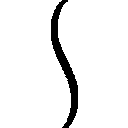

| はてな☆イリュージョン 4 | |
| 松智洋 | |
この本は縦書きでレイアウトされています。
また、ご覧になる機種により、表示の差が認められることがあります。
 ダッシュエックス文庫DIGITAL
ダッシュエックス文庫DIGITAL
はてな☆イリュージョン ４
松 智洋
The hand is quicker than the eye.（手は目より早い）
プロローグ
僕は、朝のＴＶ番組を実感をもって思い出していた。別に星占いが気になったわけじゃない。
今年の東京は、七月にして例年より暑さが厳しい、ニュースが告げていたのだ。
やっぱりこれって普通じゃないんだよね。普通じゃない、と思いたい。
ランニングを終え、都心の雑踏の奥に隠された西洋屋敷の広い中庭で、僕は荒い息をつく。
「真、どうしたのよ。このくらいで」
身体にぴったりとしたジャージを着た僕のパートナー、星里果菜はペットボトルから一口水分を補給すると、もう一方の手に持ったタオルで汗を拭く。彼女の持つ万能のアーティファクト、マフくんもまた、ハンカチを握って甲斐甲斐しく果菜――通称、はてなの汗を拭った。
布が布を持って空中を自在に動く不思議な光景は、不思議な道具を見慣れた僕にとっては日常だ。つい三カ月ほど前に上京した僕を待っていてくれたのは、この美貌の幼馴染みと彼女の一族が作り続けてきた魔法の道具との新しい暮らしだった。とはいえ、今の妙に自信に溢れたはてなの様子は、ほんの一週間前とは全然違っていて新鮮だ。
「ぼうっとしちゃって、どうしたのってば」
口を尖らせた少女の顔が至近距離に近づいていた。僕は慌てて距離を取る。彼女は長い黒髪に潤んだような大きな瞳を持つ、国民的美少女コンテストなんかに出たら即座に優勝してしまいそうな美少女だ。幼い頃は性別不明のおてんば娘だったのに、成長したら驚くほど綺麗になってしまった。見た目だけなら大和撫子なのに、自分の美貌に無頓着で時々僕を困らせる。
「な、なんでもないよ。ただ、すっごく暑いなって」
そう、暑いのだ。北海道の自然に囲まれて育った僕にとって、七月にしてこれほど蒸し暑い東京の不快指数は想像を絶するものがある。特に、日課の訓練をしているような時には堪えた。
「あー、そっか。真は涼しいところから来たんだもんね」
納得したように微笑むはてなに、僕はほっと胸を撫で下ろすが、はてなは何故か自信たっぷりに僕に人差し指を向けて胸を張る。
「でも、そんなこと言ってられないよ！ あたしたち、正式に怪盗として活動することになったんだから！ 初仕事に向けて、休んでなんていられないでしょ！」
満面の笑顔は、彼女の一族が住む隠れ里から与えられた課題をクリアした自信に満ちている。
そんなはてなの顔を見ていると嬉しくなって、暑いなんて言ってはいられない。
「そうだね、せっかく、合格したんだから、僕ももっとアーティファクトを使えるように......」
「あっ！」
突然、声をあげると、はてなは慌てて僕の陰に隠れた。手に持ったペットボトルを僕に押しつけると両手でマフくんを懐に押し込む。
「モーニン！ ふむ、朝のランニングか、なかなか感心だぞ、小僧。嬢ちゃん」
「......」
アーティファクトで敵味方を判別してくれる正面玄関を素通り状態で入ってきたのは、この屋敷に先日から逗留しているマッチョな熟練奇術師、グレゴリー・キャメロット先生とその一番弟子のディナ・キャメロットの二人だった。お揃いの運動着は特注品としか思えない。グレゴリー先生もディナも英国貴族らしいから、そのくらいは当然なのかもしれないけど。
二人も、朝の運動をした帰りのようだった。
「小僧、奇術の基本は何より体力、そして筋力だ。地道な基礎訓練を欠かしてはならん」
「は、はい！」
上機嫌なグレゴリー先生は、あっという間に上着を消滅させるとタンクトップ一枚になり、ふんぬ、とポーズを決めた。鋼鉄のような筋肉が浮き上がり、先生は満足そうな顔で僕を見る。えーと、でも、こんな格闘家みたいな筋肉のマジシャンは先生だけだと思います。
「師匠、汗が冷えます。早く戻りましょう」
ご機嫌な筋肉紳士の笑顔を無視して、銀髪の美形は溜め息もつかずに促した。
そして、作り物めいた美貌に冷笑を浮かべて僕を見る。
「君たちも早く部屋に戻ったらどうだい？ 学校に遅れるだろう？ ボクたちはこれから奇術の基礎練習をするから、時間を取らせないでほしい」
そう言われて、ぐっ、と詰まる。僕も先日、ディナと同じグレゴリー先生の弟子になったのだ。奇術師を目指す僕にとっては夢にまで見た本当に一流の奇術師の指導者を持つことができたのに、今のところ、僕はたいして教えてもらう機会を得られていない。
「あのっ、僕も学校から帰ってきたら......」
「すまないね。今日は午後から明日の公演の打ち合わせがある」
「おい、ディナ。それは多少早く終わらせても......」
「師匠、以前仰っていたお店の予約が」
「うむ。どうしても外せないのだ。すまないな、小僧」
「じゃあ、明後日は......」
「近くの老人ホームに慰問に行くことにしていてね。奉仕は貴族の義務だから」
「それでは夕飯前に時間を作って基礎の手業を......」
「師匠、そのホームには昔そば打ち名人と呼ばれた老爺が」
「夕飯は食べて戻る。小僧、近々機会を作るので、自分にできる奇術を練習しておくのだ」
「......はい」
こんな調子だ。ディナは冷たい目で僕を見る。まるで「ボクは君を認めていない」と言っているような視線。もともと、僕の弟子入りにディナは反対だったのだ。
「では、ミズ・カナ、身体を冷やさないように。朝食の席でお会いしましょう」
「は、はいっ」
上品な笑顔ではてなにだけ会釈して、ディナとグレゴリー先生は屋敷に入っていく。
屋敷の玄関で、エマさんが二人を迎えているのを見ながら、はてなは溜め息をついた。
「はあ......マフくん、見られたかと思った。気をつけないと」
「ディナはアーティファクトのこと知らないから......ばれないようにしないとね」
「うん。アーティファクトに関わって大変な思いをする人を、わざわざ増やさなくていいもんね。真だって、最初は巻き込むつもりはなかったんだし」
照れたように舌を出すはてなに、僕は目を細めた。この愛くるしい幼馴染みの背負った荷物を半分背負えるパートナーになれたことが、ちょっとだけ誇らしい。本物の奇術師の弟子にもなれたんだし、これから機会はいくらでもあるに違いない......と思っていたんだけど。
「でも、ディナって格好いいよねー。真には妙にキツいところあるけど、紳士だし」
少し顔を赤くしたはてなに、僕は憮然とするしかない。ああ、早く修行がしたい。
僕は、溜め息を隠すように手にしたペットボトルを呷る。瞬間、はてなが悲鳴をあげた。
「あーっ、それっ、あたしの飲みかけ！」
「えっ、あっ、ご、ごめーんっ！」
真っ赤になったはてなにペットボトルを取り返され、何事かとこちらを見るエマさんたちの前で、僕はぺこぺこと頭を下げることになるのだった。
そんな日常が続くある日のことだった。夕食の食卓で、はてながぷるぷると頰を震わせていた。その向かい側で、平然と星里家の次女、夢未ちゃんが夕飯の野菜を器用にフォークとナイフで刻んでいる。小さくすれば食べやすいという作戦なんだろうか。
「ど、どうして言ってくれなかったの夢未～」
「......父様が帰ってきたら言うつもりだった」
悪びれもせず言う夢未ちゃんに、僕もツッコまずにはいられない。
「でも、授業参観なんて早めに言わないと、予定が合わないと衛師匠も......」
「真兄様、ありがとう。でも平気。今までだって来られない時もあった」
夢未ちゃんは僕のことを兄様と呼んで懐いてくれている。黒髪で純和風な美少女のはてなとは真逆に、西洋のビスクドールさながらのふわふわの金髪に青い瞳。二人のお母さんであるメイヴさんの容姿をしっかり受け継いでいる。ちなみにはてなはお父さんの衛師匠似で、要するにどちらも美男美女から生まれたサラブレットっていうところだ。
「でもクラスのお友達のご両親は来るんでしょう？」
「来られない人だっている」
「でも......せめてあたしが姉として出席......」
「明日は僕たちも学校あるからね、はてな」
妹大好きなはてなは、釘を刺さないと学校を休んで参観に行ってしまいそうだ。でも中学生の僕たちじゃ叱られて門前払いだと思うよ、はてな。
それにしても、メイヴさんはまだ戻ってこられないし、衛師匠もあいにく公演でいない。執事のジーヴスさんは事情があって無理だろうし、星里家の敏腕メイドのエマさんも、僕らと同じ中学に通う身だからダメ。つまり星里家は誰も夢未ちゃんの参観には行けないってことか。
中学生になった僕たちは、正直、授業を親に観られるなんて照れくさいだけだけど、小学生の頃は来てくれないと寂しいと感じた覚えがある。それにお母さんのメイヴさんが海外に出かけてもう何カ月も経っているのだ。夢未ちゃん、寂しいだろうな......
「わかってるけど......」
「姉様、わたしは大丈夫」
ちょっとだけ微笑んで言う夢未ちゃん。
「は、はわわ......夢未、可愛い」
はてなは、幸せそうな顔で妹の微笑を見つめる。常日頃無表情の夢未ちゃんの微かな笑顔は、心配屋の姉を黙らせる威力を誇っているのだった。しかし、彼女は負けなかった。
「ふわっ！ ご、誤魔化されないんだから！ 夢未っ、そういう大事なことは早く言いなさい！」
「......姉様の意地悪」
誤魔化せなかった、と微かに夢未ちゃんが口を尖らせると、その背中をまあまあ、というように彼女のクマのぬいぐるみ型万能アーティファクト、ガウガウが撫でる。
そこに、優しいノックとともに星里家の執事、ジーヴス・ウッドハウスさんの声が響いた。
「皆様、キャメロット様がお戻りです。入室してよろしいですか？」
その言葉に、ガウガウは慌てて人形らしく椅子に座り直す。そしてメイドの桜井エマさんとジーヴスさんに連れられてディナとグレゴリー先生が来たことで、その話はなんとなくそこでお流れになったのだった。
「ええっ、お人形ちゃんの授業参観!? 今日っ!?」
次の日の昼休みのことだ。仲良しグループも固まってきた我がクラスの女子は、それぞれ机を集めて昼食をとる光景が見られる。数少ない男子の僕たちも、加わっていたりするんだけど。
その中で特に響くのは、僕たちのグループのリーダーであり、はてなの幼馴染みである桔梗院心美さんの声だった。至近距離で叫ぶ彼女に、はてなは顔をしかめている。
「私、行く！ 待ってて夢未ちゃん。この桔梗院心美があなたの孤独を今すぐ救うわっ！」
ガタッと椅子を蹴飛ばしかねない勢いで、桔梗院さんは立ち上がった。
「待ちなさいってば、心美。あたしだって我慢したのよ」
今にも駆け出しそうな桔梗院さんの腕をはてなが摑んで止めている。
「ふふふっ、この桔梗院心美の辞書に我慢なんて言葉はないのよ！」
いや、威張って言うことじゃないよね、それ。
「それにもう終わってるから。一時間目から四時間目までなの」
「えーっ、それもっと早く言ってくれなきゃ」
昼休みまで桔梗院さんに教えなかったはてなが正しいと思います。
「夢未ちゃんが可哀相じゃないの！ きっと寂しい思いをしているわ」
「それはわかってるよ。だけど......仕方ないじゃない」
はてなの呟きは、僕の感想と同じだ。
「ああ、やっぱり小学校まで行って慰めてこようかな。今ならきっと甘えた姿を見せて......ふふふっ。お人形ちゃんに抱きつかれちゃったりなんかしてっ！ ああっ、はてなじゃなくて私がお姉ちゃんだったら良かったのに、とか言われたらどうしようっ！」
桔梗院さんの妄想に、仲良しグループの男子たちもすわ、と席を立つ。
「わ、わたくしも参りますぞぉっ！ 金髪ロリ......夢未様のお力になれるのでしたらっ」
「オレも参加するぜっ！ 将来が楽しみな美少女だよなぁ！ はてなちゃんの妹さん」
はてなが凄い目で二人を睨んでる。林田くん、藤吉郎......星里屋敷に来る日はさらに遠ざかったと思うぞ。一際大きな身体で重箱三段のお弁当をかきこんでいた四人目の男子、松尾さんが呆れたように箸を置いて二人の首根っこを摑む。
「止めなさいよ。っていうか、家族じゃない人が授業参観に来たらタダの不審者でしょうが。桔梗院のお嬢ちゃんも、むしろ嫌われると思うわよ、それ」
「う、そ、そう？」
性別不詳の松尾さんのアンニュイな口調に、さすがの桔梗院さんもたじろぐ。
「だいたい、授業参観に家族が来ないのが寂しいとかいうけど、それ、ホント？ わたしは、ぜんっぜん来てほしくなかったんだけど。うちの親、わたしの倍くらい大きいからさ」
ま、松尾さんの倍って......並のお相撲さんより大きいような。
「う......言われてみれば、私も、ダディが何人も子分連れてきて、何台ものカメラとビデオで撮られてすっごく困ったことあったわ......」
桔梗院さんの家は星里家とも縁の深い財産家だもんね。あの強面なお父さんにもそういうところがあるのか。藤吉郎たちにも思い当たることがあったのか、三人は大人しくなる。
だけど、そんな中で、はてながぽつりと呟いたのを、僕は聞き逃さなかった。
「......あたしは、母様が来るの、嬉しかったな。自慢のママなんだもん」
なのに、夢未ちゃんの授業参観にはメイヴさんは来られない。そのことが、優しいお姉ちゃんであるはてなに重くのしかかっていることに気づいて、僕は彼女の顔を見る。
「バカね、はてなちゃん。あなたにはできること、あるでしょ？」
そんなはてなに、松尾さんはパチン、と音が出そうなウインクを送ったのだった。
その頃。孤独を心配されているはずの夢未は、それどころではない騒ぎの中にあった。
「アンコール！ アンコール！」
巻き起こる歓声と拍手に、夢未のクラスだけではなく次から次へと人が集まっている。
「レディス・アン・ジェントルメン！ アンコールの希望をありがとう。では」
パーンと音がして教室に光が弾け、薔薇の花びらが散る。ど派手なパフォーマンスを披露するのは、天才奇術師星里衛。
「きゃああああ、すごおい、きれ――っ」
「ええっ！ なんで増えたり減ったりすんの―――？」
「なぜだろうな？ 知りたければわしの手に注目せよ。行くぞ、ほら」
カン！ と鳴る度に数を変化させる知恵の輪。空を流れ飛ぶトランプカード。見事な手技を見せるのは、世界的魔術師サー・キャメロット。
「夢未ちゃんのお父さんってすごいねーっ！」
「星里、いいなーっ！ 毎日こんなのが観られるんだ――っ！」
「えっ、どうして!? 目の前で観ててもわかんない！」
「わああっ、すごいすご――――いっ」
「もっともっと、観たあい！」
昼休みの小学校の教室は、世界的に有名なこの二人の演技に興奮のるつぼと化していた。
「............寂しいほうがまし、かも」
興奮しきったクラスメートたちの中で、夢未一人が頭を抱えていたのだった。
放課後になるとすぐ、僕とはてなは示し合わせたように急ぎ足で学校を出た。
十分程度の道のりを、二人で駆けていく。毎朝のランニングのおかげで、息もばっちりだ。
「お姉ちゃんだもん。夢未をちゃんと慰めないと！」
松尾さんに励まされて、はてなは不思議と張り切っていた。妙に世知に長けた彼のアドバイスはただ一つ、「いい？ 寂しい時に必要なのは、お話を黙って聞いてくれる人と......たっぷりのご飯よ！ お菓子もいいわね。とにかく、あなたが慰めてあげればいいでしょ？」という非常に納得のいくものだった。
「あたし、久しぶりにホットケーキ焼く！ 小学校の家庭科で習ったから、できるはず！」
多少不安になる発言をしつつ、はてなは走る。彼女は、少し饒舌になっていた。
「夢未は素直に寂しいとか言わないから......かえって心配なんだ」
確かに、しっかりしてて、感情の起伏があまり見えない夢未ちゃんの気持ちを慮るのは難しい。でも、寂しくないはずはない。振り返った教室の後ろに、クラスのみんなのご両親と一緒にメイヴさんと衛さんがいてくれたら、どんなに良かっただろう。
「手伝ってくれるよね、真？」
「うん、当然。パートナーなんだから」
一人じゃ越えられない壁だって、はてなと僕、それにエマさんとジーヴスさんがいてくれるんだから大丈夫。メイヴさんを早く夢未ちゃんに、はてなに会わせてあげたいよね。人気の途絶えた辺りで、僕たちはとうとう全力疾走となって星里家の門をくぐる。玄関が開いてそこにはエマさんの笑顔があった。
「おかえりなさいませ、果菜様、真様」
桜井エマさんは星里家のメイドさんだ。ジーヴスさんと同様にメイヴさんの一族の里からやってきたそうで、金髪で眼鏡の理知的な美少女だ。ちなみに僕たちの通う聖ティルナ学園中等部の三年生で生徒会副会長だったりもする。
「あれー？ エマさん、終業のチャイムと同時に走って帰ってきたのに、なんで先にいるの？」
「僕たちが校門を出た時、エマさんの姿なんて見ませんでしたよ。どうやって？」
「メイドの嗜みでございます」
相変わらず謎が多い人だ。美人で博識で家事万能の美少女で、先日ははてなの夢のために自分の一番大切なものを賭けてくれた。それ以来、はてなは今まで以上にエマさんに懐いていたりする。息を整える僕たちにタオルを差し出しながら、ニコニコしながらエマさんは呟く。
「ふふふふ、息を乱し、素肌を汗できらめかせる美少年も素敵ですね。こう、創作意欲が湧き上がってくるようです。真様は、やはり受けですね......ふふっ」
......まあ、ちょっと変わった人でもあるのですが。はてなが反応する。
「エマさんっ。変なこと言わないでください！ っていうか、今の、変なことですよね？」
「ふふ、ご想像にお任せ致します。それより果菜お嬢様。旦那様がお待ちですよ」
しれっと話題を変えたエマさんにツッコミを入れる余裕もなく、はてなは目を見開いた。
「パパ......父様が？ 帰ってきていたんだ」
「はい」
「ああ、もう、帰ってこられるならもうちょっとだけ早ければ良かったのに。そうしたら夢未が授業参観で寂しい思いをしないですんだ......」
「それに合わせて帰宅なさったようですよ」
残念そうにはてなが言うと、エマさんが微笑んで訂正した。
「じゃあ、パパ、夢未の授業参観に行ったの？」
エマさんが頷くのに僕とはてなは思わず顔を見合わせる。やっぱり、みんな夢未ちゃんのことを思っている。家族の絆の確かさに、僕たちは微笑んだ。
制服を着替えてリビングに顔を出すと、衛師匠とグレゴリー先生がソファに並んで座っていた。その向かいに座っているのは夢未ちゃんと、ぬいぐるみのガウガウだ。
「師匠、おかえりなさい」
「おかえりなさい、父様。夢未良かったね、今日の参観日に父様が間に合って」
「......良くない」
憮然とした感じの夢未ちゃんの返事。あれ？ なんだろうこの和やかとは言いかねる雰囲気は。夢未ちゃんはそっぽを向いていて、グレゴリー先生と衛師匠が何故か宥めている感じだ。
「そんなこと言わないでくれよ、マイプレシャス」
「そうとも。わしは、メイヴの娘に善かれと思ってだな」
困った顔の大人が二人。状況が判らない。それに、先生がいるのに珍しくディナがいない。
「まずはおかけになってください、お二人とも」
ジーヴスさんに促されて座ると、エマさんがお茶を僕とはてなの前に並べてくれる。
「旦那様は夢未様の授業参観で、キャメロット様と共にマジックショーを披露なさったそうでございます。ディナ様は、夜までキャメロット様のご用でお使いに行かれているとか」
「ええっ!?」
ディナのことはともかく、星里衛とサー・キャメロットの夢の競演!? なにそれ、すごく観たかった。僕は、その光景を想像しただけで胸が高鳴るのを抑えられない。
「うわあ、夢未ちゃんが羨ましいよ！ どうだった？ すごかったよね？」
「......真兄様、そういう問題と違う」
詳しく教えてほしいと僕が身を乗り出すと、夢未ちゃんはむくれた顔をする。ごめん。
「大変だった。学校中から人が集まって......騒ぎになって、午後の授業も始められなくて」
「ごめんよ、夢未、あんなことになるとは思わなかったんだ」
「噓。最初から衣装着てた。準備万端だった」
衛師匠が、観念したというように頭を下げる。グレゴリー先生もやれやれという顔だ。
「すまない。夢未も学校に戻ってくれたし、クラスのみんなも夢未に良くしてくれたみたいだし、ここはサービスすべきだろう、そう思ってね。サー・キャメロットにもお願いして、お礼をしたいと思ったのさ。素敵なサプライズだったろう？」
「......やり過ぎ」
ぷい、と夢未ちゃんはそっぽを向いて立ち上がった。夢未ちゃんは先月まで不登校だったから衛さんなりの気遣いなんだろう。その気持ちが判るからか、珍しくはてなが師匠を庇う。
「まあまあ、夢未。誰も来ないよりは良かったんじゃない？」
「姉様、わたしと同じ目にあっても言える？」
「う......うーん。いやかも......」
「果菜ぁ......っ！」
長女にも否定されてしまって、愕然という顔でショックを受けている衛師匠だ。
でも、そんな師匠に構わず、はてなは夢未ちゃんの手を握った。
「でも、大丈夫だから」
にこっと妹に微笑みかけるはてな。
「あたしが母様を取り戻すから！ 次の授業参観には母様が来てくれるよ」
「姉様......」
「あたしに任せてよ。怪盗ハテナが、夢未とあたしの母様を、取り戻してみせるんだから！」
はてなは自信満々にそう告げる。夢未ちゃんは、一瞬だけ不安そうに僕の顔を見る。
僕は、なるべく力強く頷いた。はてなだけじゃなく、僕の決意も含まれているのだ。
「......うん」
微かな頷きに、はてなが顔を輝かせる。機嫌が直ったことにほっとしたのか、衛師匠たちも笑顔を見せる。
「もうすぐ夏休みだもん。二十四時間、ずっとアーティファクトと怪盗のことに時間を使えるんだから。二学期までに......母様をレルータの里から盗み出してみせる」
「おいおい、メイヴは無理矢理捕らわれてるわけじゃないよ」
衛師匠が、少し困ったように言う。エマさんがにっこりと微笑んだ。
「私は、お嬢様についていきますよ。私は、里の場所も知っておりますし」
「エマさん......」
盛り上がる一同に、フッ、とグレゴリー先生が笑顔を見せる。そして、ポケットから一通の手紙を取り出した。
「モリガンからだ。マライア嬢ちゃんにも同じものを渡してある」
「モリガン......おばあさまから？」
モリガンさんというのは、アーティファクトを作り伝えてきた魔法の隠れ里、レルータの里を統べるはてなたちのおばあちゃんだ。モリガンさんと、グレゴリー先生は旧友らしい。
「開けてみるがいい」
先生に促され、はてなは手紙を開く。大きな目が見開かれる。
「三つのアーティファクトを集めれば......母様を日本に戻す......？」
僕たちの視線に、グレゴリー先生は、重々しく頷いた。
「それが、試験の真意だ。対象が三つである以上、複数の手が必要なのだ。嬢ちゃんたちには、この作戦に参加する権利がある。だが、やるかどうかは自由だ」
......なるほど、と思った。この話をするためにディナを外に出したんだな。
「もちろん、やる。あたしは人の悲しみを盗み、笑顔に変える......怪盗ハテナだもん！」
強い意志を見せて顔を輝かせるはてなに、僕も当然のように頷いた。
集った仲間たちの顔にも、厳しくも優しい笑顔が浮かぶ。
この夏休み、僕たちは本物の怪盗になる。生まれてから一番暑い夏が、近づいていた。
 第一幕
第一幕
リゾート☆中学一年生は難しい
「あたし、どうしてこんなところにいるんだろ......？」
はてなは呆然と呟いた。僕は答えない。ていうか答えられない。だって僕もどうしてこんなことになっているのかまったく判らないからだ。
夏。
降り注ぐ太陽、白い砂浜、ビーチを駆ける水着の少女たち。
僕たちがいるのは桔梗院家が所有するプライベートビーチだった。
「アンタたち、いつまで同じことばっか言ってるのよ」
そう言ったのは小柄な少女。パラソル付きのデッキチェアに横たわり、分厚いサングラス越しに太陽を見上げながらトロピカルなジュースに舌鼓を打つ――そんな絵に描いたようなリゾート満喫スタイルなのが桔梗院心美さんだ。
そして、今回のこの状況の首謀者であり実行者でもある。
「せっかく海に来てるんだからアンタたちも楽しみなさいよ」
「楽しみなさいよと言われても......」
僕とはてなは顔を見合わせる。
つい先日、はてなのお母さんの故郷――レルータの里から『三つのアーティファクトを回収せよ』という指令を受けたばかりだ。いろいろと感情の行き違いもあってはてなはまだ里のことが信用できないみたいだけど、それでもこの指令をこなせばお母さんのメイヴさんが家に帰ってこられるということで僕も含めてみんながやる気になっていた。
ところが、いざ夏休みに突入してみるとこうして白い砂浜が目に眩しいビーチでのんびり海水浴などを楽しんでいる。もちろんここに至るまでにいろいろと紆余曲折はあった。
要するに、できることがないのだ、現在の僕たちには。
三つのアーティファクトは、『雷神の指輪』『風神の彫像』『地神の弦』と呼ばれるものだそうだ。メイヴさんが作ったものではなく、里に伝わっていたものだという。
強そうな名前なのに個々のアーティファクトとしては二級品らしくて、数代前に里の外に売られたそうだ。ところが、メイヴさんが里に呼び戻された原因――その理由は教えてもらえなかったんだけど――に関わるアーティファクトだということが判った。だから取り戻せばメイヴさんは帰れる。それが手紙の内容だった。日本語じゃない文字で書かれているのに僕たちにも理解できたから、たぶん手紙自体もアーティファクトなんだろう、読み終わったら手紙は消えてしまった。もちろん、僕たちは一も二もなく探したよ。そのアーティファクトの在り処を。
ジーヴスさんに手伝ってもらい、夢未ちゃんが世界中の情報を集め、衛師匠はもとよりマライアさんと桔梗院家も八方手を尽くして探しているけど手がかりすら得られない。
なのに、今すぐにでも怪盗になってアーティファクトを取り戻しに行きたいはてなは、夏休みに入ると毎日朝からまだか、まだアーティファクトの所在は見つからないのかとせっついた――ついに桔梗院のおじさんがキレた。髪の毛の寂しいおじさんだが、怒ると結構怖い。
「夏休みに子どもが家に籠もっているな！ 健全に外で遊んでこい！」
衛師匠やマライアさんも諸手を挙げて賛成し、追い出された先は、桔梗院家の別荘だった。
「こんなことしてていいのかしら......」
はてなはぽつりと呟いて目に鮮やかなブルーのジュースをストローですする。
隣で寝転んでいる桔梗院さんよりもやや成長したボディラインを大きめのパーカーに隠し、お父さん譲りの黒髪を買ったばかりの麦わら帽子の中におさめた今の格好を見ると、本当は海に来るのが楽しみだったんじゃ？ と思わなくもないけど、それは言わないでおいた。
このプライベートビーチはこの夏からリゾート地として営業をはじめるということで、僕たちはその第一号の客として招待されたのだ。
プレオープンというらしくて、正式に営業を始める前に一度身内のお客さんでスタッフの実践訓練をするというのが目的だそうだ。それにしたって太っ腹だ。なにせ招待されたのは僕たちを含めた聖ティルナ学園中等部一年Ａ組のクラス全員なのだから。
「うふふ、予定が空いていた私は幸運でしたわ」
「本当に。両親と一緒にヨーロッパに行くより、お友達とこうして遊べるほうが楽しいです」
桔梗院さんとはてなの周りには、何人ものクラスメートが寝そべっている。
お嬢様学校の美少女たちの水着品評会とも言える、ある意味拷問だ。
「不知火くんは、どうして水着になりませんの？」
悪気のない問いを発したのは、一学期過ぎたというのにまだ名前を覚えられないおっとりしたお嬢様だ。というか、クラスの行事や部活に全然参加してなくて申し訳ない。
僕の服装は、星里家の執事服だ。いつものお仕着せを着てトレイを持ち、はてなたちの飲み物を用意して控えている僕に、クラスメートは不思議そうな顔をする。
「師匠の命令で、旅行の間ははてなのお世話を頼まれているんだ。一人じゃ心配だからって」
「ああ、そういえば、星里さんのお父様に手品を習っているんでしたね。凄く上手でした」
以前、クラスで奇術を実演した時のことを思い出してくれたのか、少女はうっとりと微笑む。
「ありがとう。でも変わった人だから。まあ、こういうこともあるんだよ」
「ふふっ、その服、似合ってます。うちの執事になってほしいくらいですわ」
口八丁手八丁、という言葉もあるように、言葉を上手く使うのも奇術のうちだ。
「真、楽しそうね」
暑さが一瞬で吹き飛ぶようなひんやりした声。僕は、なんでもないようにはてなを見る。
「は、はは......そうだね」
ぷい、と反対を向いてしまったはてなに、僕は溜め息を押し殺す。僕がこうして服を着ているのは、いざというときにはてなを守るためにスマイルステッキと奇術のタネを隠しているからで、水着しか着ていないと、ステッキを隠すのが精一杯で対応力が減じるからだ。
星里家に来て、僕は三度の冒険を経験した。一つ目は、マライアさんに『紋章』が奪われた時、二つ目ははてなが富野沢家に捕らわれた時、三つ目が、富野沢家からエマさんのアーティファクトであるメイド服を取り戻した時だ。どれも実戦というには相手も手加減してくれていたし、実際に盗みを成功させたとは言いにくい。でも、その三回で共通していたこと。
――アーティファクトだけじゃなく、僕の奇術ははてなの役に立つってことだ。
アーティファクトは万能だけど、制約もあれば警戒もされる。まだ未熟とはいえ、奇術で得た技術が僕の戦術を増やしていた。だからそのためのタネはいくつも持っていたいのだ。
「まったく......すぐにデレデレしちゃって......」
そんな僕の気持ちには気づかず、不機嫌になってしまった僕のパートナーに、桔梗院さんがにしし、と人の悪い笑顔を向ける。
「はてな、ヤキモチ？」
「は、はぅあっ！ な、何言ってるのよ心美！」
「あら？ あらら？ 星里様、桔梗院様、そのお話、ぜひ詳しく......」
「そうですわ。一学期が過ぎるのに、あまりお話しできていませんもの。この機に......」
きゃいきゃい、と真っ赤になったはてなを中心に話が盛り上がったのをいいことに、僕はそっとその集団から距離を取った。個人所有とは信じられない広いビーチを少し歩く。
「うおおおおおおおおおおおっ！」
僕の前には、海を前に雄叫びをあげる男が一人。
「青い海！ 白い砂浜！ 輝く太陽！ そして水着の女子たち！ オレは......オレは......今日この日のために生まれてきた！」
雄叫びをあげる男こと坂上藤吉郎は天に向かって宣言する。
人生の目標がそれでいいのかという疑問はさておいて、藤吉郎は歓喜していた。
藤吉郎が大好きなのは女子。しかも水着の女の子となれば女神にも等しい。
そんな女神だらけのプライベートビーチに降り立った彼は今や人生の最高潮である。
「ちくしょう......最高じゃねぇか......死に物ぐるいで勉強してティル学の編入試験を受けてよかったぜ......」
もはや感極まって男泣きに泣いていた。
「いい加減落ち着きなよ。そんなことばっかり言ってるから、寄るなって言われたんだろ？」
先ほどの水着美少女たちが並んでいた場所には、藤吉郎と林田くんは立ち入り禁止を宣言されていた。ビーチに来て僅か五分の早業だった。桔梗院さんが命令した理由はご覧の通りだ。
藤吉郎たちの周りにも全く女子がいないわけじゃないけど、まあ、誰も二人のことを気にしていない。
「うるせぇ、そんなこと言われたって涙が止まらねぇんだ！」
藤吉郎はずずっと鼻をすすりあげる。
「コンビニに入る度に雑誌コーナーに並んだグラビアをチラチラと横目で見ていた少年の気持ち！ ゴミ置き場で拾った雑誌をこっそり持ち帰って何度も何度も繰り返し見たあの日々！ 結局、母ちゃんにバレて捨てられてしまった時の慟哭！ ネットを自由に使えるようになった時の開放感と疎外感！ 夢にまで見続けた実物の水着女子が今！ 目の前にいるんだ！ オレが今どれほどの感動を覚えているのか......真、おまえには決してわからないだろうぜ！」
うん、判らない。判りたくもないです。
「藤吉郎どのおおおお！ わかります！ わかりますぞその気持ちいいいいい！」
と思ったら同じように感涙にむせび泣くやつがいた。
「わたくしも、今日のこの日をどれほど待ち望んでいたか！」
林田くんは藤吉郎に呼応するかのように声を張りあげる。
「雑誌のグラビアを切り抜き親に隠れてファイリングしたあの日！ 穴が空くほど見つめながら『本物の水着女子と一緒に泳げたらなぁ......』と夢に描き枕を抱きしめた夜！ わたくしの今はあの日々があってこそ！」
「おおっ！ 林田！ おまえもそうか！ そうなのか!?」
「はい！ 藤吉郎どの！」
がしぃっ！ と堅く抱き合う二人。いや、みんな気味悪そうに見てるから......
「うっさいのよそこのバカ二人！」
「いてっ！」
怒声とともにこつん、と当たったのは小さな貝殻である。投げた犯人は桔梗院さんだ。
立ち上がって怒りの表情だ。結構離れてるのに判るくらい怒ってるな。
「もーっ、立ち入り禁止区域拡大！ 声も聞こえない場所に行きなさい！ せっかくのリゾートが台無しじゃない！」
「ぬ、ぬおおおっ！ そ、それは勘弁してくれ！ これ以上離れたら、女子がいない！」
......ブレないなぁ。
「だったら静かに楽しみなさい！ 他のお客さんに迷惑をかける客に対処する練習、あんたたちで実験してもいいのよ？」
ちらり、と送った目線の先にいるマッチョなブーメランパンツの男子の一群。ライフセーバーさんかと思ってたけど、どうやら、それだけじゃないようだ。
「くっ、ひ、卑怯だぞ、桔梗院......」
「藤吉郎どの、ここは抑えて！ あの方の水着姿をこの目で見るまでは、ここにいましょう！」
「そ、そうだった......あの人の水着姿を見るまでは......！」
いったい、あの人とは誰のことだろうかと首を傾げたちょうどその時――
「みなさん、お待たせしました」
浜辺に女神が降臨した。
......じゃなくて、遅れてやってきたエマさんだ。
うーん、僕もちょっと藤吉郎たちに影響されてしまったらしい。
エマさんはそれこそグラビアアイドルに勝るとも劣らないスタイルを学園指定の水着で包み、柔らかな表情を浮かべていた。眼鏡をかけていないのは今は星里家のメイドではなく学園の一生徒、桜井エマ先輩としてここにいるからだ。
「う、うおおおおおおおおお！」
またもや藤吉郎が雄叫びをあげた。
「あらあら、坂上くんどうしたの」
「どうしたもこうしたもないっす！ ありがとうございますありがとうございますありがとうございますありがとうございますありがとうございます！」
もはや感動しすぎて拝みはじめる始末である。
「真兄様......っ」
そんなエマさんと一緒にやってきた夢未ちゃんが、たーっと駆け寄ってくるとそのまま僕の後ろに隠れる。どうやら知らない人がいっぱいで緊張しているらしい。
「ちょっと、どうして真のほうに行くのよ......」
少し離れた位置からはてなの不満の声が聞こえる。単に近くにいたからじゃないかな。
ていうか、しまった！
ここには林田くんもいるんだった！ 若干、いやかなりロリコン気味な林田くんは以前にも金髪美幼女の夢未ちゃんを見て興奮しすぎて気絶してしまったことがある。それが水着となると今度はいったいどんなことになるやら......
「お、おい林田！ ダメだぞ！ いくらなんでも幼女に手を出すのは人として......！」
藤吉郎が慌てて林田くんを押さえる。
「............」
「......あれ？ 林田？」
意外にも林田くんは無反応だった。
「気絶してますね、彼」
エマさんが冷静にそう指摘する。
「林田おまえ......なんて顔してやがるんだ......」
気絶した林田くんはそれはそれは幸せそうな顔をしていたという。
「つーかさ、せっかく海に来たんだし、もっと遊ぼうぜ！」
気絶した林田くんを適当にその辺に寝かせたところで藤吉郎が叫んだ。
言いたいことは判らないでもない。うちのクラスの女子たちはみんな大人しいのだ。
せっかく海に来たのに、せいぜい波打ち際で戯れるくらいだ。田舎育ちの僕からしたら、泳いだりスイカ割りしたりビーチバレーしたり岩に張りついた貝を採取したり岩場に隠れた生き物を棒で突いてみたり無闇に高いところから飛び込んでみたりいくらでも遊べるのに、ちょっともったいない気はする。
「え？ 行ってきたら？ 誰も止めてないよ」
相変わらずデッキチェアでくつろぎながら桔梗院さんはそっけなく言う。
「だあああ！ 一人で行けって言うんだろ？ それじゃ意味ねーんだってば！ 水着の！ 女の子と！ 海で！ きゃっきゃうふふしたいの！」
藤吉郎の本音ダダ漏れだった。
「やーよ。プレオープンの準備で昨日までメチャクチャ忙しかったんだから。今日はのんびりするって決めてるの」
「あ、あたしも......はしゃぐの、恥ずかしいし......」
「だあああああっ！ 桔梗院もはてなちゃんもなんかこう情熱が足りねぇって！ そうだ、エマさん！ エマさんはやっぱ海に来たら遊びたいっすよね!?」
「ふふ、遊ぶのはやぶさかではないのですけど、私は先生の代わりにみんなの引率係をするように言われていますから。あまり遊ぶことに夢中になっているわけにはいかないですね」
「なぜだ!? どうなってんだ！ 夏だぞ!? 男女が泊まりがけで海に来ているってのにこのテンションの低さはなんなんだ!? 真！ おまえにはないのか、そういう熱いパッションが!?」
「へ？」
いきなり僕に矛先が向いた。僕はといえば、ちょうど夢未ちゃんと砂のお城を作っていた。
我ながら渾身の作である。まあ、ほとんど夢未ちゃんの力なんだけど。
「いや、楽しみ方は人それぞれだと思うけど......」
「真兄様、そっちからトンネルを掘る」
「お、いいね」
夢未ちゃんから魅力的なご提案。ここからは実に繊細な作業が必要だ。日頃の特訓の成果の見せどころである。
「よし、わかった！ おまえに聞いたオレがバカだった！」
なんか微妙に失礼だな......
「オレは今から、女子たちを誘ってくる！」
藤吉郎は高らかに宣言する。
「その言葉......待っていましたよ」
「は、林田......！」
いつの間にか意識を取り戻した林田くんが、ニヒルな笑みを浮かべて立ち上がる。
決して夢未ちゃんのほうを見ようとしないのはたぶん見たらまた気絶するからだろう。
「確かに、普段であればわたくしたちの誘いは無下に断られるでしょう。ですが、浜辺の女子はその開放感によってナンパの成功率が通常の三倍に跳ね上がる」
「本当か林田!?」
「わたくしのデータでも明らかです」
「そうか......そうか！ 行こう！ 林田！」
「お供しますぞ、藤吉郎どの！」
なんだかよく判らない決意を胸に、二人は波打ち際で遊ぶ女子たちのほうへ走り出していく。
僕としてはあんまり無茶しないことを祈るばかりだ。
「真兄様、お水足りない」
「うん、そうだね。ちょっと行って汲んでくるよ」
「ついでになんか食べ物買ってきてくんない？ お腹空いちゃった。はてなもなんか頼めば？」
「え、う、うん、じゃあ......焼きそば」
「私、かき氷」
「では、私も。海水浴場といえば溶けたかき氷、具の少ないラーメンに粉っぽいカレー、やっぱり具の少ない焼きそば......ぜひとも味わってみたいと思っておりました」
「......はいはい、判りました」
エマさんの嗜好には大いにツッコミを入れたいところだけど僕は素直に従うことにした。
都心から移動すること三時間、その土地の食材で作った料理と専用のプライベートビーチが売りの高級リゾートにそぐわない屋台や、古めかしい海の家がいくつも並んでいた。
売ってる食べ物も、焼きそば、ラーメン、カレーとひじょーに庶民的だ。
桔梗院さんが言うには「これが由緒正しい浜茶屋」だそうだ。よく判らない。
木造のロッジ風な建物は全体が真っ白いペンキに塗られていて、隣には椰子の木なんかも生えていたりして、いかにもな雰囲気を醸し出している。その、ザ・海の家という感じの建物の中でおじさんが二人、神妙な面持ちで角を突き合わせていた。
「衛師匠、グレゴリー先生......なにやっているんですか」
「見て判らないかね。将棋だよ」
古風なうちわで自分を扇ぎつつ、衛師匠はパチンと音を立てて駒を進める。グレゴリー先生は片手に持った焼きそばを一気に体内に流し込みながら難しい顔をする。
「むぅ......やるではないか」
「誰が師匠に将棋を教えたと思っているんですか。まだまだ負けるわけにはいきませんよ」
「相変わらず遊ぶのだけは上手いやつめ。マジックはちっとも上達せんかったくせに」
「師匠、それは言わない約束です......はい、王手っと」
「ぬううう!? ま、待った！」
「待ったはナシです。さて、これで先生秘蔵のウィスキーは僕の物ですね」
「おのれ......！ もう一勝負だ！ 今度は家にある秘蔵のワインを賭ける！」
「望むところです」
なんだか大人のよくない遊びを目撃してしまったけど見なかったことにしよう。
衛師匠とグレゴリー先生は、僕やはてなの引率ということでこの別荘についてきているのだ。まあ、ぶっちゃけてしまえばマライアさんたちに邪魔にされたわけです。
本人たちとしては、夏休み中にメイヴさんを取り戻すというはてなの誓いをサポートするために休暇を作ったらしいんだけど、この姿を見たら素直には信じられないなあ。
「グレゴリー先生、今夜は用事もないでしょうし、僕に奇術を教えてくださるんですよね」
「ん、任せておけ小僧」
将棋盤から目を逸らさず、グレゴリー先生はニヤリと口元を歪める。
「パートナーであるモリガンの孫娘も気合いが入っているようだしな。貴様もいいところを見せたかろう。一つ、わしが開発した中でも初歩的だが見栄えのするヤツをいくつか......」
「師匠、では、この魚は海に戻してきます。食べる時間がないでしょうから」
感謝の言葉を述べようとした僕が口を開く前に、冷静な声がした。
振り返れば、いつもの姿のままで片手に魚がいっぱい詰まったクーラーボックスを抱えたディナが立っている。一人で釣りをしていたみたいだ。グレゴリー先生が困った顔になる。
「ディナ、魚は夕飯の時に調理してもらえばいいだろう？」
「いいえ。これはボクが釣った魚ですから、ボクの自由にさせてもらいます」
「む、むうう。これは弱ったな」
食欲に弱いグレゴリー先生は、ちらちらと僕を見る。衛師匠も、面白そうに僕の顔を見ながら将棋の駒を弄んでいた。どうやら、僕がディナを説得しろ、ということらしい。氷みたいな美形で、僕には氷以上に冷たいこの先輩相手にどうしろと......と思いながらも口を開く。
「ディナ、意地悪言わないでよ。せっかく、みんなでリゾートに来たんだ。仲良くできないかな」
「ボクはリゾートに来たつもりはない。師匠についてきただけだ」
釣り道具とクーラーボックスを抱えている姿では説得力皆無ですが......
僕がじっと見ると、ディナはさっと顔を赤くした。
「こ、これは師匠が地元で取れたての魚を食べたいって言ったから仕方なく釣ったんだ！ キミと一緒にしないでくれ。ボクは一流の奇術師になるために師匠に弟子入りしたんだ！」
「僕だって、衛師匠に奇術を学ぶために弟子入りしたんだけど......」
「フン、遊び半分にしか見えないな。第一、ミスター衛の教えすら受けられていないのに、師匠にも取り入ろうなんて厚かましいにも程があるよ。いろんな有名人の弟子になったからって自分の技術が伸びるわけじゃない。ボクは、キミを弟弟子だとは認めていない」
師匠の弟子だとは認めていない、じゃなくて弟弟子とは認めていない、か。グレゴリー先生からは弟子入りを認められてるから、ディナはその点では争ってこない。でも、一緒に練習したり、僕がグレゴリー先生から奇術を学ぶために時間を貰おうとすると抵抗するわけだ。
グレゴリー先生の性格を完全に理解しているだけに悩ましいよ。先生も、一番弟子のディナには不思議と頭が上がらないところがあるみたいで、見てるだけなら面白いんだけどな......
睨み合う僕たちを放置して、大人たちは将棋に興じている。
「お、今回はわしが優勢じゃな。これで、詰みかな」
「いえいえ、グレゴリー師匠、詰んだように見えても、意外なところに活路はありますよ。例えば......」
パチン、と音がしたあと、グレゴリー先生がそれより大きな音で額を打った。
「こいつは参った。一手で形勢逆転とはな」
「将棋の面白いところは、自分の仲間である駒を上手く使うだけじゃなく、最初は敵の仲間だった駒をどう使うかが勝敗を決めるところでしょうね」
仲間、か。確かに、僕はディナにはまだいないパートナーがいたから弟子入りを認められた。やっぱり、ディナを説得するのもはてなたちの力を借りたほうがいいってことかな......あれ？
「そういえば真クン、何か買いにここに来たんじゃないのかい？」
「あっ、そうだ。ディナ、また夕飯の時にでも話をさせてよ。じゃっ」
頼まれていた買い物をすっかり忘れていたことに気づいて、慌てて店を回る。
「......ふん、どうせ、キミにはその程度のことさ」
銀髪の美形が、吐き捨てるように呟いたけれど、僕は気にする余裕もない。
大人たちは、やれやれ、というように肩を竦めたのだった。
――真兄様、遅いな。
夢未は一人、砂の城の隣に、砂の衛兵たちを作りながら彼女のナイトを待っている。
はてなと心美はクラスメートの女子たちと仲良く話しており、騒ぐ藤吉郎たちが目に余ったのか、エマは少し離れた場所で桔梗院家の強面ガードマンたちとともに二人を叱っていた。
「......」
リゾートに来る前に、満面の笑みを浮かべた心美に聞かれたことを思い出す。
「ね、お人形ちゃんもお友達誘ったら？ お金は心配いらないし、なんだったらクラスの子全員でも大丈夫。お客様を呼ぶ前の訓練だから、人が多いのはいいことなの」
自分を気遣っての提案だと判っているが、夢未は迷わず首を横に振った。つい最近まで不登校だった自分が、クラスになじんでいるとは思えない。それに......
「本当に一緒に来たかったの、クラスの子じゃ、ないし」
彼女の呟きを聞き取るものは、今は誰もいない。大切なアーティファクトであるガウガウは、海辺の浜茶屋のロッカーで彼女が呼ぶのを待っている。
城を守る一体目の砂人形を作り上げて、二体目にかかる。何となく屋敷でマライアとともに留守番をしているジーヴスに似てきた。それも、いつもの優しい老紳士ではなく、屋敷を守るアーティファクトの化身としての若く鋭利な姿だ。ジーヴスも、寂しい思いをしているだろうか。彼は、屋敷とともに里から日本へと、メイヴについてきたのだから。
「――母様」
姉を心配させないように、真に悲しい顔を見せないようにと、夢未は我慢している。
レルータの里から母が戻ってくるための条件にされた、三つのアーティファクトの奪還。
その情報が集まるまでは、邪魔だからとここで待っている。でも、本当は夢未はリゾートではなく東京でジーヴスたちと協力したかったのだ。彼女が持ついくつかのアーティファクトのうち、部屋に置かれたＰＣは世界のネットワークを自在に操れる電脳の魔法道具なのだ。役に立てるのに。そうでなければ、何のために自分の力はあるというのだろう。姉との関係を難しくし、学校に行くのすら不安にさせた超常の力を、母と家族のために使いたかったのに。
自らの手に宿ってしまった、一族に伝わる魔法。母と同じ力――
「あっ」
意識を向けた瞬間、夢未の手の甲に淡い光が浮かぶ。
月とハートを合わせたような不思議な紋章。アーティファクトを作り出す輝き。
「ダメっ、ここには『紋章』がないし母様もいないのにっ」
大慌てで、金髪の美少女は自分の作った砂人形を土に返そうとする。
しかし、砂人形は恭しく一礼すると、その両手を高く掲げたのだった。
両手でも足りなくて、僕は衛師匠にも手伝ってもらって浜茶屋を出る。
「ははは、真クン、女の子の買い物は大変だね。でも、こういうのもいいものだ」
普通の人がやったら絶対に落としそうなバランスで皿やカップを積み上げた衛師匠は、何でもないように砂浜を歩く。僕はその半分くらいで結構危なっかしいのに。
「衛師匠、今もアーティファクトを使ってお皿を持ってるんですか？」
「ん？ ああ、多少は使っているよ。何を使っているかは企業秘密というところかな」
にこにこしている師匠。やはり、この人は侮れない。アーティファクトを発動させてるところも全然見なかったし、どう考えたってお皿を上手に運ぶ専用魔法道具があるわけがない。
「僕も、アーティファクトの使い方、きちんと覚えないといけませんね」
「ふむ。それなら僕も多少は助けになれるかもしれないね。特に、キミの持つステッキは、はてなのマフくん同様に最高クラスのアーティファクトだ。使いこなせば、世界も変えられる」
きざったらしく笑う衛師匠。娘たちの姿を見つけて皿ごと手を振る。
「果菜！ 夢未！ パパがおやつを......ん？」
「師匠!?」
いきなり、師匠が真剣な目をする。刹那、悲鳴があがった。
「きゃあああっ！」
金髪の美幼女が、目の前に現れた砂の巨人を前に立ち尽くしていたのだ。
巨人のその額に浮かぶのは、不安定に明滅するレルータの紋章。
「今行く、マイプレシャス！ 真クン、落とすなよ！」
師匠は大量の皿を僕に放り出して駆けだした。
「えっ、えええっ!? スマイルステッキ！ お皿を止めて！」
瞬時に取り出したスマイルステッキに願いを込めると、体が熱を放つのを感じる。次の瞬間、空中で止まった皿を手早く摑んで地面に並べる。
顔を上げた時には、師匠は夢未ちゃんまであと三メートルくらいの位置だった。
砂人形は、振り上げた両手を下ろし、前方へと伸ばす。その先には、夢未ちゃんがいた。
「夢未ちゃん、逃げて！」
わずかな差で間に合わない、そう思った時だった。
「どっせえええぇい！」
夢未ちゃんがいた波打ち際から、海坊主――ならぬ、松尾さんが飛び出してきた。
両手を突き出していた砂人形に、泳いできた勢いのままぶつかっていく。
「あんた、なにしとーんじゃいっ！ 女の子が怖がってるでしょーがっ！」
中学一年生とはとても思えない巨体に横からぶつかられ、砂人形がぐらりと体を傾がせた。
「なに？ ちょっと、中に誰かいるんじゃないの？」
不思議な手応えにびっくりするワンピース型水着の松尾さん。彼のほうに向かって、砂の巨人が崩れていく瞬間、松尾さんの巨体が、ふわりと宙を舞う。
「ナイスだ。勇敢な少年......いや、お嬢さん、かな？」
「どっちでもいいじゃない。あら、いい男」
巨大な松尾さんを軽々と抱き上げて宙返りすると、衛師匠は夢未ちゃんの隣に立った。
「父様......」
「心配ない」
不安そうに自分を見上げる娘に、衛師匠は優しい笑顔を向けた。
ちょうど追いついた僕と、事態に気づいて駆けてきているはてなたちを見る。
「夢未！ 父様！」
悲鳴のような声をあげるはてな。師匠は松尾さんを下ろすと、今度は夢未ちゃんに手を差し伸べた。夢未ちゃんは、こくり、と頷いた。
「レディス・アン・ジェントルメン！」
凜と張った声が、海岸線に響く。
「我が娘を驚かせようとして張り切りすぎたようだ。お詫びに......最高のマジックショーをお見せしよう！」
白い歯が煌めいた瞬間、元の姿に復活した砂の巨人がふたたび夢未ちゃんに手を伸ばす。
「我が弟子よ、姫を守りなさい！」
「はい！」
何が起こっているのか判らない僕じゃない。僕はスマイルステッキを構えた。
追いついてきたはてなが、僕の背後に立つ。
「大魔術、人体消失......はてな、お願い！」
「はいっ！ マフくんっ！」
はてなは水着に仕込んでいた万能アーティファクトを黄金の翼のように広げた。
その耳元に、いつの間にか傍らに来ていたエマさんが囁く。
「果菜様、紋章を崩してください。それで、人形は砂に戻ります」
「――了解」
すうっ、と半眼になったはてな。僕は、気配だけで準備完了を理解した。
「３、２、１！」
カウント終了の瞬間、はてなは砂人形の頭上にいた。
「マフくん――拳形態」
はてなの一撃で、砂人形はさらさらと砂に戻る。
「やった！」
思わず歓声をあげる僕と観客たちに、衛師匠はチチチと指を振ってみせた。
「――真クン、それは違うな。ここからが、本番だ」
いつの間にかステージ衣装に身を包んでいた衛師匠は、両手を広げた。
「さあ、驚かせたお詫びだよ。星里衛のマジック、とくとご覧あれ！」
拍手と歓声を巻き起こして、そのまま海岸は衛師匠の独壇場となった。
そしてマジックが終わる頃には、夢未ちゃんの砂人形のことなんて、誰も覚えていなかった。夢未ちゃんは、師匠の奇術が終わるまで、僕とはてなの手を摑んで俯いていた。
僕は、衛師匠がメイヴさんたちを守ってきたやり方を、初めて目の当たりにしたのだった。
マジックの余韻も醒めやらぬ中、僕らはプライベートビーチに併設されたホテルに帰った。
できたばかりの建物は中も外もピカピカで女子たちは大喜びだった。
一方、僕たち男子はバイキング形式の夕食に大喜びだ。
「見ろよ！ 肉だ！ 肉祭りだ！」
シェフがローストビーフを目の前で切ってくれるのを見て、僕も思わず「おおっ」と声をあげた。いやぁ、いいよね肉。見ているだけでわくわくする。
「おっちゃん、オレのは分厚く切ってくれ！」
おっちゃん呼ばわりされながらもシェフはにっこり微笑んで藤吉郎と僕の分両方ともめいっぱい分厚く切り分けてくれた。いい人だ。
「女子だらけのビーチにキレイなホテル、旨い飯、最高の夏休みを過ごしてるなオレら」
「そうだね。後半には同意するよ」
前半については、執事見習いとしては気苦労のほうが多いんだよね。ちなみに、衛師匠のショーの間に、はてなたちには注文の品をきちんと配った。星里家の執事は、一度頼まれた仕事をおろそかにするわけにはいかないからね。エマさんも見てるし。
とはいえホテルの中では僕もお客さんだ。執事から解放された僕は、さっそくお肉をぱくつく。ピリッと辛いソースが柔らかい肉によく合う。
「やれやれ......肉ごときでそこまではしゃげるとはお二方とも案外子どもなのですな」
などと、嫌みたっぷりに林田くんが言う。
「んだよ、肉は正義だろ。つーか、そういうおまえはなに食ってんだ？」
「わたくしはもちろんコレです」
林田くんが自慢げに見せつけてきたのは世界的に有名なチェーンのハンバーガーだ。
「いや、おまえせっかくリゾートホテルに来てなんでハンバーガー食ってんだよ」
「わかってませんね。これは世界一売れている食べ物。つまり世界一うまい食べ物なのです」
いや、それはどうだろう......しかもバイキングに余所から持ち込みしても誰も得をしないよ。
「まあ、おまえがそれでいいならオレたちゃ文句はないけどよ」
僕も藤吉郎もそれ以上ツッコむ気にはなれなかった。
溜め息をついた僕は、ふと近くに立っている銀髪の美形さんに気づいた。
僕は、慌てて口の中の肉を飲み込んで立ち上がる。
「あ、ディナ。そうだ。昼間の件なんだけど、少し話がしたいんだ」
「ボクに話すことはないね」
とりつく島もないとはこのことか。ディナはバイキングのプレートに食べ物を綺麗に並べてはグレゴリー先生のところに運んでいる最中のようだ。
「だけど、僕もグレゴリー先生から奇術を学びたいんだ。ディナの邪魔にならないようにするから、僕も一緒に......」
「今、邪魔なんだけど」
にこりともしない美形は怖い。でもここで引き下がったら夏休みも台無しになりかねない。
「ごめん。じゃあ、僕も先生に食べ物を持って行くよ」
お皿に大量の肉を載せて、僕はディナと並んで歩き出そうとする。銀髪美形が僕を睨んだ。
「キミの皿にはエレガントさがない。師匠の食事としては失格だ」
そして美形はすっと僕の皿にフォークを差し出すと、魔法のように美しく並べ直す。
瞬き一つの間に、僕が適当に盛りつけた肉が整然と美味しそうに変化していた。
「......この程度はできて当然だ。『手は目より早い』、それが奇術の基本。キミにはそれが判っていない。それに、昼間はミスター衛とずいぶんなショーをしていたそうじゃないか、ボクのいないところで。砂の巨人なんて、ボクは全くタネが想像できないよ。さすがミスター衛」
滲み出る怒りに、僕は思わず一歩下がってしまう。そういえば、ディナは衛師匠のファンでもあるのだ。そりゃあ、見られなかったことを残念に思っているに違いない。
「キミもミスター衛の奇術の秘密をボクに隠している。おあいこ、だろ？」
さっと僕の持っていた皿を奪い取ると、ディナは表情も変えずに黙礼して背を向けた。
――いや、昼間のはアーティファクトのことがばれそうだったから、不可抗力で......
と、正直に言いたいけど、言えない。
かける言葉もなく、僕は諦めて藤吉郎たちと同じ席に戻った。
「なんだ。真はディナとうまくいってないのか？」
「まあね......グレゴリー先生から奇術を教えてもらうことになったんだけど、兄弟子のディナが認めてくれなくてさ」
どうにもそりが合わないというか、嫌われている気がする。弟子入りを認めてもらえた時も、ディナができない奇術を一つ見せるって課題に対して、パートナーが必要な奇術を見せたから合格っていう回答だったからなあ。ズルだと思われているのかもしれない。
悩む僕に、藤吉郎がなぜか自信満々で胸を張る。
「真、そういう時は風呂だ」
「風呂？」
「裸の付き合いって言うだろ。ディナと一緒に風呂に入って親交を温めるんだ」
「いや、話が見えないんだけど。だいたい、風呂といったい何の関係が......」
「そうとも言いきれませんよ」
今度は林田くんが眼鏡をきらーんと光らせる。
「昨今のラノベ原作アニメは開始から三分以内にヒロインの裸と遭遇することが勝利の必須条件とわたくしのデータでも明らかです」
「いや、ラノベを喩えに出されても......」
僕は唸るように溜め息をついてお肉を口に運ぶ。同じ師に学ぶんだし、ディナとは仲良くなりたい。でも、アーティファクトのことを隠しながら、奇術を学ぶのは難しい。ディナにとっては、衛師匠はすごい人なんだし、グレゴリー先生と天秤にかけてるように見えるんだろうな......そんな風に悩みながら口を動かしているといつの間にかお皿が空になっていた。
育ち盛りの身体はもっと食べたいと言っているので、また料理を取ってくることにする。
さて、次はなにを食べようかな......
「真くん、意外によく食べるのね」
と、あちこちと料理を選んでいた僕に声をかけてきたのは松尾さんだった。
相変わらずの巨体を椅子にねじ込んで食事をしている。
その食事の量がすごい。テーブルいっぱいに置かれた料理は全種類網羅している。ついでにローストビーフなんて塊で持ってきていた。
「やあ、松尾さん。昼間はありがとうね」
「ふふ、まあ、誤解だったけどね。奇術ってすごいのね。わたし驚いちゃった」
松尾さんの活躍がなかったら、夢未ちゃんはもっと怖い思いをしてたかもしれない。
「でも、みんなと一緒にいないと思ったら、ずっと泳いでたんだね」
「ほら、海岸って暑いじゃない。水の中のほうが涼しくていいのよ。身体も軽いしね」
「そ、そうなんだ......」
どう答えていいか判らない僕に、松尾さんは意味ありげな視線を向けた。
「ところで真くん、あなた今悩んでいるわね」
「え......！」
不意打ちを食らった僕は、思わず声をあげて驚いていた。
「いいの、それ以上なにも言わなくても。わたし、真くんの悩みは理解しているつもりだから。確かにそう。わたしたちまだ中学生だもの。二つを同時になんて、量が多すぎるわよね」
「ど、どうして......」
もちろん松尾さんには一度も事情を話したことなんかない。
なのに、どうして僕の悩みを知っているんだ？
「その荷物、わたしが半分いただいてもいいのよ？」
「で、でもこれは僕の......」
そうだ。どちらも僕にとって大事なことなんだ。
いくら上手くいってないからって、誰かに肩代わりさせるなんて......できない。
「その――大きなオマール海老、二つもなんて真くんには荷が重いんじゃなくて？」
「え......」
「それ、最後の二つよね。わたし、まだ食べてないのよ」
松尾さんの視線は僕の皿にある大きな赤い甲殻類に注がれていた。
「えっと......じゃあ、よかったらどうぞ」
「ほんと？ 悪いわねぇ」
なんだ、食べ物のことだったのか......
まるで心の中を見透かされているのかと思った。
いそいそとお皿から海老を移動させる松尾さんを横目に、僕はホッと溜め息をつくのだった。
海岸での大騒ぎから数日後。聖ティルナ学園一年Ａ組と星里家関係者のリゾートでの毎日は滞りなく流れていた。今日は、近くの神社で行われるお祭りに行くことになっている。
「あたしたち、こんなことしてていいのかしら......」
エマに浴衣の着付けをしてもらいながら、果菜はぽつりと呟く。
準備のいいことに、桔梗院リゾートは全員に浴衣を貸し出してくれるという。至れり尽くせりとはまさにこのことだ。だけど素直に楽しむ気分にはなれない。夢未も同じだと思う。
下着姿で順番を待つ夢未もまた、同様に浮かない顔をしていた。心美が溜め息をついた。
「はてな、あんたまだそんなこと言ってんの？ 東京にいたってできることないでしょ？」
夢未たちを悩ませたくないという気配りが伝わらないことに微かに非難じみた響きが滲み、はてなは判ってると、頰を膨らませる。エマがとりなすように笑顔を作る。
「果菜お嬢様、お気持ちは判りますが今、我々にできることはありません。強いて言えば本番に向けて英気を養うことですよ。アーティファクトの在り処が見つかったら、必ずエマがお手伝いしますから」
姉とも慕う年上の女性に宥められ、果菜はやっとほっとした顔を見せた。
「はい、できました」
最後にきゅっと帯を締めて果菜の着付けは完成した。
「ステキですよ。これならきっと真様も喜んでくれます」
「な、なんでそこで真の名前が出るのっ」
エマはふふっと笑って誤魔化す。
「真兄様、浴衣、喜ぶ？」
「ええ、夢未様もすぐに着付けて差し上げますから」
「うん。お願い」
エマはすぐに今度は夢未の着付けにかかった。
「真が喜ぶ......か」
なんとなく、姿見に向かってポーズをとってみる。
「なんだ、けっこうノリノリじゃない」
「ち、ちがうってば！」
果菜は顔を真っ赤にして怒鳴るが、誰が見ても可愛い否定だった。
「みんな早く来ないかなぁ」
僕は道の先を確認してはそわそわとしながらその辺を歩き回る。
「落ち着けって真。そんなに焦ってもしょうがねぇだろ」
「そ、そうなんだけど......」
ああ、でも待ちきれない。みんななにをもたもたしてるんだろう。
「真どのがそんなにテンションが上がっているのは珍しいですなぁ」
「好きなんだよ。お祭り」
僕は少し照れながら答える。僕の実家じゃ夏と言えば夏祭りだ。田舎の町だけあって娯楽が少ないので、年に二回のお祭りはそりゃあもう町を挙げてのイベントになる。思えば、僕が初めて衛さんのマジックを見たのも夏のお祭りの催しの一つだった。そんなわけで、境内から喧騒に混じって祭り囃子なんかが聞こえてくると気分が盛り上がってくる。
ところが、準備万端でクラスメートたちを待つ僕のわくわく感に水をかける美形が一人。
「ふっ......子どもだな」
鼻で笑ったのは、いつも通りの格好のままのディナだ。
「マジシャンはいついかなる時でも冷静でなければね。キミ、向いてないんじゃないか」
さっそく嫌みが炸裂する。うう、そんなに絡まなくても......仲良くしたいと思っている兄弟子にこれだけ嫌われると、さすがに凹むなあ、と肩を落とす僕の隣で、藤吉郎が指さす。
「なー、だったら、アレはどうなんだ？」
屋台の連なる道の人混みに、飛ぶように舞い、はしゃいでいる二つの影がある。
「おおっ！ マモルよ、あれはなんだ!?」
「師匠、あれはリンゴ飴というものです。見ての通り小ぶりなリンゴを飴で包んだお菓子です」
「実に興味深い......むむっ!? あれはなんだ!? 大量のヒモを束ねて何をしているのだ!?」
「あれはお金を払うとヒモを一本選んで引けるのです。ヒモの先には景品がついています」
「なるほど、くじ引きか！ これはぜひとも挑戦せねばなるまい！」
グレゴリー先生と衛師匠です。ディナは、ボクは見ていない、というようにそっぽを向いた。
「おまえんとこの師匠たち、すっげー浮かれてるぞ」
「あ、あれは新しいマジックの参考にしているんだ！」
ま、まあそう見えなくもない......かな？
「お、来たみたいですぞ」
場が和んだところで、林田くんが声をあげた。
振り返ると、浴衣を着た女の子たちがゆっくりとこちらに歩いてくるのが見えた。
浴衣姿の桔梗院さんが僕らに向かって手を振っていた。桔梗院さんだけじゃない。クラスメートの女子たちが、それぞれ違った柄の浴衣に身を包み、からんころんと下駄の音をさせて歩く姿はとても涼しげで、不思議とみんな普段より大人っぽく見えた。
「やっほー、みんなお待たせー......って、なにその顔は」
「え、あ、いや......」
思わず見とれてしまっていた。
それは僕だけじゃなくて、藤吉郎や林田くんも同じだったらしい。
「確かユカタといったかな。みなさん、とてもよくお似合いだ」
僕が惚けていると、ディナが誰よりも早くみんなの浴衣姿を褒めた。
「ふふっ、ありがとう。真くん、あなたたちも何とか言いなさいよ。それともなに？ 私らがあんまりキレイだから見とれちゃったのかしら？」
桔梗院さんはにんまりと笑う。
「い、いま言おうと思ってたとこだし！ 別に見とれてねーし！」
「そ、そうですとも！ 女性の服はとりあえず褒めておけばいいと、わたくしデータではきちんとわかっておりましたとも！」
いや、それを言っちゃったら台無しだよ林田くん。しかし、ディナはこういう時もさらっと格好いいよな。僕もこういう風にスマートにできるようになりたいんだけど......
「真兄様っ」
自分の思いに沈んでいた僕を、夢未ちゃんが現実に戻してくれた。
「夢未も、浴衣」
夢未ちゃんは白い浴衣に可愛らしい金魚柄の帯を締めていた。
いつもは自然のままに任せている髪の毛も今日は帯と同じ柄のリボンで結い上げている。
腕の中にかかえたガウガウにも同じリボンがついているのがポイントだ。
「ああ、ごめんごめん。うん、とってもよく似合ってる。その髪、エマさんが結ってくれたの？ すごく可愛いね」
「ふふ......」
夢未ちゃんは嬉しそうだ。
「むうう......」
ふと気づくとハムスターみたいに頰を膨らませているはてながいた。
「え......な、なに？ なんではてな怒ってるの？」
「知らないっ」
はてなはぷいっとそっぽを向く。
なんだろう、僕なにかしたかな......？
「真くん、順番というものは時にそれ自体が重要だったりします。覚えておいてくださいね」
「は、はあ、順番......ですか」
「ふふっ、まあいいでしょう。そのうち理解できると思いますし、そういう鈍感さも、物語のスパイスとしては効果的です。きっと果菜お嬢様もわかってくださいますよ」
「エマさん、また漫画みたいなこと考えてるでしょ？」
ジト目になるはてなに、エマさんは口元を押さえてくすくす笑った。
「いいえ、私の創作でございます。そういうところが、二人ともピュアで素敵ですね」
わけの判らないことを言いながらも、エマさんも素敵な浴衣を着てご機嫌だ。
僕たちは、仲良く屋台を縫うように歩き出す。
境内はバラエティ豊かな出店と地元の人たちで盛況だった。
「これ、桔梗院さんとこでぜんぶ段取りつけたんだって？」
「そうよ、地元のお祭りはだいぶ廃れてたからねー。うちが商売を始めるからには、地元と密着して盛り上げていかないと」
桔梗院さんは自慢げに語る。確かにこれは自慢するだけのことはあると思う。
ホテルの利用者もこういうお祭りが近くであると楽しいだろう。
「こりゃあお嬢じゃねぇですか。おつとめご苦労さんです！」
たこ焼きの出店の前を通りかかると、いかにもなファッションのお兄さんが声をかけてきた。
「ちょっと、ヤス！ その言い方やめなさいって言ってるでしょう！」
「へ、へい、すんません......えーと、ご、ごきげんよう」
「そう、それでいいのよ」
そっち系のお兄さんの口からお上品なご挨拶が飛び出すと、桔梗院さんは満足そうに頷く。
「ヤス、あなた前みたいに中身の具をケチって入れてなかったりしないでしょうね」
「も、もちろんっす！ この間、お嬢にこっぴどく怒られて懲りました！」
「ならいいわ。しっかり励みなさい」
「へい！」
その後も、桔梗院さんが通りがかる度に店の中から声がかかった。
「お嬢っ、お疲れ様です！」
「だからお嬢言うなっつーの！ あんたまた当たりくじ抜いてないでしょうね？ あとでチェックするわよ」
「お嬢、うちのフランクフルト持ってってください！」
「ちゃんとお金払うからこっち全員分よこしなさいよ。あとお嬢言うな」
「お嬢！」
「お嬢！」
「お嬢っ！」
という感じで強面のお兄さん方から、次から次へと声がかかる。
「ミズ・ココミ、キミはもしかしてマフィアのドンなのかい？」
「違うわよ！ ディナ、この神社のお祭りに合わせてウチの家が興行を仕切ってるだけよ。合法！ 今時、お祭りに暴力団なんていないわよ！ 単にこの人たちはウチの関係者なだけだから！」
周囲の厳つい兄さんたちもうんうん、と頷いている。よし、納得しておこう、と、僕たちは視線を交わし、ディナも珍しく僕たちと同意するように頷いたのだった。
僕らは順番に出店を覗きつつ境内の奥へと向かう。フランクフルトに焼きトウモロコシ、綿菓子、リンゴ飴と、なんだか食べてばっかりだったけどみんなすごく楽しそうだった。
「師匠、もうそろそろ行きましょう」
「うぬぬぬ......！ まだだ！ これを完成させるまではこの場を動かんぞおお！」
グレゴリー先生が熱中しているのは型抜きだ。
巨体ながらもマジシャンだけあって手先の器用なグレゴリー先生だが、この型抜き屋の最高難易度であるところのサンダードラゴンには苦戦を強いられていた。
「くそおおお、おっさんに負けてられねぇぞ！ 林田！ おまえのデータベースに型抜きの必勝法はないのか!?」
「はっ、しばしお待ちを......ありました！ 型を抜く前に息を吹きかけて湿らせるといいそうですぞ！」
「おおっ、ナイス！」
「あ、それ反則だから」
型抜き屋のおじさんがすかさずルールを改訂する。
「って、バレてるじゃねぇかああああ！」
やれやれ、この調子じゃしばらくここを離れそうにないな。
「ディナクン、師匠たちは師匠たちで楽しんでいるようだし、我々も他で楽しもうじゃないか」
「ミスター衛がそう言うなら......」
ディナも衛さんの言うことには素直に従うらしい。
大きな身体を丸めて型抜きに没頭する師の姿を尻目にその場を離れる。
「しかしこうして祭りに来ると思い出すね、真クンと出会った日のことを。あの日も......」
「はい、お祭りでした。僕はあれを見てマジシャンになるって決めたんです」
今でも鮮明に覚えている。うちの地元の小さなステージでマジックを披露する衛さんの姿を目の当たりにして僕は感動のあまりその場で弟子入りを志願した。
あの日あの瞬間の出会いがなければ僕はここにいなかっただろう。
「ならばなぜそのままミスター衛だけに師事しない？」
「えっと、だからそれは......」
僕は口ごもる。実は衛さんはマジシャンとしての技能を習得していない。すべてアーティファクトの力だった......なんてディナに言えるわけがない。
「ディナクン、それは以前も説明した通りだ。僕は誰かに教えられるようなマジシャンではないんだ。だから我が師グレゴリー・キャメロット先生を紹介したんだよ」
「......判っています」
判っているとは言いつつも、ディナは納得していない様子だった。
「お、見たまえ」
雰囲気を変えようと、衛さんがディナに促す。
「......？ なんですか、あれは。小さな風船がいくつも浮かんでいます」
「あれは水風船釣りといってね......まあ、説明するよりやってみたほうが早い。真クン、教えてあげたまえ」
「え......」
そう言って、衛さんは僕らを強引に連れて行った。
「えーと......要はこのこよりの先についたフックで引っかけて風船を釣り上げるんだ」
「ふん......なんだ、思ったより簡単そうだな」
さっそくディナがこよりを水の中にひたす。
「よし、これで......ああっ！」
案の定、水に濡れたこよりは千切れてしまう。
「ね、こよりは水に弱いから上手く濡れないようにしないといけないんだ」
「そういうことは先に言うべきだ！ フェアじゃないぞ！」
「いや、言おうと思ったら君が先に始めちゃったんだよ」
「くっ......だが、これでコツは摑んだ。キミには負けない！」
というわけで、なぜだか僕らは水風船釣りで勝負することになった。
「真兄様がんばって」
「じゃあ、私はディナを応援しようかな」
「私は中立ということで。果菜お嬢様はどうするのですか？」
「えっ......あ、あたしは......ま、まこ......」
「おおっ！ 真くんめちゃくちゃ上手じゃんっ」
「あうう......」
なにやらはてなが後ろでジタバタもがいていたけど、僕はそっちに気を取られるわけにいかなかった。ディナが驚くべきスピードで上達していた。コツを摑んだという言葉はウソじゃなかった。マジックでは大きく水をあけられている。せめて他のことでは負けたくない。なんていうか自分でも子どもっぽいとは判っているけど、そこは男の意地ってやつだ。
「ふっ......少年たちよ、まだまだだね。若かりし頃、『祭り荒し』とまで呼ばれた僕の腕前を見せてあげよう！」
なにを思ったか、衛さんまで参戦してきた。
しかも一度に複数の水風船を釣り上げる荒技を繰り出そうとしていた。
「父様、それ無理」
「いいやそんなことはない！ 夢未、父の勇姿をその目に焼きつけよ！ どりゃあああ！」
だけど、やっぱりそれは無茶だった。
高く釣り上げられた水風船だったが、途中でぷつんとこよりが切れて落下してしまう。
「おおおおお！ させるかあああ！」
そしてあろうことか衛さんは落ちた風船を受け止めようとダイブしたのだ。
ばしゃあああああああああん。
「きゃっ！」
さて、それはいったい誰の悲鳴だったのか。
僕を含めてその場にいた全員が水をかぶってしまった。
「もう！ なにやってるのよ！」
「す、すまないマイプレシャス......」
「なにがプレシャスよ！ あとでママに言いつけるから！」
「ああっ！ 待つんだ果菜！ それだけは！」
なにやってんだか......
とりあえず水風船はすべて衛さんが弁償することになった。
僕らは浴衣だし、夏だし、まあ濡れてもすぐ乾くだろう。
問題は一番被害を受けたディナだ。
「ディナ、上着脱いだほうがいいんじゃないか？」
「大丈夫だ。問題ない」
「いや、でもそのままじゃ風邪ひくよ」
「い、いいんだ！」
なぜか、ディナは頑なに服を脱ごうとしなかった。それどころか、
「悪いが、ボクは先に戻らせてもらう」
そう言って、慌てたように帰って行ってしまった。僕たちは取り残された。
やっと仲良くなれそうだったのに......
子どもたちが海を満喫していた頃、星里の屋敷では――
「またニセモノの情報を摑まされたわ！」
マライアは憤慨しながら帰宅した。一族に受け継がれる美しい金髪を振り乱しながらずかずかと階段を上がると、応接室の扉を乱暴に開け放ち一直線にソファまで向かいそのまま身体を投げ出す。古いソファがギシギシと悲鳴をあげていたが、そんなこと気にする余裕もなかった。この数日かけて必死に集めた情報がわずか一時間ほどの外出ですべて水の泡になったのだから。
「あんなガラクタを持ち出してきてなにがアーティファクトよっ。桔梗院の情報も当てにならないわねっ」
「おかえりなさいませ、マライア様」
ジーヴスは恭しく一礼すると、テーブルに冷たい紅茶をそっと差し出す。
茶葉はニルギリ、氷は少なめシロップはなし、レモンの代わりにミントの葉を添えるのがマライアの好みであることをこの屋敷の執事はきちんと覚えている。
元々レルータの一族に受け継がれるもっとも古くもっとも大きなアーティファクトの一つがこの屋敷でありジーヴスとはそのアーティファクトが生み出した存在だ。
屋敷の維持管理だけでなく外敵からの防衛を担うこの執事は日本に移築された後も忠実かつ献身的にレルータの一族に仕えている。
現在、主不在の星里家においてはマライアこそがジーヴスの主人といえる。
ジーヴスが用意した極上のアイスティーをがっと摑んで一気に飲み干すと、よっぽど喉が渇いていたのか、もう一杯おかわりを要求してまたソファに身体を沈めた。
「だいたい、日本の夏ってどうしてこうもジメジメしてるのかしら。空気がねっとりしててちょっと歩くだけで汗が噴き出してくるわ」
マライアの愚痴は止まらなかった。ジーヴスはとくに返事を返すでもなく黙って彼女の不平不満を聞き続ける。主のストレス発散に付き合うのもまた執事の大事な仕事だ。
「まあいいわ。さっさと次を当たりましょう。ジーヴス」
「では、ただちに次の場所をピックアップいたします」
「急いでちょうだい。あの子たちが帰ってくるまでに一つくらい回収しておきたいわ」
「......よろしいのですか？ モリガン様のご指示では回収は果菜お嬢様方にさせるということでしたが」
「子どもに全部押しつけてのんびり見ていろって言うの？ 嫌よ、私は」
ジーヴスはマライアの言葉を受けて、珍しく思案するような顔をする。
「お嬢様方が心配なのでしたら、素直にそうおっしゃって差し上げればいいのでは？」
「別に心配なんかしてないわ。あの子たちには荷が重いだけよ」
「左様でございますか......」
「なによ、言いたいことがあるならはっきり言いなさい」
「いえ、こういう時、エマならばなんと言うかと考えておりまして......そう、思い出しました。ツンデレというのでしたな」
「うるさい！ 誰がツンデレよ！ いいから仕事してきなさい！」
ジーヴスが下がると、マライアは二杯目のアイスティーに口をつける。
レルータの長である、マライアとメイヴの母が回収を指示したアーティファクトはいずれもさほど強力なものではないとはいえ、長らく回収できずに有力者や犯罪者たちの手を転々としてきた曰く付きの物ばかりだ。そんな代物をあの子たちに回収させるなんてはっきり言って無茶。無謀と言ってもいい。長のモリガンがなにを考えてそんなことを指示したのか判らないが、マライア自身は子どもたちだけにやらせるつもりは毛頭なかった。むしろ自分の手ですべて回収してしまおうとすら考えている。だからこそ、手がかりが摑めない状況に苛立っているのだ。
「もうっ、どうして私が姉さんのために走り回らないといけないのよ......」
たった二人きりの姉妹。
誰よりも憧れた女性。
そして自分を置いていった人。
十年以上経った今でも姉にコンプレックスを感じていることに我ながら嫌気がさす。
「マライア様」
「なによジーヴス、まだなにか言いたいことがあるの？」
急に戻ってきたジーヴスにマライアは仏頂面を返す。
今度ツンデレだのなんだのと言い出したら階段の手すりの一つでもへし折ってやろう。
どうせすぐ直るのだし。だが、マライアはすぐにそんな考えを忘れてしまうことになる。
「マライア様にご連絡です」
「連絡？ 誰から？」
「里長......モリガン様からです」
「か、母さんから......？」
その名を聞いて、マライアの表情が硬くなる。里の長、モリガン。母親でありながらマライアにとっては誰よりも恐ろしい相手だった。
誰が呼びかけるでもなく果菜と心美の部屋にはクラスメートたちが集まってきていた。みんなが持ち寄ったお菓子をつまみながら普段できない話に花が咲く。
それはもちろん――恋バナ。
「聞いた？ 二組の子、高校生と付き合ってるって」
「ウソ、どこの高校？」
「ほら、駅の反対側にある」
「えー、あそこの人たちってなんだかすっごく乱暴そう......」
「そこがいいんじゃない。ワイルドで」
「あはっ、それわかるぅ」
普段のおしとやかな様子とは打って変わってあけすけなトークが繰り広げられる中、果菜はなかなか会話の輪の中に入っていけずにいた。
「あう......」
果菜も同年代の女子とのトークに興味がないわけではなかったけれど、それが恋の話となるとなかなか加わることができなかった。
「はてなちゃんはどう思う？」
「はぅあっ......!?」
急に話をふられたはてなは思わず変な声で呻いた。
「お付き合いするなら、やっぱり年上だよね」
「あ、う、うん......と、年上も、いいよね」
はてなは適当に相づちを打つ。
いいも悪いも恋をしたことがないので判らない――とは言えなかった。
「ダメダメ。はてなに聞いても無駄だって。この子、ついこないだまで『パパのお嫁さんになる～』とか言ってたんだから」
「い、いつの話をしてるのよ！ そんなの幼稚園とかの頃の話でしょ！」
「あれー、そうだっけー」
すっとぼける心美。この幼馴染みはやたらと記憶力がいいから困りものだ。
幼い頃の恥ずかしい出来事をいちいち覚えているのだから。
「でも、はてなちゃんには真くんがいるかー」
「ふえええええっ!?」
果菜の口からまた素っ頓狂な声が出た。
「ど、ど、どうして、そこで真がっ」
「だって、幼馴染みなんでしょ？」
「彼氏じゃなかったっけ？」
「ちがうって許嫁だよ」
「でも、この間はディナくんがすごくアプローチしてたよね？」
「きゃーっ！ もしかして三角関係!?」
「ねえねえ、そこのところ詳しく教えてっ」
「はぅあっ!?」
矢継ぎ早に質問されて果菜の目がぐるぐると渦を巻き始める。
「はいはい、みんなそこまで。はてながパニクっちゃってるから」
心美はそろそろ頭から湯気が出そうな果菜を見かねて救いの手を差し伸べる。
やっぱり幼馴染み。ちょっと意地悪も言うけどなんだかんだで、心美はいつも助けてくれる。
果菜は心の中でそっと感謝の言葉を捧げる。
「そういう桔梗院さんは？」
「私？」
「桔梗院さんってどんな人がタイプかと思って」
「うーん、そうね......」
心美はしばし思案顔をすると、
「たとえば将来の夢を持っていて」
「ふんふん」
「家事が得意で」
「それからそれから？」
「女の子に間違われちゃうような美少年とか？」
「はぅあっ!?」
どこまで本気かも判らない心美の言葉。
だけど、そのどうだと言わんばかりの顔は絶対にわざとだ。
前言撤回。やっぱり心美は意地悪だ。
そこは東京――銀座。政治家たちが多く利用する老舗料亭の一室に、いまひとつ統一感のない風体の男たちが集まっていた。
見る者が見れば彼らの素性はすぐに判っただろう。企業グループの会長や新興のＩＴ企業を立ち上げた若手社長たち、中にはヤクザや他国のマフィアの姿もあった。
彼らにどんな共通点があるのか、それを知る者は少ない。
強いて言えば彼らの成功にはアーティファクトの力があったということだ。
「では、ミズ・リーの言う通り今の星里にアーティファクト・クリエイターはいないというのは間違いないのだね？」
集まった要人たちの中でも年輩の男が尋ねる。その男は『翁』と呼ばれていた。
ここでは誰も本名では呼び合わない。それがここでのルールだ。
「間違いないですね。理由は判りませんが、今あそこにいるのは子どもばかりですよ。厄介な星里衛も公演が立て込んで頻繁に日本を離れているようです」
若いが仕立ての良いスーツを着た男がそれに答えた。
「ならちょうどいい。お宝をいただこうじゃないか」
「人ならうちの組から出そう。なあに、お務めを終えれば幹部にしてやると言えば喜んでムショに入る連中はいくらでもいる」
「星里の屋敷は宝の山だ。多少のリスクなど取るに足らんさ」
そうやって男たちが犯罪の計画を酒の肴にするのを、一人の美女が遠巻きに眺めていた。
「ミズ・リー、一つ確認したいのだが」
翁が美女に聞く。
「どうかミシェル・リー......どうかミシェルとお呼びください」
「ではミシェル嬢、きみはこの情報にどんな見返りを求めるのかね？」
ミシェルは微笑む。
「皆様と同じくアーティファクトですわ。私どもはいまだ小さい組織。アーティファクトも数えるほどしか所有しておりません。そこで、皆様がお持ちの品をいくつかお譲りいただければと思っております。もちろん、必要な額はお支払いいたします」
そう言って、ミシェルという名の美女はリストを差し出す。
翁から順番にそのリストを回し見していくと男たちの顔には笑みが浮かんでいく。
それは明らかな嘲笑だった。
アーティファクトの実情に疎くその力を理解しない小娘を嘲る笑いだ。
そしてミシェルには彼らの反応は予想の範疇だった。
「あー、よろしい。我々としてもこれらを手放すのは痛いのだが、相応の金額を用意してくれるのであれば問題なかろう」
「ありがとうございます。では、取り引きの日取りは追って確認させてくださいませ」
ミシェルは日本式に深々と頭を下げた。
目の前の男たちに、自らの笑みが見られないように。
すべて予定通りだ。あとはこのリストを障子の向こう側で聞き耳を立てている人間にそれとはなしに与えてやるだけだ。
そうすればきっとこの愚かで哀れな連中は思い通りに踊ってくれるだろう。
ミシェルは内に秘めた獣をふたたび押し隠し顔を上げた。
もう少しだけ、男たちに都合のいい女を演じてやるつもりだった。
第二幕
判明☆里の秘宝を取り戻せ
数日のバカンスを終えて東京に戻った僕たちを待っていたのは、完全に実家モードでジーヴスさんにお茶を淹れさせている不機嫌そうな金髪美女、マライアさんだった。
僕たちを追い出してこの家を乗っ取ろうとしたのはつい先日のことなんだけど、そんなことはすっかり忘れたように僕たちのお土産を受け取る。
「......ありがとう。嬉しいわ」
怠そうにテーブルにそのまま置いてしまうマライアさん。
「......あの、気に入りませんでした？」
「お気になさらず。照れておいでなのです」
ジーヴスさんが小声で教えてくれる。本当かな？
「うるさい、ジーヴス！」
真っ赤になったところを見ると、結構事実かも。苦笑しながら、衛師匠は肩を竦める。
「我が妹よ、その様子だと、よい報告はないみたいだね」
「うるさいわね。妹なんて呼ばないでよ」
衛さんの言葉にマライアさんは顔をしかめる。でも、反論はないようだ。
「まったく。私の計画が台無しよ」
「マライアさん、頑張ってくれてありがとう。ここからは、私たちも手伝うから！」
マフラーとともに力こぶを作ったはてなが、むん、と胸を張る。
「だーかーらー、子どもは邪魔。危ないし大して役に立たないし。もっと遊んでなさいよ」
「だけど、あたしたちも怪盗として認めてもらえたんだから......」
「そりゃあ、里はそう言ってるけどね。あー、もう」
金髪の美女は、ぐしゃぐしゃ、と頭を抱える。
「母さんも何を考えてるんだか......ったく、みんな姉さんに似て頑固なんだからっ」
マライアさんは立ち上がると、テーブルに載せられたお土産を摑んでリビングを出て行く。ちゃんと持って行ってくれるあたりが律儀かも。
「マライアさんはこのまま星里家にいるのかな？」
桔梗院家がマライアさん用の部屋を用意したんだけど、そっちに帰る気はないみたいだ。
「アーティファクトを取り戻すまでは、こちらにいらっしゃるおつもりのようですよ」
「......そうなんだ」
「ちょうど良いのでは？」
複雑そうな顔のはてなに、ソファの後ろに控えていたエマさんが口を開く。
「マライア様に、怪盗のやり方やアーティファクトの使い方をご指導願えばいいのではないでしょうか。あの方は、ああ見えて親切な方ですので」
「うーん、だけど......母様が帰ってきてから習えばいいかなあって」
はてなの言葉に、夢未ちゃんもうんうん、と頷く。ところがエマさんは視点を変えた。
「ですが、怪盗として活躍されるのでしたら、必殺技が必要ではありませんか？」
「また、エマさんったら漫画みたいなことを」
エマさん、本当にラノベとかアニメとか好きだよね。ところが真顔で返事が来る。
「あら、真様、メイヴ様は必殺技をお持ちでしたよ。絶体絶命のピンチにならないと使わない、秘密の能力はギリギリのところで生死を分けるのです」
「......衛師匠、本当ですか？」
「ああ。僕の口から語るわけにはいかないが、それはもう、正しく必殺の技だね」
重々しく頷く師匠。見れば、はてなも真剣に悩み始めていた。
「......必殺技......いいかも」
「え？ そうなの、夢未!?」
「かっこいい」
ここにもエマさんと同じにゲームや漫画好きな子がいましたよ。
「そうよね。必要よね、必殺技は！」
妹にいいところを見せる機会を常に探しているはてなが、この流れで止まるわけがない。
「ん、姉様、特訓しよう」
姉妹はそろって乗り気になってしまったようだ。きっと僕も付き合わされるんだろう。
必殺技......なんだか小さな頃に見ていた戦隊ヒーローを思い出して、中学生になったにもかかわらず、僕もわくわくするのを止められなかったのだ。
星里家に戻ったメンバーが新たな課題を見つけたのとは別に、異色の組み合わせで街を歩く二人がいた。リゾートから戻る途中に果菜たちと別れた、桔梗院心美たちだ。
「ミズ・ココミ。今日はいったいどこへ行くつもりだ？」
不満げに口を尖らせているのは銀髪の美形、ディナ・キャメロットだ。
ディナは、リゾートから星里家に戻る途中、グレゴリーからも引き離されて心美と同行していた。「日本に来てからずっと一緒だから、息抜きしてくるがいい」というのがグレゴリーの弁だが、自分が監視から逃げ出したかったようにしか思えない。
とはいえ、星里家で真たちと一緒にいることに、息苦しさを覚えていたのも、また事実だった。グレゴリー師匠以外は全くの他人。しかも、ライバルとなった真の師匠とパートナーたちに囲まれているのだ。気を抜ける状況ではなかった。
その思いを察しているのかどうか、心美は気安くディナの腕を取る。
「もうっ！ 呼び捨てでいいって言ってるじゃないの、ディナ。今日はねぇ、水族館なんてどうかしら？ ペンギン可愛いわよ」
「ぺ、ペンギン！」
ディナが一瞬、顔を輝かせ、すぐに表情を改めた。
「い、いや、師匠に自由にするよう言われたとはいえ、時間の余裕があったら、ボクは奇術の練習がしたいんだ。キミは好きにしていてくれ。ボクは星里の屋敷に戻って......」
「その師匠から遊べって言われたんでしょ？ 覚悟しなさいってば」
するりっとディナの腕を取り、放さないとばかりに腕を組む。端から見れば美少年と美少女の可愛いカップルで、通りすがりに飛ぶ視線も温かい。
「その前に買い物しようか。ディナ、日本に来てろくに買い物もできてないでしょう？ 滞在が長くなって困ってるものがあるんじゃない？ バッチリ案内するわよ」
小悪魔っぽく、見透かしたように意味深に微笑む心美に、ディナがたじろぐ。
「う......まあ、その通りではある、な」
「でしょう！ 大変よね。買い物してペンギン観て、美味しいドルチェのお店でお茶しようよ。ねっ！ マジックの練習はそれが終わってから」
「ミズ・ココミは強引だな」
「ほら、ミズはいらないの！ 私が嫌いなのかと思っちゃうわよ。心美。はい、繰り返して」
「......ココミ」
「よろしい」
心美が満足げに頷くのを見て、ディナは不思議そうな顔になった。
「ココミ、キミはカナやマコトの友達だろう。それなのになぜボクに構うのだ？」
心美はにっこりと笑うだけで答えず、ディナの腕に顔を寄せた。心美より少し背が高いディナと彼女はお似合いのカップルに見える。
心美がディナをリゾートに誘ったり、こうしてデートに誘ったりするのにはいくつかの理由がある。一つは、星里家で交わされるアーティファクトの話を聞かせないため。存在を知るだけで危険に巻き込まれかねない情報に触れる必要はないのだ。もう一つは、真とディナ、そしてはてなの関係が面白いからだ。はてなが心を許す幼馴染みが自分と真しかいないように、奇術師への夢を持つ真とディナの関係は貴重なものに思える。そこにはてなが絡むとさらに面白いのだ。興行主の娘としても、ディナと真には興味がある。でも、それだけじゃない。
「えー、だって、私はディナとも......」
最後の一つは、心美がディナを気に入っているからだった。そして、礼儀正しく真面目な紳士然とした態度の奥にある何かに、心美は興味を抱いてた。
ディナが何か言おうとしたとき。
「き、桔梗院！ 捜したーっ、捜したぜーっ！」
繁華街を歩きながら言葉を交わす美形たちに、息せき切って声をかける少年たちがいた。
「ぜい、ぜい......」
「わたくしのデータに間違いはないのです。ふふっ、見事に捜し当てましたな」
大きく手を振って駆けよってきたのはお馴染みの二人組だった。
「坂上、林田、また現れたわね。もうせっかくディナとデートを楽しんでいたのに台無し」
「デートって、それ何の冗談だよ。ぷぷっ」
「失礼な」
「わたくしだってディナとご一緒したく思いますよ。抜け駆けですよ、心美様」
「そうそう、抜け駆けだ、横暴だぞ、桔梗院。オレにもチャンスをくれ！ ディナと一緒なら女の子はすげー歓迎してくれるだろっ！ チヤホヤされてみてーじゃん！」
最初はイケメン爆発しろな勢いだった藤吉郎たちだが、海で一緒に過ごすうちに態度が百八十度変わった。下心満載とはいえずいぶんと好意的になったものだ。彼らの飽くなき欲望が、もしかしたら自分と同じ結論に辿り着いたのかもしれないと心美は思う。
「ふふん、ディナと並んで様になるとでも？ アンタたちが!? 笑っちゃう、ほほほほほーだ」
「ひでーっ」
「ガッデイムでございますっ」
「ふ......」
三人の息の合った会話に、ぷっとディナが噴き出す。
「おおっ、ディナが笑ったぜ」
「これはショートコント成功でございましょう」
「たまには役に立つじゃない。さすがは私の下僕たち。ま、ともかく私とディナはこれから買い物よ。荷物持ちにしてあげてもいいわ。その後水族館に喫茶店のコースね」
「おおう、完璧なデートコースでございますな、心美様」
「ふふーん。私に任せなさい！ さあ行くわよ」
そうして、四人に増えた心美たちはディナを取り巻きながら歩き出した。
買い物して水族館を巡り、四人はドルチェの有名な喫茶店に辿り着いていた。
「ペンギン......可愛かった」
苺の飾られたタルトを前に、ついというようにディナが漏らす。
「ディナは可愛い物好き？」
「ほおお、いいですなっ！ 可愛い物好きとは、ギャップ萌えでございまする」
「ギャップじゃねえだろう、林田！ 当然だろう」
心美が尋ねると、藤吉郎と林田のテンションがうなぎ登りになる。ディナは漏らしてしまった呟きを恥じるように俯いた。藤吉郎たちは顔を見合わせる。ディナがふと見せる年相応の表情は、今まで見せていた氷のような表情はなんだったんだろう、と言いたいくらいだ。
「ね、ディナ。サー・キャメロットがいつまで日本にいるか聞いた？」
「いや、聞いていない......ココミは知っているのか？」
心美の質問に、ディナは驚いたように顔を上げた。
「ほら、公演の手配ってウチがしてるじゃない？ 九月以降の依頼も結構来てるのよねー。桔梗院としては、もう少し日本にいてくださると助かるんだけどな」
「九月以降も......」
「夏休みが終わって、二学期だわ。ねぇ、もしもしばらく日本にいるってことになったら、ディナも聖ティルナに通わない？ ディナは中学の二年生かな？」
「うおっ、賛成！ 賛成！ たまにはいいこと言うじゃん、桔梗院！」
「素晴らしいお考えです、心美様はさすがでございますな。再度忠誠を誓いたくなりますぞ」
「ＯＫ、二学期も下僕続行ね。でね、転入手続きは桔梗院が責任持ってしてあげるから、たまには学生生活もいいんじゃないかしら？」
「......学校に通う？ 今さらボクが？ 必要を認められない」
ディナが首を横に振るのを藤吉郎たちがガッカリした顔で見ている。心美は溜め息をついた。
「ディナはグレゴリーさんの弟子になるために、イギリスの学校をスキップしたんだっけ？」
「そう。卒業している」
不思議と素直になったディナ。心美は、ディナが日本に来てから......いや、グレゴリーの弟子になってからの生活を想像して、なぜか、自分のことのように寂しい気持ちになった。
「学校って勉強するばかりじゃないでしょ。こうやって友達と話すのも大事じゃない？」
「そうです、そうですとも！ 学校は友達を作る場所であります！」
「学年は違うけどさ、俺、ディナのクラスに遊びに行くぜっ！」
「......友達？」
「友達でしょ、私たち」
自分とディナを指さす心美。その指をディナは呆然とした顔で見ていたのだった。
今日は、ディナもグレゴリー先生も星里家にいない。そのチャンスを逃さず、星里家の小ホールでははてなと夢未ちゃん、そして僕がアーティファクトの練習に精を出していた。
「必殺技って難しい」
「当然ですね。なんと言っても、切り札になる性能が必要ですから」
いろいろとマフくんの技を試した後に、はてなが呟くのを聞いてエマさんが答える。
「ん、難しい。でもいくつか考えてる」
「ガウ」
夢未ちゃんもガウガウと次々に試してみている。
「でも、マフくんやガウガウはまだなんとかなるかなって思うよ。僕に比べればだけどさ」
僕のアーティファクトであるスマイルステッキは、見たことのあるマジックを再現してくれるという能力だ。技を増やすならグレゴリー先生や衛師匠の見学をするのが手っ取り早いんだけど......師匠はともかく、グレゴリー先生の奇術はなかなか見る機会がないんだよね。
「真様、気弱なことを言ってはいけませんな。もう少し厳しくいきましょうか？」
「えっ、えええっ、も、もう十分ですっ」
好々爺然としつつ恐ろしいことを言うジーヴスさんに慌てて手を振って、自分のできることを考えてみる。
「うーん、既存のマジックの組み合わせ、とかかな......」
「そうだね。真のスマイルステッキってある意味チートだよね」
「ん......そう」
はてなの言葉に夢未ちゃんまでがコクッと頷く。アーティファクトの最高傑作と言われるマフくんやガウガウを持つ、はてなと夢未ちゃんにそんなこと言われても。
「つまり、三人揃ってアーティファクトの出来に主が劣っているわけですね。その優秀さをキチンと理解できていないと」
「うう、エマさん、その通りだけど......」
エマさんのメイド服だって立派なチートだと思うけど、でも僕と違って、エマさんは自分の持つアーティファクトの能力をちゃんと把握して使いこなしているところがすごい。
「僕は、スマイルステッキのことをもっと知らないといけないってことですよね」
「そうです。真様、それが大切な始まりです」
「マライアさんにもそれ言われたなぁ」
しゅんと肩を落としてはてなが言う。でも、はてなも夢未ちゃんもこのところの頑張りで成長いちじるしいと思うよ。それに比べてマジックの相棒としての付き合いは長いんだけど、スマイルステッキがアーティファクトだと知ったのは数カ月前だ。僕がこの場にいる誰よりも劣っているのは当然だろう。頑張らないと。
「あたしもマフくんのことをもっとちゃんと理解しないとね。何ができるのか、どれだけできるのか。マライアさんのように詳細にわかってないとね」
「ん、わたしも。ガウガウ、よろしくね」
「ガウッ！」
ガウガウは実はしゃべれるから、直接聞くことができるんじゃないかな？ なんて、これは夢未ちゃんも知らないことだから、言えないけどね。
「確かに、ご自分のアーティファクトのことを知るのはとても大切ですね。ジーヴスが愚考致しますに、難しく考えるのは結構ですが、難しいことであってはいけない、ということです」
ジーヴスさんは、真面目な顔で僕たちを見回す。
「よろしいですか？ 必殺技というのは、ピンチの時に使い、状況を逆転させる技です。常に他者に見せては対策を練られましょうから、簡単に使うわけにはいきません。技を出すときは、勝負を決める時のみでなければ必殺技とは言えぬでしょうな」
「同時に、自分が万全の状態で使う技ではない、ということでもありますね。満身創痍、という状況でも使える技でなければ結局、単なる強い技でしかありません。だからこそ、怪盗として何が起こるか判らない実戦に赴く前に考えておいて頂きたいのです」
エマさんも、真剣な顔でそう言った。僕たちは顔を見合わせる。
まだ、自分のアーティファクトの力をきちんと引き出すことすらできていない僕たちには、巨大な課題にしか感じられなかったのだ。
その夜。夕食が終わってしばらくしてから大人たちの集まりが、マライアお気に入りの応接室で行われていた。衛とジーヴス、グレゴリー、マライア、そしてエマの五人だ。
「それで、帰ってきたディナの様子はどうかね」
「少し落ち着いているように見えましたよ。真様とも特に言い争うことなく部屋に戻られたようです。心美様がうまく関わってくださったのでしょう」
「真様たちも、怪盗の実戦に向けて必殺技の開発を始められて、緊張感が出てきたようです」
「何よ必殺技って......単なる逃走用の切り札でしょ」
「マライア様、言葉のかっこよさは、大切なことですよ？」
「はいはい。漫画の話は聞き飽きたわ。それで、子どもたちに対する報告はそれだけ？」
「心美様からの報告では、ディナ様はお屋敷で疎外感を抱いておられるのではないかと。心を開いて話す相手がおらず寂しいことに、自分でも気づいていないのではないかということです」
「ふむ、わしからも桔梗院に礼を言わねばならんな」
グレゴリーが、珍しく弱々しく溜め息をついた。筋肉の塊だけに、似合わないことこの上ない。ジーヴスが、励ますように酒のグラスを差し出す。
「ディナ様は、とても大人びておられますから、真様たちの子どもらしさが歯がゆいのでしょう。時間が解決してくれるかと」
「今は、真様もディナ様や奇術のこと以上に、果菜様たちのお母様であるメイヴ様を取り戻すことに注力されていますから。ご本人も本意ではないのでしょうけど、真様はそういう方なんです。でも、奇術以外に大切なものを持っているように見えるのが許せないということではないでしょうか」
しかも、ディナだけがアーティファクトの存在を知らないのだ。星里家の宿命にディナを巻き込むことはできない。それが判っているグレゴリーは、ふう、と吐息をつく。
「しっかりしているようでもディナはまだ子ども。もう少し普通の暮らしをさせてやりたかったのだが、いつの間にか学校は飛び級して卒業する、親は説得する......挙句この有様だ。背伸びせずとも、そのうち背丈も足りて夢に手が届こうものを、なぜああも焦るのか......」
グレゴリーが感慨深く呟く。衛とジーヴスは顔を見合わせた。
「ははは、飛び級で卒業している以外は、真クンにそっくりですよ。ディナクンは」
「近親憎悪は愛情の裏返しだとすると、ディナ様と真様の将来に期待ですね」
にこにこと眼鏡を直すエマにマライアは冷たい目を送る。
「あら、あなたは果菜の味方じゃないの？」
「ふふ、果菜様は最後には自分の欲しいものを必ず盗み出される方だと信じておりますので」
自信たっぷりの眼鏡メイドに、金髪の叔母は肩を竦める。
「まったく、うちの関係者は子どもに甘くてイヤになるわね」
そこで、マライアは表情を引き締めた。
「さあ、お子様ランチの時間はここまでにしましょう。この一週間で私が確認したものよ。桔梗院から報告があった、複数の敵対組織が合同でこの屋敷を狙う強奪計画。実行はもう間もなくってところね。母さんも情報をくれたけど、価値の低いアーティファクトが攪乱用にか日本に多数持ち込まれてるそうよ。おかげで見事に引っかかったわよ、うんざりだわ」
桔梗院家から届けられた報告書をマライアはパンとテーブルに叩きつける。
「すでに見張りの目は何カ所にも。桔梗院家が潰していますが、撤退も早く、次から次へのいたちごっこという具合でございますな。ジーヴスが愚考致しますに、すべて事前に止めるのは難しいかと」
「それで、衛さんに聞きたいんだけど、どうするつもり？ 撃退くらい簡単だけど、あの子たちの目に触れないようにはできないわよ。人質に取られる可能性だって捨てられない」
どんなに優秀なアーティファクトを持っていたとしても、子どもたちには経験が圧倒的に足りていないのだ。正攻法で来るならなんとかできても、搦め手を使われたら経験不足が徒になるとマライアたちは知っている。
「足手まといだって何度も言っているのに、未だに怪盗するって言い続けてるくらいだもの。逃げろって言っても、聞かないでしょうね。あー、試験なんて認めるんじゃなかった」
「申し訳ありません、マライア様」
「いいのよ。人の話を聞かないのは姉さん譲りなんでしょ」
頭を下げるエマを放置して、はああと深い溜め息をつくとソファに背を預ける。
「アーティファクトの在り処は判ったのかね？」
グレゴリーの問いに、ジーヴスが頷いた。
「候補は絞られています。ただ、こちらの思惑通りの物であるか確定は難しいですね。組織に持ち込まれたアーティファクトと区別がつけづらいのです。なかなか賢い攪乱方法と言えましょうな。故に今回はあちらも本気で狙っていましょう、金も手間も惜しんでおりません」
穏やかに微笑んで「困ったものです」と言うが、ひとかけらも困っているように見えないジーヴスだ。酒のグラスを揺らして氷の音を響かせながら衛が言った。
「あの子たちをこの屋敷から連れ出す方法は考えてある」
「えっ？ そうなの、衛さん」
「奇術の基礎だよ。人間は二つのものに同時に集中できない。僕は、彼女たちを夏休みの旅行に連れ出すつもりだ。もちろん、僕の公演への同行という形でね」
「ダメよ、それじゃ。頑固で行動力だけはある姉さんそっくりの子どもたちが、姉さんを取り戻すアーティファクト探しを諦めて、海外公演の付き添いなんて選ぶはずないでしょう」
呆れた顔で却下しようとしたマライアを、筋肉の塊のような紳士が手で制した。
「まあ、嬢ちゃんたちを連れ出すには、もう一ひねり必要だな。考えてるのだろう、マモル？」
黒髪の偽奇術師は、得たりと笑う。
「ふっ、さすが師匠。要は、盗み出すアーティファクトさえあればいいのです」
マジックの基本は視線の誘導だ。見てほしいものを見させ、こちらの望む行動を促す。
「危険から遠ざけるために、危険に近づけるの？ それは悪手ではなくて？」
マライアが反論を述べる。叔母は姪っ子が実のところ可愛くてしょうがないのではないだろうか。少しの危険も許せないほどに。
「危険の少なそうなものを追わせればよかろう。経験を積めば成長もするであろうよ」
「......でも」
「圧倒的に経験が足りていないと言ったのはおぬしだぞ、マライア」
全員の視線がマライアに集まり、困ったようにグラスのワインを飲み干すと、ジーヴスにおかわりを要求する。
「衛さんはそれでいいと思うの？」
衛は仕方ないと言うように両手を持ち上げる。
「大丈夫。僕が守るよ。第一、見てないところで怪盗に行かれるくらいなら、傍にいたほうがましだと思わないか？」
「わしも守ろう。ここまで来たら付き合うぞ」
グレゴリーが誓うようにグラスを上げ、飲み干す。
「ほほう、星里衛とサー・キャメロットの競演ですか。それは派手でよろしゅうございますな。このジーヴス拝見できないのが残念でなりません」
ジーヴスはグラスにワインを注ぎ、マライアに差し出す。
「ジーヴスさん。私が動画を撮って参ります」
「頼みましたよ、エマさん」
星里家の使用人は、息の合った応答を繰り広げる。
「はあ、あなたも行くのね、エマさん。残念だわ。またジーヴスとお留守番なのね」
「私はお嬢様方から離れたり致しません。メイドの心得でございます。マライア様」
にこり、と微笑んでエマは断言するのだった。
「ディナ、迎えに来たわよ！」
玄関に桔梗院さんの声が響く。
「今、行くよ、ココミ」
銀髪の王子様が星里家の大階段を降りてくる様は、まるで映画の一シーンのようだ。
「おはよう、ディナ」
「おはよう、ココミ。今日も愛らしい。そのワンピースは涼しげでココミによく似合っている。ステキだよ」
一礼して桔梗院さんの手を取り、軽く口づける。ちなみに本当につけたらいけないんだそうだ。ギリギリで止めるんだって。キザな仕草がこんなに似合うのはなぜだろう。日本人じゃないからか？ 王子様だからかな。......悔しくなんてないからね。
「ディナって紳士的よねー。どこかの誰かも、少しは見習えばいいのに」
桔梗院さんがジーヴスさんの隣に控える僕を見るけど。
無理です。本場イギリス紳士を真似できっこない！
「そしたらはてなも嬉しいでしょ」
「はぅあっ！ ななななななな、なに言うの心美ッ！」
「ちょっと嬉しいかも」
「なに言ってるのよー、夢未―――ッ！」
「でも意外ね。心美とディナがこんなに仲良くなるなんて」
はてなは人差し指をあごに当てて呟く。
「何？ ヤキモチ？ はてなもお人形ちゃんも一緒に来てもいいよ？」
お嬢様らしい笑顔を浮かべてのお誘いだけど、はてなも夢未ちゃんも遠慮する。
当然、お誘いのなかった僕は答える必要すらなかったけど、ディナがいなければその分、堂々とアーティファクトの訓練ができるから、正直助かるのだ。
「今日はどこを回るの？」
「ふふふふ、外国人の憧れツアーを組みました。皇居、浅草、東京タワー、ついでにスカイツリー、そして秋葉原でメイド喫茶よっ！」
「なんだか最後が違う？」
「秋葉原は日本の誇るオタクの聖地よ！ 日本に来て見ないでどうするのっ」
勢いづいている桔梗院さんに、ディナが声をかける。
「ココミ、メイド喫茶よりもマンガ喫茶がいい。アニメも観られると嬉しい」
「え？ ディナ。アニメならウチでいくらでも観ればいいのに。夢未が好きで集めているから、量はかなりあると思うよ」
「ん、わたしの部屋にもたくさんある」
ディナの要求にはてなが不思議そうに言うと、夢未ちゃんも同意する。
「星里家ではアニメより、置いてあるマジックのビデオを繰り返し観てしまうからね」
まあ、そうだろうな。僕だってそっちを観るし。
「おけおけ、リクエストにはお応えしましょうだ。んじゃ、いってきま―――す！」
「いってきます」
「「「いってらっしゃーい！」」」
恥ずかしそうなディナの挨拶にみんなが返した。
二人が桔梗院家の車に乗り込み、その車が見えなくなるまで手を振って見送ったのだ。
「うーん、あの二人、もしかして......付き合ってるのかな？」
はてなは、にやにやと表情を崩した。
「ど、どうだろう......リゾートの時には、そんな感じじゃなかったけど」
桔梗院さんは日頃から芸能人やらテキヤのお兄さんやらに囲まれているけど、彼氏の話とかはないんだよね。その桔梗院さんがあれだけ気に入ってるんだから......でも、こんなことを言っている僕たちを、夢未ちゃんが珍しく冷めた目で見つめていた。
「鈍い......」
ぽそっと夢未ちゃんが呟いた。
「え、夢未ちゃんそれってどういう」
「なんでもない。さぁ、特訓。今日こそ必殺技を編み出す」
そう言って夢未ちゃんは小ホールに向かう。
「待ってよ夢未、あたしだって、今日こそはっ」
慌てて、はてなと僕も追いかけたのだった。
心美の車に乗ったディナは、ふう、と大きく深呼吸をした。
「ココミ、では、頼んだ通りに」
「......もう、いきなり。少しはデートを楽しんでもいいんじゃない？」
不満げに口を尖らせながらも、心美は優しい笑顔を見せる。
「ディナの希望通りにしてあげる。友達だからね」
心美の言葉に、ディナは口元をつり上げる。
「......ああ、ありがとう。ココミ」
その微かな違和感を見逃す心美ではなかった。
「あれ？ 私、本気で友達だと思ってるんだけど、何かおかしい？」
「いや、おかしくはない。ボクが学んだ日本語でも、友達はフレンドの意味だ」
日本語があまりに堪能なので忘れてしまいそうになるが、ディナは英国人なのだ。
妙な言い回しに、心美は困った顔になる。
「なんだか、ちょっと引っかかるんだけど」
「ははは、考えすぎだよ。ただ、まあ......」
ディナは、すでに見えなくなった星里屋敷のほうを見る。
「まだマジシャン見習いのボクにも、見えるものはあるってことさ」
不思議そうな顔の心美に笑顔と軽い溜め息を返して、ディナはシートに体を埋める。
ディナたちを乗せた車は、秋葉原などではなく、全然別の方向へと向かったのだった。
その日の夜、桔梗院さんが連れ出してくれたせいか、ディナはやけに機嫌がよかった。
おかげで、夕飯の後で僕はグレゴリー先生の教えを受ける機会を与えられたのだ。
今まで頑なだったディナがどうして軟化したのかは判らないけれど、きっかけは間違いなく夕飯の時の何気ない会話だった。
「グレゴリー先生には、得意なマジックはあるんですか？」
新しいアーティファクトの使い方。必殺技になるものを考えていた僕は、グレゴリー先生のマジックについてなんでもいいから聞ければと思っただけの質問だった。
「ふむ？ 小僧、難しいことを聞くな」
グレゴリー先生は、意外にもあごをひねる。ディナは馬鹿にしたように僕を笑った。
「世界的奇術師であるグレゴリー師匠は、他のマジシャンに真似できない大奇術をいくつも成し遂げたんだ。得意なマジックを聞かれても、多すぎて答えられないに決まっている」
愚かな弟弟子を諭す、という口ぶりで、これでもけんか腰じゃないほうだ。
「まあ待てディナ......そうだな。では、食事の後、二人ともわしの部屋に来なさい」
食後、ドキドキしながら先生の部屋を訪ねると、珍しくディナが素直に招き入れてくれた。
「お邪魔します。先生、よろしくお願いします」
「うむ。まあ、楽にせい」
先生は、僕を椅子に座らせるとディナのほうを振り向いた。
「ディナよ。わしの奇術の中で、最も得意だと思うものをあげてみよ」
「はい。やはり、金色に輝きながら分厚い鉄板を拳で破壊するグレゴリオ・パンチが一番インパクトがあると思います。ほかの誰も真似できませんし」
......何、そのそのままで必殺技なマジック。
「......ディナよ、あれは余興じゃ。奇術というよりは筋肉が要だからな。まあ、照明の仕込み方には技術が必要だが、それだけでできるものでもない」
そう言いながらもまんざらでもないように、先生はマッチョなポーズを決める。
「それ以外でしたら、有名な消失マジックである『ビッグベンの奇跡』か、それでなければ、やはり客席の上を歩く空中歩行の奇術でしょうか。他のマジシャンの方と違い、ほとんど準備や仕掛けの作れない場所でも行う大奇術は......」
「ああ、アレは確かにわしの得意技の一つだ。わしのような巨体でやると観客の目を引く上に、わしは細い糸を針で飛ばせるでな。足場を作れるのだ」
......えーと、それも結局は筋肉の仕業では。やっぱり、もっと筋トレしないとダメかなあ。
その時、グレゴリー先生はにやりと笑った。
「しかし、わしが本当に得意だと思っておる奇術はどちらでもない。今、見せてやろう」
そう言うと、グレゴリー先生はすっ、と姿勢を正した。
「ぬううううおおおおおおおりゃあああああああ！」
気合いの雄叫びとともに今にも服が弾け飛びそうなくらいグレゴリー先生の筋肉が膨張していった。いったいどんなマジックなのかと僕は固唾を呑んで見守る。
「はい！」
ぽん！ とやたらコミカルな音がして、グレゴリー先生の手の中に真っ白な物体が現れた。
「くるっぽー」
「え？ 鳩、ですか」
あまりに予想外だったので僕は呆気にとられて聞く。
「その通り。わしの一番得意なマジックはこの鳩を使ったマジックである」
「くるっぽー」
ニヤリと笑うグレゴリー先生に相づちを打つように鳩が鳴いた。
「こんな初歩的な、古くさいマジックだとは思わなかったか？」
「いえ、そんなことは......」
でも、確かに豪快な見た目と正反対な、かわいらしい鳩のマジックが得意技だと言われると意外としか言いようがなかった。ディナも、不思議そうに見ている。
「これは、わしが一番最初に覚えた技で、同時にもっとも苦手なマジックだった。しかし何度も何度も練習し、あえて大舞台でこの苦手なマジックを披露し続けてきた。するとある時ふいに自分がこのマジックを苦手と感じなくなっていることに気づいたのだ。それはわしにとって大きな自信に繫がった。今ではほれ、この通り」
「うわあ......っ！」
グレゴリー先生は次から次へと鳩を出す。なのに僕はグレゴリー先生のどこに鳩が仕込まれていたのか、さっぱり判らなかった。鳩のマジックなんて定番すぎて今さら驚くようなこともないだろうと思っていた自分が恥ずかしい。特訓に特訓を重ねて極めた技は、たとえ定番で見飽きたものであっても何度でも驚きと感動を呼び起こすのだと僕は思い知ったんだ。
「我が弟子たちよ、やってみるがいい」
「「はい！」」
まずは二羽ずつ渡されてタネを仕込むことにする。僕はグレゴリー先生の技を見て、なんとか真似ようとするんだけど、生き物は花やキャンディーと違って動くんだよね。
グレゴリー先生の手にいた時には大人しかったのになぁ。
「これでいかがですか、師匠？ アクション！」
ディナが手のひらの上でマントを翻すと、そこにはいままでいなかった鳩が現れる。
「くるっぽー」
さすがは兄弟子だった。軽々とこなしてみせる。手の上から消えたと思ったら、今度はシルクハットの中から鳩が飛ぶ。どうやって目を誤魔化しているのかわからない、見事なマジックだった。
「うむうむ。ディナは初めてではないが、まずは合格にしておくか。で、小僧はどうだ？」
「ま、待ってください。あ、あれ？ ちょっ、こら、おまえたち言うことを聞けって！」
鳩を仕込もうとするのに、その鳩たちがまったく言うことを聞いてくれない。勝手に僕の頭に止まったり、シャツの裾を引っ張ったり、やりたい放題だ。二人とどこが違うんだろう。
「ふっ......」
あ、いまディナが僕を見て鼻で笑った。
悔しいとか腹が立つとかいう以前に、自分の未熟さが情けなくなってくる。
「グレゴリー先生、すみません......」
「謝ることはない。最初から上手くできる者などおらん。あとはひたすら練習あるのみだ。なにわしの若い頃に比べればずいぶんとマシだ」
グレゴリー先生は豪快に笑う。
先生の言う通りだ。苦手なら克服すればいい。そのためにもひたすら練習しよう。
そしていつか僕もグレゴリー先生のように苦手を得意に変えられるようになるんだ。
「ふん......」
ディナは練習をはじめた僕を一瞥すると、スッと離れていく。
意外だった。きっとまた嫌みの一つも言われると思ったのに、あんなに上手にこなして、グレゴリー先生にも合格を貰ったのに、何も言わずに僕を見ている。
「最も練習した技、それこそが得意技だと、わしは思う。『手は目よりも早い』と言ってな、奇術師の動きは目では追えない、と言う意味よ。だが、本当はそれだけではない」
先生は、ディナと僕を交互に見つめる。
「気持ちというのは、目には見えぬだろう？ 奇術の根本は見えぬところにあるのだ。それは誰にも見られず繰り返される修練であり......いや、これ以上は自分で気づくべきだな」
先生は、べし、と自分の頭を叩いた。そんな先生に、何羽もの鳩が集った。
「......さて、小僧。少しは参考になったかな？」
鳩を先生に返した僕は先生とディナに頭を下げた。
「先生、ディナ、ありがとうございました！」
「......ボクは感謝される謂れはないね。だが......」
何か言いたげに僕を見たディナは、結局、何も言わずに扉を閉めたのだった。
得意技は、一番練習した技......か。大事なことを聞いた気がする。なら、必殺技はその先にあるのだろうか。自分の一番練習した手品。ステッキを握り締め、僕は子どもの頃に思いを馳せるのだった。
それは、突然の宣言だった。
夏休みの昼下がり、応接室に集められた僕たちを待っていた衛師匠は、突然こう言ったのだ。
「僕とグレゴリー師匠はオーストラリアに公演に行くことになった」
師匠の傍には、マライアさんもいる。グレゴリー先生とディナは出かけているけど、彼ら以外はみんな揃っていた。はてなが、代表して質問する。
「パパ......じゃなくて父様、母様が戻ってくるためのアーティファクトはどうするの？ そりゃあ、父様がいなくてもあたしはやるけど......でも」
衛さんだって一日も早いメイヴさんの帰宅を待ち望んで、そのために休暇を取ったと言ってたのに......リゾートにまでついてきていただけに、意外すぎる気がした。
「そのアーティファクトだよ」
スッと指を立てて衛さんは意味深に微笑む。
「探し出すべき三つのアーティファクトの一つ、『地神の弦』の在り処が判ったんだ」
「えっ!?」
衛さんははてなと夢未ちゃん、そして僕へと順に目を合わせていく。
「もしかして......オーストラリアにあるの？」
はてながいぶかしげに聞く。
「正解だ。マイプレシャス！」
「だから海外公演に行くことにしたよ」
「待って！ 父様、アーティファクトはあたしが盗み出す！ ちゃんと試験に合格したんだから！ 真だって夢未だって手伝ってくれるって」
にやりと衛さんが笑った。
「今は夏休みだ。僕たちの海外公演についてきたいかな？ 果菜、夢未、真クン？」
問いかけに僕たちは一斉にハッと息を吞んだ。
「行く！ 絶対行く！ あたしが、『怪盗ハテナ』が盗み出す！ ママを取り返す！」
真っ先にはてなが立ち上がって宣言する。
「わたし、行く」
続いて、夢未ちゃんも言い切った。
「真クンもいいかな」
「もちろんです」
って言ってから、あれって思う。飛行機代も宿泊費もかかるよね？
「......あの、僕が行ってもいいんでしょうか。行きたいですけど、その......どれくらい費用がかかるのか知りたいんですが」
僕の貯めていたお年玉貯金でまかなえる金額か？ 両親に頼んだらなんとかなるかな。僕の星里家への借金が増えてしまうとかは避けたいよね。
「何を言っているんだね、真クン。これは表も裏も星里家の仕事だよ？ ついてくる君は遊びに行くわけじゃない。ジーヴスは来られないからね。執事見習いとして同行してもらおう」
「は、はいっ！」
師匠の優しさが身に染みた。リゾートホテルでの練習はこのためだったのかもしれないな。
「とは言ってもエマも一緒に行くから、それほど仕事はないだろうがね」
「ふふふ、お世話は私にお任せください」
そうか、エマさんも一緒なんだ。
「良かった！ エマさんがいてくれる思うと安心する」
「ん、これで安心」
「ガックリだよ......パパがいるのに安心できないのかい、マイプレシャス」
そう悲しげに主張されて、姉妹は困ったように顔を見合わせる。
「でも......珍しく反対しないのね、あたしが怪盗をすること」
「娘の成長を見守ることにしたよ」
僕はずっと黙り込んでいるマライアさんが気になって仕方がなかった。
「マライアさんは......？」
「反対したわよ？」
さも当然と言うようにマライアさんが答える。
「でも聞き入れてもらえなかった。保護者がいいって言うなら、私にはどうにもできないわ」
けだるげに髪をかき上げてマライアさんが言う。
「いい？ 相手を甘く見ないこと。しっかり下調べすること。調子に乗らないで、慎重にね。これは遊びでも安全な試験でもないのよ。ちゃんとそれを理解しなさい。それから」
「マライア、まだ時間があるから、一度に言わなくていいよ」
衛さんが苦笑しながらマライアさんを止める。
「はいはい。ちゃんと成功させないと、全部私が取り戻してしまうわよ。それは覚悟しなさいね、果菜」
「え？ は、はいっ！ ちゃんと盗み出しますっ！ 夢未も真もいるんだもの。『怪盗ハテナ』に失敗はありませんよ、マライアさん」
はてながマライアさんに宣言するのを聞いて僕も夢未ちゃんも頷く。
「まあ、一人でなんとかしようと思うよりはマシかしらね」
「でも、マライアさんは行かないんですか、オーストラリア」
「私がいなくなったら、ジーヴスだけで星里家を守ることになるのよ。知ってるでしょ、アーティファクトはいつだって狙われてるって」
そうだった。星里家を守らないといけないんだ。海に行った時よりも、今度はずっと長くなるはずだ。思わずジーヴスさんを振り返ってしまう。
「ふふ、安心して行ってらっしゃいませ。ジーヴスが愚考致しますに、私が守護するこのお屋敷に盗みに入るくらいなら、裸で北極に行くほうが安全だと思いますよ」
そう言うと、すっと眼鏡を直す。その仕草が、若い姿になった時のジーヴスさんと重なる。
ジーヴスさんが強いのは、この身をもって思い知っているけど、スーパーモードは十分間だけだよね。少しだけ不安だ。マライアさんがジーヴスさんと一緒に留守番してくれるのはありがたいって思ってしまった。
「......ジーヴスはあなたが思っているよりずっと強いわよ。ところで」
マライアさんが話題を変えてと言わんばかりに、そこで意味深に区切った。何を言い出すんだろうって、ちょっとドキドキしてしまう。
「探しているアーティファクトのことで登美子が協力してくれたの。いくつも持ち込まれたアーティファクトの情報のうち、どれが目的のものか、絞り込めたのはあの子のおかげよ」
「登美子って......富野沢登美子さん？」
富野沢さんはアーティファクトマニアで、彼女もたくさん持っていて、そして、はてなのマフくんとか、僕や夢未ちゃんの、そしてエマさんのアーティファクトのメイド服を欲しがってる人だ。マライアさんと親しくしていて、悪い人でもないらしいとは判ってきたけど複雑。
「それ以外にいないでしょう。とにかく、借りがあるんだから、感謝して頂戴ね。あなたたちがいない間、星里家に頻繁に出入りしそうなの。一応報告しておくわ」
「......っ」
それって大丈夫なんだろうか。人を疑うのもなんだけど、なにしろメイヴさんの作ったアーティファクトが欲しくてたまらないって人なんだけど。
「管理は私が引き受けますので」
そして、富野沢さんはジーヴスさんが大好きなんだよね。
「う、お世話になったのなら......」
「あたしの部屋は立ち入り禁止で」
眉をひそめてはてなが言い、夢未ちゃんは無表情で断言した。
「セキュリティ......作っておく」
「あたしの部屋もお願い、夢未」
「ジーヴスがいる限り大丈夫だけどね。私だって星里家から盗み出すのは大変だったもの。登美子には無理に決まってるわ。でも慎重なのはいいことよ。その調子で、なるべく怖がって疑ってかかるのよ、オーストラリアでもね」
マライアさんのシメはやはりこうなった。叔母は姪っ子が心配でたまらないんだろう。本当は止めさせたいってのが伝わってくる。やっぱり、優しいメイヴさんの妹なんだな、と思った僕は口元をほころばせてしまい、みんなに気持ち悪がられてしまうのだった。
ディナはグレゴリーの部屋で、オーストラリア公演のことを聞かされていた。
「また、旅に出るのですね」
「いやか？」
深く息をついて答えた弟子に、グレゴリーは片眉を上げて尋ねる。
「いえ、嬉しいです。これでいつもの師匠に戻ってくれるんですね」
日本で星里衛に会えるのを楽しみにしていた。少しでも師事できれば光栄だと思っていた。なにしろ彼はグレゴリーに匹敵するほどの大奇術師だ。グレゴリーや自分とは違った技ではあるけれど、尊敬できる数少ない人間だった。だが、その屋敷に世話になるとまるで勝手が違っていた。ここにはディナのまったく知らない世界があった。
厳格な家庭で育てられたディナの記憶にはない、温かな家族関係に面食らった。
自分が弟子入りする時には、大反対して無茶な課題を押しつけたグレゴリーが、あっさりと真を弟子にとったこと。それは、今でもディナの気持ちに重くのしかかっている。
それに、この家の中にいると感じる、妙な疎外感。これは、ディナ自身の問題なのだろうか。
「いや、オーストラリアの公演は、衛と一緒だ。この家に戻ってくるぞ」
「え......？ ミスター衛と!? それは素晴らしいショーになりますね」
一瞬の動揺を隠して、笑顔を作る。
「ディナ、旅の生活もいいが、わしはおまえに我慢させているような気がしてならないのだ」
「ボクは師匠との旅がとても好きですよ」
「だが旅から旅では、友達も作れまい。今でないとできない人間関係もあるのではないか？」
子どもであるからこそ、できることがあるのではないか、そうグレゴリーは言う。
「ボクは師匠の弟子になれて幸せですよ。ずっと望んでいたことを知っているでしょう？」
「なぁディナ。少し旅を止めて落ち着くのもいいのではないかな？ ここにはおまえと同年代の子どももいる。奇術を学ぶ仲間もいるのだ」
幼い子どもを見るような目で、グレゴリーはディナを見つめている。
それがイヤだった。力のない子どもであることがイヤだった。早く大人に、グレゴリーに頼られる大人になりたかった。慈しまれ守られるだけの子どもではいたくないのだ。
「ボクは......ここで、学校に通ったりしたくない」
「ディナ」
「荷物をまとめます。オーストラリア......シドニー空港ですか。衣類を用意しないと。ボクが師匠の分もやりますから」
ディナの脳裏に浮かぶのは、女の子のように可愛い日本人の彼の顔だ。それがなぜだかひどく憎らしく思えた。すべて彼のせいのようにすら思える、グレゴリーに認めてもらった彼の...。
八つ当たりだと判っていても、ディナは苛立つ思いを止められなかったのだ。
そして、誰も何も言わなくても、ディナは気づいている。みんなが、自分に何かを隠していることを。苦い孤独を隠すように、ディナは荷物をまとめ始める。
奇術ができるようになったら、こんな気持ちにならなくてすむはずだったのに――
ディナの感じている悔しさは、誰にも伝わらず夜の闇に消えていくのだった。
第三幕
堅牢☆ハウスエルフィンは時を超える
日本を出発して八時間、海を越え赤道を越えて僕らが降り立ったのはオーストラリアはシドニー国際空港だ。オーストラリア大陸と言えば赤道にほど近く、年中暖かくてコアラにカンガルー、とにかくもうそこら中自然豊かな大地が広がっている。空港を出ればそこは南国。ジリジリと肌を刺すような強い日差しが降り注ぐ灼熱の世界――
「「さ、さむい！」」
ではなくて、空港を一歩出た途端にはてなと衛師匠の口から悲鳴のような声が発せられた。
「これ、完全に冬だよ、真！」
「真クン、これは冬じゃあないか!?」
似たもの親子だなぁってくすっと笑ってしまった。はてなと違って衛師匠は旅慣れしてるはずなのになぁ。ちなみにメイヴさん似の夢未ちゃんはコートを着込んで平然としている。
「親子揃って同じこと言わないでください。ここは南半球なんだから当然じゃないですか」
そう、北半球にある日本と南半球にあるオーストラリア、季節が真逆になるのだ。
つまりオーストラリアは現在、真冬。と言っても日本の冬よりもずっと暖かいけど。
「でも、オーストラリアは、もうちょっと暖かいものだとばかり......なんだかショック」
「そうだったよ。だから今まではオーストラリアは冬に行くことにしてたんだよねぇ」
はてなと衛師匠は気落ちしたように肩を落とす。いや、気持ちは判るけど。
「ご安心ください、そんなこともあろうかと用意は完璧です。果菜お嬢様もコートをお召しになりますか？」
「ありがとうエマさん！」
「どういたしまして、メイドの嗜みというものですよ」
はてなにコートを手渡してにっこりと微笑むエマさんだ。
「おお、さすがエマだね！ ところで僕の分とかは......」
「衛様は大人なのですからご自分でなんとかなさってください」
「エマ、最近僕に冷たくないかい......？」
「気のせいでございます。荷物の用意はジーヴスさんがされましたから、間違いなくカバンに入っていると存じますが」
「なるほど、あ、本当にあるよ。さすがはジーヴス！」
「ったく、おまえはいつまでたっても」
カバンを開けてコート代わりのマントを取り出す衛さんにグレゴリー先生の視線が冷たい。
「はてな、使い捨てカイロあるよ。使う？ 夢未ちゃん、寒かったらブランケットもあるよ」
「兄様、優しい」
「ふっ、そうね。ありがと。でも真、ずいぶん用意がいいのね」
「え、そ、そうかな」
実は、生まれて初めての海外旅行が嬉しくて行き先が決まった日から毎日のように調べまくっていたとは言えない。季節が真逆になることも穴が空くほど読みまくったガイドブックで知った。そんな僕のことをあっさり見透かしたのはディナだった。
「ふん、どうせ旅行に浮かれて片っ端からカバンに詰めこんできたんだろう」
う......その通りです。おかげで大荷物になってしまった。
「で、でもさ、準備はしておくに越したことはないじゃないか」
「まあ、初めてでは仕方なかろう。旅慣れれば荷物も少なくなっていく。今では身軽だが、ディナも最初はずいぶん大きな荷物を抱えていたものだ」
「し、師匠！ そういうことは言わなくていいです。第一、師匠はマジックに必要なもの以外は全て準備を忘れてしまうじゃないですか！」
なんだか家にいる時よりも明るい師弟に、僕たちは思わず笑みを漏らす。ディナは珍しく赤くなって、ぷい、と僕から視線を逸らした。
「と、とにかく！ ボクたちはミスター衛と師匠の公演で来ているんだ。浮かれて足を引っ張るなんてことにならないことを願うよ」
言葉は厳しいけど、いつも冷静な銀髪の美形はちらりとこちらを見る。顔色を窺うような、というと変だけど、ここに来る前に師匠の部屋に入れてくれたことといい、少しは譲歩しようとしてくれているのかもしれない。
「さてと......わしはここから別行動をとらせてもらうぞ」
そう言って、グレゴリー先生が立ち上がる。
「え、でも......公演はどうするのですか？ せっかくミスター衛との競演なのに」
「公演は来週だ。この後、嫌でも顔を合わせる。わしは昔の友人に会ってくる。ディナは残りたければ残ってもいいぞ」
「い、行きます！ 絶対に師匠の傍を離れません！」
「......やれやれ、たまには放っておいてくれてもいいんだがな」
そう言いながらもまんざらでもない顔で、筋肉紳士は銀髪に手を置いた。去り際、振り返ったグレゴリー先生は、厳しくも優しい眼差しを僕に向ける。
「小僧は、稽古は怠るな。それから、貴様の弟子入りを認めたのは、パートナーに認められていたからであることを忘れるでないぞ。では諸君、また後ほど会おう」
そうしてグレゴリー先生とディナは僕らと別れて街とは反対の方向へ向かう。
師匠がパートナーと言ったとき、ディナが僕を睨んだのが印象的だった。
「へくちっ」
僕らがもたもたしていたせいで夢未ちゃんがかわいらしいくしゃみをする。
「さて、立ち話もここまでだ。タクシーを拾って街へ向かうとしよう。マイプレシャスたちが風邪をひいてしまってはいけないからね」
旅慣れた衛さんに従って、僕たちも空港を後にして移動を開始する。
シドニーというのはオーストラリアでも最大の都市だ。
有名なオペラハウスはもちろん、美術館や劇場、スポーツ施設等々が立ち並び、まさにこの国の文化や芸術の中心地と言っても過言じゃない。タクシーの窓越しに見上げる夜の街はまるで星をちりばめたように光り輝いていて、これが世に言う摩天楼というやつかと僕はすっかり圧倒されていた。街の一角で現地の興行主と会う。
飛び交う英語に何を言ってるかさっぱりだったけど、さすが衛さんは慣れたもので話が終わる頃には興行主のおじさんと肩を組んで笑っていた。
「待たせて悪かったね。それじゃあ行こうか」
「父様、つかれた」
小学生の夢未ちゃんには長旅は堪えたらしく、すっかり元気がなくなっていた。
「おお、すまないマイプレシャス！ 僕としたことがつい、いつもの調子で仕事を優先してしまっていた。すぐに宿を決めようじゃないか！」
大げさな身振りで驚く衛師匠の暴言を、聞きとがめたのはエマさんだ。
「お待ちください、旦那様。宿を決めようというのは？ もしや日本を発つ前にホテルなどの予約はされていないのですか？」
「もちろんしていないよ」
「もちろんって......でも宿泊先って普通は興行主さんが用意するものじゃないんですか？」
「それはいつも僕が断っているから、今回も用意していないね」
用意していないって......
「パ、パパ！ ホテルをとってないってそれどうするの!?」
はてなが慌てて尋ねると衛師匠は困ったように目を泳がせる。
「いや、ほら、いつもは現地以外にもいろいろ回ってるから、ホテルを先に決めちゃうといろいろ困るんだよ、ははは」
「旦那様お一人でしたらどうにでもなるでしょうが、今回はお嬢様方もいらっしゃるのですから......」
「だ、大丈夫だろう。なんとかなるさ。いままでだってなんとかなっていたからね。ははは」
「と、とにかくすぐにでもホテルを探そう、パパ、行くよっ！」
そうして僕らはホテルを探して夜の街を奔走した。
だけど、こんな時間に、しかも団体で入れるホテルなんてそうそうあるわけもなく、結局辿り着いたのは二十四時間営業のレストランだった。
「これからどうしようか......」
はてながぽつりとこぼす。
あちこちのホテルを巡って僕らはすっかり疲れきっていた。
夢未ちゃんにいたってはエマさんの膝の上で寝てしまっている。
「いや、面目ない......普段なら宿くらいすぐに見つかるんだが......」
衛さんが申し訳なさそうに目を伏せる。なぜかどこのホテルも満室、貸せる部屋はないと門前払いだ。街の中心部からはずれた安いホテルも検討したのだけど、治安が心配だということでエマさんに猛反対された。はてなや夢未ちゃんになにかあったら大変だもんね。
「しかし、どうしてこうもことごとく部屋が埋まってるんだ......」
と、衛さんが首を傾げた時だった。
「おお、やっと見つけたぞ」
グレゴリー先生とディナだ。どうしてこのレストランがわかったのかと思えば、エマさんが「連絡しておきました」とスマホを見せる。さすがエマさん抜かりがない。
こういうことなら、日本にいる間にホテルもエマさんに手配してもらえば良かったのかも。
まあ、衛さんが凹んでてかわいそうだから言わないけど。
「エマ嬢ちゃんに聞いたが、宿が見つからないそうだな」
「ええ、まあ......どこも満室だと言われました」
「当然だな」
グレゴリー先生はあっさりと返す。
「自分たちの姿をよく見てみろ」
先生に言われて、僕は自分たちの姿を見てみる。
「さほど年配でもない男が一人で子どもを四人も連れているだけでも不自然だというのに、男の格好は怪しすぎるし、髪の色も様々のよく判らない団体だからな。下手をすれば誘拐犯か何かと誤解されて通報ものだぞ。そんな妙な客に部屋を貸すのは場末のモーテルくらいだ」
い、言われてみれば......確かにガイドブックにも外国では宿泊客の素性を厳しくチェックすると書いてあった。
「時間も遅い。今からではまともなホテルがとれるとは思えんな」
なかなか残酷な宣告だ。
「そ、それは痛恨のミステイクッ！ 師匠、僕らはともかく子どもたちの部屋だけでもなんとかなりませんか」
「うーむ......」
グレゴリー先生はしばし考え込むと、
「一つ、当てがないこともない」
そう言うと、先生はどこかに電話をかけはじめる。
英語なのでなにを話しているかはよく判らなかったけど、グレゴリー先生はいつもの厳しい顔じゃなくて、どこか友人とでも話しているようなそんな穏やかな顔をしていた。
「よし、宿を確保したぞ。少し遠いが、ここにいる全員で泊まれるくらいの広さはある」
「ありがとうございます！ 師匠！」
「おまえのためじゃない。嬢ちゃんたちのためだ」
「またまた照れちゃってえ」
「バカ者が。いいからさっさと支度をしろ」
寝てしまった夢未ちゃんは衛さんがおんぶして、僕らはグレゴリー先生の後に続いた。
「はぁ......よかった」
僕の隣ではてなが安堵の溜め息をついていた。
初めての海外、初めての怪盗としての『仕事』だ。
口には出さなかったけど、きっともの凄く不安だったんだろう。実のところ僕もだ。
ついていくとグレゴリー先生は近くのレンタカー屋さんで大きめのバンを借りた。
そしてみんなでそのバンに乗り込んでシドニーの街を後にする。
すっかり真夜中という時間になり、街を離れれば離れるほどに世界は暗くなっていって車のライトが照らすごくわずかの空間だけしか見えなくなる。
「真ぉ......あたしたちどこに向かってるの？」
「ぼ、僕に聞かれても......」
グレゴリー先生、いったい僕らをどこへ連れて行こうとしてるんですか......
レンタカーでハイウェイをひた走ること一時間。途中で一般道に降りて海沿いの道をさらに一時間、僕らの目の前に大きな屋敷が見えてくる。
「グレゴリー先生、もしかしてあそこですか？」
「ああ、そうだな......」
うなずいたグレゴリー先生はどことなく表情が硬い。
「Sir Camelot！」
車を降りた僕たちを、若い男の人が出迎えた。
「紹介しよう、こやつの名前はブライアン。わしの旧友の息子だ。たしか貿易関係の商売をしているんだったな」
ブライアンさんは衛さんを紹介されると、大喜びで握手を求める。
さすが衛師匠の名前はオーストラリアでも有名らしかった。
「ハジメマシテ、ぶらいあん、デス。オアイデキテコウエイデス」
片言でそう挨拶するとブライアンさんは、僕らを屋敷の中に招き入れてくれた。
屋敷の中はどこかのお城か、高級ホテルといった雰囲気だった。
使用人たちも大勢が一列に並んで来客である僕らを出迎えてくれる。
「はぁ......よかったね。泊まるとこ見つかって」
「うん。しかもこんな遅い時間なのに大勢で出迎えてくれて......グレゴリー先生、ブライアンさんはとてもいい方ですね」
「うむ......そうだな」
やっぱり先生の顔はどこか暗かった。だけどそんな表情の理由を想像する間もなく、ヘトヘトになっていた僕らは部屋に入るなり、ベッドに倒れこんで眠ってしまったのだった。
日本に残ったマライアと心美は、アーティファクトの行方を追っていた。
ジーヴスの提案もあり、普段は使われていない客室を改装して、司令室が作られている。
桔梗院家のスタッフにも身辺調査した上で通行証が発行され、星里邸は普段と違う活況を呈していた。その中心で大人数の世話をこなしながら、ジーヴスはいつも通りの笑顔で呟く。
「ふふ、まるで昔のようですな。お屋敷は、来客が絶えることのない場所でしたから。あれは十六世紀でしたかな、幾度となく戦場帰りの旦那様方をお迎えした時の喧噪を思い出します」
「......地球であなた以外にそんな感慨に浸れる人、いないからね？」
「ジーヴスさんって、何歳なの？」
司令室に陣取ったマライアと心美が呆れ顔で尋ねる。
「さて、ジーヴスが覚えている限りですと、四百歳以下ということはないと思いますが」
「ま、登美子はとてつもなく年上好きってことね。ジーヴスも三十路くらいなら生まれたての子どもみたいなものだから、別に気にしないでしょ？」
「マライア様、ジーヴスが愚考致しますに、生まれたての女性が恋愛対象になる男性がいたら、即座に断頭台に送ったほうがようございますな。幸いにして、私はそうではございません」
軽口を叩き合うのは、緊張感がなせる業だろうか。司令室に広げられた地図を前に、会話が途絶える。沈黙を破ったのは、心美だった。
「例のアーティファクトのうち一つはここに運び込まれたらしいわ」
心美が地図上の一カ所を指さす。そこには何も描かれていなかった。
文字通りなにも描かれていないのだ。平地なのか山なのか、それとも林が広がっているのかなにも判らない。少なくとも本屋で売っているような普通の平地図では判別がつかない。
「そこになにがあるの？」
「これよ」
そう言って、心美は写真を取り出す。写っているのは白い建物。本当にただ白いとしか言いようがない。広い敷地に四角くて白い建物があるだけ。どこかの企業が所有していることを示すようなロゴも注意書きもなにもない。
「一見すると倉庫にも見えるけど、それにしては荷物を搬入できる大きな出入り口はない。小さな窓はいくつもあるけど、そこから中の様子は確認できなかったみたい。入り口らしき場所をしばらく張らせたけど一週間で出入りしたのはたった二人だったそうよ。どっちもごく普通の日本人男性だったわ。写真も撮らせたけど、顔だけじゃ身元を探るのに時間がかかるわ」
「あからさまに怪しいわね」
心美の説明を聞いてマライアは溜め息をついた。自分が見つけられなかった指示されたアーティファクトの一つのあり場所を、心美が探し出した。さすがは桔梗院の調査部といったところだろう。そこを束ねるトップがこのわずか十三歳の桔梗院心美なのだ。
「ありがとう、さすがね心美さん。おかげで助かったわ」
「褒めるならうちの調査部の連中にね。まあ、でもこれで貸し一つよ」
心美はにんまりと笑う。やはりただ者ではないし、同い年の果菜と比べるとずっと大人だ。
あのそそっかしい姪っ子も彼女の半分くらいの落ち着きを持ってくれれば自分も楽になるのに......などと、マライアは内心で溜め息をつく。
「皆様、お茶をどうぞ」
そうしていると、ジーヴスが人数分のお茶を持ってくる。
ちょうど会議が一段落ついたところだ。まさに完璧なタイミングだ。
「ジーヴス、どう？ この場所なんだけど」
マライアが先ほど心美が教えてくれた場所を指し示す。
「ここならばあちらの方角ですな。しばしお待ちを......」
ジーヴスは目を閉じる。それから二分ほどジッと動かずにいた。
「......微かですが魔力を感じます。何かに遮られているので本当にわずかな気配ですが、おそらくはこの場所に複数のアーティファクトが存在するのではないかと」
「決まりね」
マライアは確信する。わずかとはいえ、ジーヴスが感知したのなら間違いないだろう。
あとは里の指示に従って回収するだけだ。気になるのはこの建物がいったいなんの目的のためのものかというところだが......それは行ってこの目で確かめればいい。
「じゃあ、ここには私が行くわ」
「それは危険だマドモアゼル！」
と、いきなり声をあげたのは、恰幅の良い男。ただし頭髪はやや薄め。
「美しい女性をたった一人でそんな場所に行かせるわけにはいかないっ。よし、私も行こう！ 二人ならきっと上手くいく！ というわけで、今夜あたり二人きりで作戦会議を......」
「ダディ！」
心美がテーブルを思い切り叩いて立ち上がる。
「そうやって女とみればすぐ声かけて、なんべん痛い目に遭えば気が済むのよ！」
「い、いや、ちがうんだ。私は純粋にマライアちゃんの身の安全のことを心配して......」
「マミーに言いつけるわよ」
「ひいいい！ そ、それだけは！」
桔梗院家といえばかつてはこの辺り一帯を縄張りとする地回りの親分だったそうだ。そんな一家を一代で正業に戻し、大きな興行を仕切る財団にまで引き上げた俊英......というのが、心美の父の世間での評価だが、身内から見れば女好きで問題を起こしてばかりの困った男であるらしい。実際、マライアが桔梗院家の秘書として潜り込んだ時も、この男の女好きにつけ込んだわけだ。娘相手にすっかり形無しの桔梗院昌義を前にマライアは溜め息をつく。父親が頼りない分、妻と娘が優秀なのだろう。
「まあダディのことはどーでもいいわ」
「どーでもいいって......」
ダディ、ちょっぴり傷つく。
「それよりも！ どうしてこの人がここにいるのよ！」
心美がビシッと指を突きつけた相手はマライア......ではなく、美味しそうにジーヴスの淹れたお茶を飲んでいる富野沢登美子だった。
「はぁ......やっぱりジーヴスの淹れてくれるお茶は素晴らしいわ。どうかしら？ いっそのことうちに転職しちゃいませんこと？」
「お褒めにあずかり光栄でございます。しかしながら私はあくまでも星里家の執事。主たちに見放されることでもない限りはこの身が滅びるまでお仕えする所存です」
「まぁ......なんて忠義に厚いのかしら......そこもステキ♥」
「つーか、人の話聞きなさいよ！」
心美がふたたび怒鳴ると、登美子は面倒臭そうに振り返る。
「なんですか。私、今、ステキな殿方とおしゃべりしたい気分ですのよ☆」
「ですのよ☆ じゃないっつーの！」
心美の怒りもドコ吹く風とばかりに登美子は平然としていた。マライアが肩を竦めた。
「登美子は私の協力者なの。我慢しなさい」
「そうですわよ～。正式にっ、星里家に招待されたんですの、うふっ、うふふふふっ」
「招待って......もしかして、また二人で良からぬことを企んでるんじゃないでしょうね」
「今は違うわ。登美子には私がいない間のこの屋敷を守る手伝いをしてもらうわ」
「こんな悪党を屋敷の中に入れたらそれこそ危ないじゃない」
「まあ、悪党だなんて。マライアさんと私はお友達ですもの。ちゃーんとお手伝いしますわよ。それに......愛しのダーリン、ジーヴスのためにも、ね♥」
心美が警戒するのもわかる。富野沢登美子は確かにしたたかな女性だ。自分の欲望のためならあらゆる手段を使うだろう。だが、同時に自分の美学を持ち、心の底から芸術――とくにアーティファクトという魔法の力を信奉している。それはつまりアーティファクトを作り出すメイヴと星里家への執着でもある。敵の敵は味方と言うが、屋敷を襲撃してアーティファクトを持ち去ろうとする輩がいて、しかもその連中がアーティファクトを私物化しようとしていると聞けば、率先してそれを防ぐのに協力してくれるのだ。マライアに言わせればこんなに扱いやすい人物はそうはいない。もちろん、本人にはそんなこと言わないが。
「とにかく、登美子は味方よ。アーティファクトをくだらない金儲けに使おうとしてる連中に渡すわけにはいかないという点では利害は一致しているもの」
「マライアさんのおっしゃる通りですわ。私、芸術を穢す輩だけは絶対に許せませんっ」
ふんっと鼻息も荒くのたまう登美子に、心美は胡散臭そうな顔はしたものの、沈黙を守った。
「では、それじゃあさっそく作戦会議といきましょうか」
マライアの言葉に、残る三人の顔が真剣なものになる。
敵は複数の組織が協力関係を結んでいる。衛が日本を離れた隙をついて星里家のアーティファクトを根こそぎ奪うつもりだ。おそらくメイヴも衛もいない星里家なら楽勝だとでも思ったのだろう。実に不愉快だ。レルータの一族を......自分を侮ったことを後悔させてやろう。
そのためにも果菜たちが日本を離れている間にすべてカタをつけなければならない。
マライアは怒りを胸に秘めながら作戦を練り上げるのだった。
僕が目を覚ましたのは、明け方の早い時間だった。
一瞬、自分がいる場所がどこかわからなくて混乱したけどすぐに思い出した。
ここは日本じゃない。オーストラリアだ。
窓の外を見ると日本とはあきらかに違う海が眼下に広がっていた。
途端に自分が外国に来ているんだという感慨が湧き起こってきて、なんだかいてもたってもいられなくなった僕は外を散歩がてらいつもと同じように走ることにした。
隣の部屋で寝ている衛師匠を起こさないように気をつけながら着替えて部屋を後にする。
さすがにまだお屋敷の人たちは寝ているみたいだったので、音を立てないようにしながら廊下を歩く。もしも出くわしちゃったら困るからなぁ。英語、しゃべれないし。
昨晩は夜遅くてあまりしっかり見られなかったけど、なかなか立派なお屋敷だ。
グレゴリー先生の友人ということは、元はイギリスの人だったのかもしれない。
などと思いながら、キョロキョロとあちこち見回しながら歩いていると、
「きゃっ――」
廊下の曲がり角で誰かと思い切りぶつかってしまった。
相手はかわいらしい悲鳴をあげてその場に尻餅をつく。
「って、よく見たらはてなじゃないか」
「真、なんで......」
「いや、なんか目が覚めちゃって」
「そっか......うん、実はあたしも」
お互い知らない土地に来てテンションが上がっていたのか、顔を見合わせて思わず笑ってしまう。でもすぐに口をつぐんだ。あんまり騒いだら屋敷の人たちが起きてきちゃうからね。
僕たちは無言で頷き合って、ひとまず屋敷の外に出ることにした。
外はさすがに寒かった。
早朝で、おまけに海の近くなので冷たい風が吹きつけてくる。
「大丈夫？ 寒くない？ はてな」
「ちょっとだけ寒いけど、でも平気」
はてなは笑顔で答えた。
「む......おまえたち、ずいぶん早いな」
僕たちよりも先に外に出ている人がいた。グレゴリー先生だ。
「おはようございます。先生こそ早いですね」
「うむ。年を取るとどうにも眠りが浅くなってしまっていかんな」
そう言って、グレゴリー先生は穏やかに笑う。
「ありがとうございます。先生のおかげでこんな立派なお屋敷に泊めてもらえました」
「礼ならブライアンに言え。父親の知人とはいえ、あんな夜中にもかかわらず我々を温かく迎え入れてくれたのだからな」
「そのためには英語の挨拶から習っておかないとね」
はてなの言う通りだ。持ってきた英会話ハンドブックが役に立てばいいけど。
ふと、グレゴリー先生の横顔が妙に元気がないように見えた。
どこか遠くを見つめているような、そんな感じだ。
「先生、どうかしたんですか？」
「......ああ、すまんな。なに、ちょっとばかり感傷的になっていただけだ。この屋敷はリチャード......ブライアンの父親との思い出が多すぎてな。やつとは若い頃は二人でよくアイリッシュウィスキーを手に朝まで語り明かしたものだ。やつが死んでもう五年ほどになるか......」
あ......もしかして......昨日、グレゴリー先生が僕らと別行動をとったのはそのリチャードさんのお墓参りに行ってたんじゃないだろうか。
はてなも僕と同じようになんとなく察したようで、すごく申し訳なさそうな顔をしていた。
「ごめんなさい。そんな大事な場所に、あたしたち......」
「気にするな。わしもブライアンのことは気になっていた。ちょうどいい機会だったのだ」
そう言うと、グレゴリー先生はいつもの豪快な笑いを見せた。
「ほんと、もう父様ったら、いつも行き当たりばったりなんだから」
「まあ、そう言ってやるな。宿を決めずに行動するのは安全のためだろうからな」
「安全のため......ですか」
僕は聞き返す。大事なことみたいな気がしたんだ。
「先に宿を決めてしまえば、敵に待ち伏せしてくれと言っているようなものだろう。不肖の弟子なりにあれはあれで考えがあるのだ」
なるほど、そう言えば衛さんが海外を飛び回っているのはメイヴさんのアーティファクトを回収するためでもあったっけ。それに衛さんはどれだけのアーティファクトを身につけているかさえ、未だに教えてもらえないほどだ。身の安全を考えるのも当たり前だよね。
「そっか......父様と母様は、いつもこんな風に旅をしてたんだ......」
両親の苦労がわかって、はてなも思うところがあったみたいで少し考えこんでいた。
「まあそう深刻になるな。確かに危険もあるが、やはり旅は楽しいものだ」
そうしてグレゴリー先生は語りだす。
「見たことのない風景や嗅いだことのない香り、それに食べたことのない旨い食い物だ。わしはそういうものに出会うため旅を続けていると言っても過言ではない」
「見たことないもの......」
それはなんだかすごく魅力的に思えた。
こうして異国の地にいるからこそ余計にそう思うのかもしれない。
「おっと、今の話、ディナにはヒミツだぞ？ わしがまた叱られてしまうからな」
そう言って、グレゴリー先生はまた豪快に笑う。僕らもつられて笑いだした。
しばらくはてなと屋敷のまわりをランニングしてから戻った。
それから屋敷の主ブライアンさんと一緒に朝食をいただいて、その後はグレゴリー先生のもとでマジックの修行だ。グレゴリー先生の指導方法はいたってシンプル。そして豪快だ。
まず先生が手本を見せる。あとはひたすら見よう見まねでできるようになるまでやり続けるだけ。『手は目よりも早い』という言葉を実感させられる。動作を一つずつ分解して教えてもらわないと、見ているだけでは何をどうしたのか全然判らない。その上、今、教わっている動作がマジックのどの部分に該当するのかは教えてもらえないのだ。
「わしはこうやって学んだ。意味を知る前に、動きを覚えよ。基礎の段階では先にイメージを作ってはいかん。できることを増やせば、自ずとつながる答えがあろう」
というのが先生のお言葉だ。もちろん文句なんて言わない。僕は必死でグレゴリー先生の手さばきを真似するだけだ。そうやって五回に一回くらい成功するようになると次の課題が与えられる。前の課題はもちろん毎日練習して身体に覚えこませなければならないし、新しい課題は新しい課題で練習をしなければならない。
やるべきことはどんどん増えていくばかりだった。
気持ちばかりが焦る。ディナは、すでにたくさんの基本技を習得し、二十近い数の奇術をグレゴリー先生から教わっていてそのすべてを毎日何時間も練習している。
僕があそこまで到達するにはいったいどのくらい時間が必要なのか見当もつかなかった。
だからといって途方に暮れているわけにはいかない。
とにかく練習だ。練習あるのみ。
疲れ果てた僕を待っていたのは、部屋に集まってアーティファクトを弄っているはてなと夢未ちゃんの無邪気な視線だった。エマさんもメイド服姿で必殺技について検討していたらしい。何も僕の部屋でやらなくてもいいのに。
「真、今日はどんな奇術を習ったの？ 見せて見せて」
う......ご機嫌のはてなに、僕は首を振る。基本動作の繰り返しで、見せられるものがない。
鳩を借りてきたらよかったかな......。だいぶうまくできるようになったんだけど。あ、一番丁寧に習っているのは鳩の世話です。近年は動物愛護団体に虐待と疑われないように気をつけないといけないということで、世話をしまくって鳩とはずいぶん仲良しになった。
「そっか。まだ新しい奇術はできないんだね。ディナは昨日も......あっ」
言いかけてはてなは口を押さえた。
「......ごめん。真も頑張ってるのに」
「いや、事実だから」
ちょっぴり凹むけど、本当にディナはすごいよな。
「真兄様、応援する」
できれば、練習する姿は見られたくないんだけど......
「ちょうどよかった。みんな集まっているね」
そこへ、衛師匠がやってくる。
「どうしたの？ 父様。お仕事の打ち合わせに行くんじゃなかったの」
「それは午後からにしてもらったよ。それより、電話が繫がっているよ」
「電話？」
いぶかしみながらはてながスマホを受け取る。
ハンズフリーにしてテーブルに置くと、スピーカーから聞き覚えのある声が聞こえてくる。
『みんな、元気だった？』
「ママ！」
「母様！」
そう、電話の声はメイヴさんだった。
「せっかくの家族旅行に、メイヴだけいないのは悲しいからね」
衛さんはウインクをしてみせる。
さすが世界を股にかけて活躍するマジシャン。こういうサプライズなら誰にも負けない。
「ママ!? 大丈夫？ そっちでいじわるされない？」
『もう、いじわるなんてされないわよ。ママの実家なんだから』
「で、でも......」
「お祖母様、すごくこわいって」
『あら、その声は夢未ね。確かにあなたたちのお祖母様はちょっと怖いかも。でも、それは意地悪をしてるわけじゃないの。あの人には里を守る使命があるからなのよ。まあ、ちょっと頭は固いけど』
「あのね、ママ。あたしたちいま、オーストラリアに来てるの。ここでアーティファクトを取り返せばママが家に帰ってこられるって」
『ええ、聞いているわ。でも、あまり無茶はしないでね？ 時間はかかるかもしれないけど、ママは一人でもなんとかできるから』
「ううん、任せて。絶対にママを取り戻すから。安心して。あたし一人じゃないもの。それにあたしも夢未も前よりずっとアーティファクトの力を引き出せるようになったんだから」
『そう......二人とも、すごくがんばったのね』
「母様......早く、帰ってきて」
『夢未......ええ、ええ、すぐに帰るわ。そしたらいっぱいぎゅーってさせてね？』
「うん、待ってる」
親子の会話はしばらく続いた。以前にアーティファクトを使って会話した時よりメイヴさんの声には優しさが籠もっていた。僕も母さんや妹の声が聞きたくなってきたな......
『真くん、そこにいるかしら？』
「え、あ、はい！」
急に名前を呼ばれて驚いた。
『いつも果菜を助けてくれてありがとう』
「いや、僕なんて、そんな」
『真くん、約束して。自分を大事にするのよ。あなたは大切な預かり物なんだから』
「え......」
『アーティファクトよりも真くんのほうがずっと大事よ。いざとなったら全部、敵にあげちゃってもいいから逃げなさい。道具は作ればいいの。あなたは、一人しかいないんだからね』
「......はい。判りました」
『果菜もね。あなたの決意は理解してるし、私も人のことは言えないから止めない。でも、危ないと思ったら逃げるのよ。怪盗は、執着してはダメ。ママはそれだけが気がかりだわ』
メイヴさんの言葉にはどこか恐れているようなそんな雰囲気があった。
無理もないよ。メイヴさんはずっと遠く離れた場所から動けないでいるんだ。
自分が何もできないことほどつらいものはない。
「お任せください。私がついております。何があってもお嬢様たちをお守りします」
『ふふ、ありがとう。エマ......』
「はい、奥様」
『あなたは私たちの大事な家族よ。それを忘れないでね』
「......はい。メイヴ様」
エマさんはすごく嬉しそうな顔をしていた。
「おいおい、僕にはナシなのかい？ マイハニー」
『あら、なにか言ってほしいの？』
「もちろんさ！ 愛するキミの言葉ならどんなものでもウェルカムだよ！」
『もう、いつも調子がいいんだから。私たちの子どもたちを守ってあげてね』
「任せたまえ。マイ・スィート。ご褒美は、熱いベーゼでお願いするよ」
夫婦の会話はそれだけだった。たったそれだけでもいろんなことが伝わったんだろう。衛さんはとても満足そうな顔をしていた。お互いの健康と幸運を祈る挨拶の後、電話は終わりを告げる。部屋の中には、一抹の寂しさと新たにされた誓いの熱さが残った。
しばしの沈黙の後、はてなは顔を上げた。
「よーし、ママのためにもがんばって怪盗しよう！」
「うん、やろう姉様」
メイヴさんの声が聞けてはてなや夢未ちゃんも気合いが入っている。
「メイヴ様のご指示を忘れないでくださいね。危ないと思ったら逃げる。これは怪盗の鉄則ですよ？ アルセーヌ・ルパンをはじめ、古今東西の名怪盗も何度となく逃げてます。執着しないこと。これ、大事ですよ。試験に出ますからね！」
エマさんの念押しに、衛師匠がうんうんと頷いている。
――怪盗の先輩からの最初のアドバイスが「逃げなさい」か。メイヴさんらしいな。
僕は、優しい魔法使いにして凄腕の美女怪盗の忠告を胸に刻む。
オフェンスは僕とはてな、バックアップはエマさんと夢未ちゃん。
このチームを最大限守るのも僕の仕事だ。僕は、身が引き締まるのを感じていた。
月が太陽に取って代わる頃。
星里の屋敷にはいつもと変わらない夜が訪れているように見えた。
「そろそろ時間ね」
腕時計を確認して、マライアが言った。
「では、手はず通りにいくとしよう。あらためて聞くが、本当に一人で行く気かい？」
桔梗院昌義は少し心配そうに聞く。
「ええ、大勢ついてこられても邪魔なだけだもの」
「勇ましいな。さすがはレルータの戦士だ。ぜひともその技を見たいものだね。もちろんベッドの上で」
「笑えない冗談はその頭だけにしてね」
「おおう!?」
頭髪のことを言われて、昌義はがっくりと落ち込む。
「ジーヴス、あとのことはよろしくね」
「かしこまりました」
「ご安心なさいな。私とジーヴスの愛のパワーでちゃんとこの屋敷を守って差し上げますわ」
「フフッ、期待してるわ」
実際、登美子のアーティファクトは充分に時間を稼いでくれるはずだ。
万が一の場合でもジーヴスの真の力がある。
「それじゃ、私も......」
「いいえ、あなたは帰るのよ」
やる気満々で立ち上がった心美にマライアは言い放つ。
「ちょっ、なんでよ！ 誰がアーティファクトの場所を探し当てたと思ってるの!?」
「それには感謝してる。でもここから先は大人の仕事なの。子どもはお家に帰って早く寝なさい」
「なんですってぇ!? って、あ、ちょっ、こら！ あんた放しなさいよ！」
「ごめんな、心美ちゃん。マミーから十時までにはお家に連れ帰るように言われてるんだ。キミたち、娘を連れて帰ってくれ」
昌義が部下に命じる。
「ダディのウソつき！ バカ！ ハゲ！ ぜーったい許さないんだからああああ！」
心美の罵倒が遠ざかっていった。
これでやっと静かになる――マライアは溜め息とともに立ち上がる。
さて、ここからは大人の仕事だ。
「じゃあ、行ってくるわ」
「マライア様、どうかご無事なお帰りを」
「相変わらずジーヴスは心配性ね。大丈夫。私はもう子どもの頃とは違うわ」
マライアは執事の言葉を笑って受け流した。
夜の闇の中を駆けながら、マライアはふと子どもの頃を思い出す。
屋敷がまだ里にあった頃、よく姉のメイヴといろんな場所を探検した。
姉はいつも先を歩いて危険が及ばないようにしてくれていた。
だがマライアにはそれが悔しくて、いつも無茶をして姉を追い越そうとしてケガをしたりしていた。そんなことを繰り返しているうちにジーヴスはマライアを送りだす時に「どうか今日は無事にお帰りください」と釘を刺すようになったのだ。
十年以上も経って、またあのセリフを聞かされるとは思わなかった。
そして、姉がわざと追いつけるようにゆっくりと歩いていてくれたことも今なら判る。
実際、里を出て行く時、姉はあっと言う間に自分を置いていってしまった。
それが悔しくて、寂しくて、マライアは戦士に志願したのだ。
だから心美や果菜を見ていると、幼い頃の無知で無自覚な自分を思い出してイライラしてしまうことがある。そのせいでついイジワルなことを言ってしまったりする。
我ながら子どもっぽいと反省することもしばしばだ。
さて、大人げないことをした分は、大人としての責任を果たすことで取り返すことにしよう。
マライアの目の前には写真で見せてもらったあの白い建物があった。
心美の言う通り、小さな入り口が一つあるだけの不自然な建物だ。
あきらかに外からの侵入を警戒しているのが判る。
「そこまでして隠す秘密ってなにかしらね」
マライアの顔には自然と笑みが浮かんでいた。
一方その頃、星里の屋敷にも敵が迫ろうとしていた。
ジーヴスが感知した時にはすでに屋敷の一番外側の障壁に穴が空けられていた。
侵入してくる集団はみな黒ずくめ、さらに銃で武装までしている。
「ほう......これは面白いものを持ち出したものです」
穴を開けるのに使ったのはやはりアーティファクトだった。確か通称は〈勝手口〉とジーヴスは記憶していた。緊張感に欠ける名前だが効果は絶大だ。あらゆる壁に穴を空けてしまう。比較的作りやすく数多く世に出回っている。唯一の欠点は使い捨てというところだろう。貴重な魔法道具を使ってでも、連中は星里家のアーティファクトが欲しいらしい。
「富野沢様、どうやらお客様がいらっしゃったようです」
ジーヴスが報告をすると、富野沢登美子は飲んでいたお茶をテーブルに置いて立ち上がる。
「そう、では留守を任された者として丁重にお迎えいたしましょう」
侵入者の一団は庭を抜けて屋敷の正面と裏口、二手に分かれた。
正面グループは陽動も兼ねて玄関から直接、中に入る手はずだった。
意外にもあっさりと扉が開いたことに違和感を感じつつも、そのまま静かに邸内に入る。
静まりかえる玄関ホール。
一家は海外に出かけているとは聞いていたがそれにしても静かすぎる――
侵入者たちのリーダーは不穏なものを感じ、部下たちに注意を促した。
「ようこそ、泥棒のみなさん！ 私が歓迎いたしますわ！」
二階のスロープに丸く膨らんだ女がいた。ピンクの派手な服を身につけている。
女の名前は......富野沢登美子。
星里と同じくアーティファクトを多数所有する人物で、たしか桔梗院とは敵対関係にあったはず。そんな女が何故ここに？
考える必要はない。合図をすればすぐさま部下たちが発砲する。そうすれば女は無残な肉の塊になる。ただそれだけ――のはずだった。
「あらあら、せっかく丁重にご挨拶させていただいたのに無視ですの？ 礼儀のなっていない坊やたちですこと。しっかりと躾をして差し上げなくてはね」
そう言うと、富野沢登美子は二階からなにかをばらまいた。
ひらひらと舞い落ちるそれは白い紙。だが、ただの紙切れのはずがなかった。
表面にいくつもの光の線が走ったかと思えばその線を折り目に形を変えていく。
そうして生まれたオリガミの獣たちが侵入者に襲いかかる。
「撃て！ 撃て！」
侵入者たちが一斉に銃を撃ち始める。
アーティファクトの力で強化されているので、紙といえど弾の一発や二発では止まらない。
玄関ホールはたちまち喧騒と硝煙の匂いで溢れかえる戦場と化した。
「トミトミの華麗な魔法を、無粋な銃ごときで止められると思わないほうがよろしくてよ？」
そう言うと富野沢登美子はさらに紙の獣を放つ。
「撃て！ あのバケモノを倒せばアーティファクトは魔力を失って止まるはずだ！」
「うふふふ、まあその通りですけど。たかが拳銃と下位のアーティファクトごときで、わ、た、く、し、の美術品を傷つけられるはずがないでしょう！ せめて戦車かミサイルくらい持ってらっしゃい！」
高笑いとともに侵入者たちに突進する登美子の迫力に、侵入者たちは、戦意を捨てて逃げ惑うのだった。
裏口に回った侵入者の一団は壁を登り二階の窓に取りついていた。
玄関から侵入したほうは陽動で、本命はこちらだと雇い主からは伝えられていた。
その証拠に、彼らにはいくつかのアーティファクトが与えられていた。
その一つを使って、魔力で強化された窓を破壊し中に侵入する。拍子抜けするほどあっさりと屋敷の中に入れた。予測通り、例の執事は玄関のほうに回ったようだ。リーダー格の男が無言で合図を送ると、さらに二手に分かれてアーティファクトの保管場所を探しに動き出す。
「ぎゃああああああああ！」
だが、直後にその部下の悲鳴が響き渡った。
慌てて振り返ると白い人型のなにかが部下の頭を鷲づかみにしていた。
「くそ！ 放せ！ 放せ！」
部下はジタバタと暴れて蹴りつけるが、人型はびくともしない。
ついには銃を持ち出して自分の頭を摑んだ腕を撃つ。だが、いくら銃弾が腕を削りとってもすぐに再生してしまう。
「無駄でございます。それはゴーレムと申しまして、材料さえあれば何度でも元通りに復元いたします」
声が響いた。
老執事が穏やかな口調で侵入者たちに語りかける。
「くそ......おい、アレを使え！」
リーダー格の男が指示すると、部下の一人がトランクケースから短い棒を取り出す。
「それは......」
老執事の顔色が変わった。その棒はメイスという西洋の武器に似ていた。もちろんただの武器などではなくアーティファクトだ。
メイスでゴーレムを殴りつける。
途端にゴーレムは分解され、白い砂になって床に広がった。
「驚きました。まさか〈真鍮の王錫〉までお持ちだとは。なるほどそれならば当家の保管庫の扉も破壊できるでしょう。どうやら〈真名〉は喪失しているようですが、そのままでも充分に危険なアーティファクトですね」
ジーヴスはあくまで穏やかに言う。
「ですが、この屋敷と私を甘く見てもらっては困ります」
その言葉が発せられた直後、侵入者たちの側の壁から次々と新たな白いゴーレムが現れた。
圧倒的な数のゴーレムを前に侵入者たちは戦慄する。
「申し訳ありませんが、お持ちのアーティファクトを回収させていただきます。それはあなた方の手にゆだねるわけにはいかないものです」
老執事が合図するとゴーレムが一斉に襲いかかった。
玄関ホールの床には紙くずと薬莢が大量に転がっていた。
一度は撃退されたとはいえ、侵入者たちも明日がかかっている。増援を繰り返し、予算を無視して第三波まで繰り出したところで、ついにホールの制圧に成功しつつあった。
一方の富野沢登美子のほうは弾切れならぬ紙切れらしい。大柄な肩を竦めて周囲を見回した。
「あらまあ、私のカワイイしもべたちをこんなにしちゃって」
武器を失い不利のはずだが、富野沢登美子にはどこか余裕がある。
その理由はすぐに判った。
「お待たせしました、富野沢様」
今まで姿を見せなかった老執事が現れる。その手にはクライアントから預かったアレが握られていた。つまり、裏口に回ったチームは全滅――
「まあ、ジーヴス。ナイスタイミングですわ。ちょうどおもてなしが終わったところですのよ」
「それはようございました。こちらも充分にお相手させていただいたところです。思いがけないお土産もいただいてしまいました」
そう言って、ジーヴスはメイスを掲げてみせた。
「くそおおお！」
恐怖に耐えられなかったのか、部下の一人が命令を待たずに発砲した。
発射された弾丸はまっすぐ富野沢登美子に向かう。直後、侵入者たちは驚愕する。その弾丸をジーヴスが白い手袋をはめた指でなんなく受け止めたのだ。
「レディーに向かって、なんということを......」
さっきまで穏やかだった老執事の口調に、氷のような冷たさが混じる。
同時に、白髪が徐々に黒く染まっていった。
さっきまで老人だったその人物は、若々しく鋭い目を持つ男に変わっていた。
「まぁ......！ ステキ♥」
富野沢登美子が緊張感のないことを言っていたが、侵入者たちにはそちらを気にしている余裕などなかった。
若返った執事から放たれる威圧に、身動きが取れなかったのだ。
「き、貴様は......」
いきなり目の前で若返り、感じたこともない壮絶な殺気を漲らせる執事に、侵入者たちは震え上がった。
「若い方はご存じないかもしれませんが古い屋敷には、精霊が宿ると申しまして。私の生まれ故郷ではハウスエルフィンと呼ばれておりました。屋敷の繁栄を司る存在なのですが、まあ、そういったものだとご認識頂ければ間違いないかと」
迫力に似合わぬ牧歌的な解説に、登美子が相づちを打つ。
「日本でしたら座敷童ですわね。なんて素敵な存在なのでしょう。ぜひ私のところに......」
すかさず勧誘を始める婦人に、ジーヴスは笑顔をサービスする。
「富野沢様、コレをお預かりいただけますか？ ああ、一応言っておきますが、こっそり持って帰ったりしないでくださいね」
メイスを富野沢に預け、ジーヴスがふたたび侵入者たちに向き直る。
「さて、無粋で不作法なお客様にはそれなりの対応をさせて頂きましょう」
眼鏡の奥でジーヴスがスッと目を細める。
侵入者たちは恐怖とともに悟った。
クライアントは大きな、そして取り返しのつかないミスをおかした。
こんな魔窟に乗り込むなど、自殺行為としか言いようがない。もはや自分たちにできることは神にでも祈ることしかないのだ――と。
「あなた方には少々......いえ、存分に痛い目に遭ってもらいましょう。アーティファクトが他者の命を奪うことを心より厭う現在の主に感謝してください」
無駄な抵抗だと知りつつも、侵入者たちは一斉に銃を構えた。
彼らが立っていたのは、わずか数十秒の間だけだった。
マライアは持っていたアーティファクトの力でなんなく建物の中に入れたが、その中は予想とは大きく違うものだった。
清潔で真っ白な廊下の両側には細かく仕切られた部屋がいくつも並んでいる。
部屋の入り口は一つ。どこも電子ロックで厳重に立ち入りが管理されている。
「なんなのかしら、ここ......」
物陰から様子を窺いつつ、マライアは独りごちる。
いずれにせよ、調べてみないことにははじまらないと、マライアは歩き出す。
あきらかに部外者であるマライアのことを誰も気にしない。彼女が持つ青白い光を発するランプのようなアーティファクトの力だった。
果菜や真の衣装にかかっているのと同じ〈認識阻害〉のアーティファクトだが、こちらはもっとずっと強力なものだ。その気になれば大統領の隣でお茶をすることも可能だろう。
ただし強力であるがゆえに他のアーティファクトと同時に発動できないという欠点もある。
マライアは悠然と廊下を歩きながら、施設の中を観察する。
思ったよりも多くの職員がここで働いているらしい。とくに白衣を着た人間がやけに多い。
アーティファクトの保管庫という風には見えない。強いて言えば企業の研究施設だろうか。
マライアは手近な部屋の一つに入ってみることにした。すれ違った職員の胸元からＩＤカードを拝借してセンサーにかざす。グリーンのランプが灯ってあっさりと扉は開いた。ＩＤカードを返してお礼に手を振ってあげた。もちろん相手は気づいていないが。
部屋の中は、実験室のようだった。
最新の実験機器と昔ながらの道具が並ぶ、やや不思議な空間。
だが、もっともマライアの目を引いたのは......
「な......！ これってまさか〈黄金の翼〉!?」
そう、サンプルと思われるガラスケースの中にあったのははてなが所有するアーティファクト、マフくんと呼ばれる〈黄金の翼〉そっくりのマフラーであった。
こんな場所にあるはずがない。
だが、まさか......
マライアが驚きながらそれをじっくり観察する。
「......やっぱり、よく似ているけどニセモノだわ」
マフラーの材質から焼きつけられた魔術回路までそっくりそのまま再現されているが、当然ながらそれだけでは魔力は発動しない。
「もしかしなくてもアーティファクトを自分たちで作ろうとしていたの？ 呆れたわ」
マライアは盛大な溜め息をついた。
よく見れば、他にもサンプルとして、壊れて魔力を失ったアーティファクトなどがいくつも並んでいた。どうやら本気で魔法を再現しようと研究していたらしい。
「ほんと、愚かしいにもほどがあるわ。魔法ってものがなんなのか一つも判ってない」
魔法、魔力、そんな風に呼ばれるものはすべて命あるものの内側からしか発生しない。
心や魂といった精神世界の概念なのだ。
言ってしまえばアーティファクトとはその精神世界とのリンクを繫ぐための補助器具にすぎない。結局のところ重要なのは契約した人間だ。
アーティファクトを作り出せるクリエイターは生まれながらの才能なくしてはありえない。
姉にできて、自分にはできない。
その理由を知るためにいくつもの書物、魔導書と呼ばれるものを読みあさり、レルータの秘術を知るために戦士にまでなったマライアは誰よりもそのことを知っている。
「不愉快だわ......まったくもって不愉快よ」
魔力が精神世界の概念であるなら、アーティファクトに込められた魔術回路とは制作者の想いの結晶である。わざわざ他のアーティファクトを破壊し魔術回路を引きずり出すその行為は制作者の想いを踏みにじるに等しい。
この中にはメイヴの作ったアーティファクトもあるのかもしれない。
そう思うと、まるで姉を侮辱されているように感じた。
「こっそり目的の物を盗んで帰るつもりだったけど......予定変更よ」
マライアは着ていた白衣を脱ぎ捨て、持てる限りのアーティファクトを起動させると悠然と部屋を出た。〈認識阻害〉が解けた今、誰もがマライアの存在を認識できる。
だが、それがどうしたというのか。
私のことなどすぐにかまっていられなくなるのだから。
「待て、おまえどこの所属だ」
警備の男がマライアに銃を向ける。
思ったよりも遅い。アーティファクトを研究しているくせに、ここの危機管理はちっともなっていない。マライアは溜め息をつきながら警備の男に向かって言う。
「ちょうどいいわ、あなたさっさと職員を避難させなさい」
「おまえ、なにを言って......」
「今からここをぶっ壊すから」
マライアが片手を振ると、警備の男が持っていた銃がその手から離れてふわりと宙に浮かぶ。
四角く切り取られた空間に閉じ込められた銃は空間ごと圧縮されて縮まり最後には金属の塊になって床に転がった。
「う、うわあああああああ！」
警備員が恐怖に顔を歪めて逃げていく。
「ちょっと私の話、聞いてた？ ......はぁ、まあいいわ」
本当に警備の質が悪すぎる。いや、最初から当てにするのが間違っていたのか。
マライアは再び溜め息をつくと胸元から透明なケースを取り出して中身を床にばらまいた。
それは植物の種だ。むろんただの種ではない。アーティファクトによって〈力〉を与えられたものだ。ばらまかれた種は弾け芽を出し、あっと言う間に成長していく。細長い蔦が伸びて絡まり人型の怪物が次々に生まれた。
「〈緑の下僕〉たち、せいぜい暴れておいで」
怪物たちはマライアの命に従って行動を開始する。
これでしばらく待てばいい。あとは目的のアーティファクトを回収して、それからここを完膚なきまでに叩き壊すだけだ。
この際だから日頃たまった鬱憤を発散させてもらおう。
マライアは逃げ惑う職員たちの流れに逆らってゆっくりと施設の奥へと歩きだした。
「なに、執事が若返っただと？ 何の話だ。おい、どういうことだ報告しろ！ おい！」
料亭の一室で、男が電話に向かって怒鳴っていた。
「どうしたのだね」
「星里家に送り込んだ連中からの連絡なのですが......」
男は困惑した様子で答える。『翁』と呼ばれている老人はいぶかしむ。
星里家に送り込んだのはただのゴロツキではない。大金で雇った荒事専門のプロたちだ。
いくら相手がアーティファクトを持っていたとしても本物の殺し合いをしてきた連中が負けるとは思えなかった。
「おまえたち、星里のところへ人をやれ。何が起こっているか確認させるのだ」
「その必要はないですよ」
その声は座敷の外から聞こえてきた。
警護の者たちがすぐさま懐に手を入れて身構える。
声の主――桔梗院昌義は適当に腰を下ろすと、手近にあったビールを勝手に飲み始める。
「かーっ、旨いっ。近頃は女房があまり飲ませてくれなくて」
「桔梗院昌義か......どうしてここに」
「いやぁ、みなさん混乱してらっしゃると思いましてね。不肖私、ご説明をばさせていただこうと馳せ参じた次第で」
相変わらずビールを飲みながら桔梗院昌義は言う。
「みなさんが星里の屋敷を狙ってるのは気づいていたので、一応ですが対抗させてもらいました。あとついでに探してた物も回収させてもらいました。ちょっとマライアさんのご機嫌がよろしくなくて、建物のほうがいま大変なことになってますけど。まあそこはご愛嬌ってことで」
「なにを言っておるキサマ......」
そこへ、慌てた様子で翁の部下が駆け込んでくる。
「翁！ 研究所が何者かに襲撃されたと連絡が！」
「な、なんじゃと......!?」
相変わらずその辺のものをパクパク食べながら、桔梗院は「お、ナイスタイミング」などと笑っていた。
「桔梗院、キサマ......こんなことを言うためにわざわざ来たのか」
「いやいや、私だってそんなにヒマじゃない。もう一つ、あなた方が所有しているアーティファクト、〈雷神の指輪〉の場所を教えていただきたくて。あれ、〈真名〉も判らないし役に立たないでしょ？ 名前負けのアーティファクトって有名ですし。命の対価としては安いのでは？」
「......脅しに屈して、この稼業が務まるはずもあるまい」
暴力を生業とするものにありがちな凶暴な顔で、翁は昌義を睨む。
「いえいえ、言わなくてけっこう。ちょっと覗かせてもらいます」
そう言うと、桔梗院昌義はポケットからサングラスを取り出してかける。
「なるほど、あなたのお屋敷ではなく愛人宅のほうに預けておいででしたか。場所は......ふむふむ、そう遠くありませんな。おおっ、これはまたお相手の方は美人ですなぁ！」
「なっ......!?」
翁は驚愕した。
そして、そのサングラスが人の心を読むアーティファクトであることを悟った。
「キサマ、このまま無事に帰れると思うてはおらんだろうな」
翁の目が鋭くなる。長い間、裏社会を生きてきた自分がこんな若造に負けるわけがない。
無意識にそう思っていたのだろう。
老人の慢心、目の前の男への侮りは油断へとつながった。
「舐めてもらっちゃ困るぜ、じいさんよ。俺がなんの手も打たずに姿を見せるわきゃねぇだろう」
その言葉と同時に、座敷に桔梗院の部下がなだれ込んでくる。
「な......ど、どうやって!?」
「確か、政治家の連中も利用する、悪だくみにはもってこいの料亭だったか？ 今どき流行らねぇよ、そういうのは。軽く金の流れをつついてみりゃあ、まあ出るわ出るわ。つーわけでよ、ちょっとばかり便宜をはかってもらってうちの部下どもを入れさせてもらった。ああ、そっちの子分たちは来ねぇぜ」
「うぐう......」
翁は低く呻く。
「さてと、それじゃ商談といこうじゃねぇか」
桔梗院昌義が言う。
「忘れるなよ、俺とこいつの前じゃウソやこけおどしは通用しねぇ」
サングラス越しに翁を睨みつける。
はらりと、昌義の髪の毛が一本抜け落ちたことに気づいた者はいなかった。そして心の中でこっそり昌義が無くした毛髪を惜しみ、大いに嘆いていたことも。
音もなく星里家の屋根に降り立ったのは、目を見張るほど美しいシルエットの女性だった。
「あら、急いで帰ってきたのだけれど、必要なかったかしら？」
「とんでもございません。お嬢様」
同じく、星里家の屋根に立ち、最後の侵入者を投げ飛ばしたばかりの黒髪の青年執事は、優雅に一礼した。
「首尾はいかがでしたか？」
「上々よ。一時はどうなるかと思ったけど、一つは確保できたわ」
マライアが胸元のアーティファクトに触れると、すっと、中空に箱が現れ、すぐに消える。
彼女の手には小さな像が佇んでいた。
「ほう、懐かしいですな。〈風神の彫像〉を見るのは大変久しぶりです」
「使い方もよくわからないアーティファクトなのに、どうして里はこんなものが欲しいのかしら。まったく、面倒ごとばかり」
そう言いながらも、大切そうにアーティファクトをしまうと、マライアは夜空を睨む。
手に持つ銀の扇子は、彼女がまだ警戒を解いていないことを示していた。
「ジーヴス、あなたは無理しなくていいわよ。あとは引き受けるわ」
「承知しました。ですが、お嬢様、夜更かしは美容の大敵でございます」
幼い頃から相変わらずの執事に、マライアは思わず笑みを浮かべたのだった。
夕食をいただいた後、衛さんに一本の電話がかかってきた。
はてなたちは「母様から!?」とわくわくした様子で待ち構えていたが、衛さんの口から「マライアさん」の名前が出た途端になんとも言えない渋い顔になった。
「では、そちらは首尾良くいったわけだね」
『桔梗院が誠意をこめてお願いしたら快くアーティファクトを返却してくれたわ』
「なるほど、誠意をこめてね......」
衛師匠はその言葉を聞いて苦笑いをする。
マライアさんと桔梗院家、いったいどんな交渉をしたんだろうか。
知りたいような知りたくないような......
『そちらはどうなの？ 無鉄砲なお嬢様が考えなしに乗り込んでいったりしてないでしょうね』
「だ、誰が無鉄砲なお嬢様よ！」
『あら、いつから聞いてたの？』
「ぜんぶ、最初からです」
マライアさん、絶対にわざとだ。
スマートフォンに向かって顔を真っ赤にしているはてなを横目に、僕は溜め息をつく。
どうやら日本ではすでに二つのアーティファクトの回収を終えたらしい。
さすがというかなんというか。
僕たちはまだ在り処の確認にすら行っていないってのにな。
まあ、まずは衛さんの公演の準備があるんだけど。
『とにかく、こちらは被害もなくあらかた片付いたわ。まあ、桔梗院がまた髪の毛が減ったって嘆いてるくらいかしら？』
「それは良かった......あ、いや、桔梗院にはご愁傷様かな？ とにかく、こっちもできるだけ早く片付けて帰るよ」
『あら、別にいいのよ、私に任せてくれても。果菜はそちらでコアラとでも遊んでいても構わないわよ、子どもらしくね』
そう言って、電話が切れた。
「もうっ、なんであんな言い方するんだろ」
「あれはマライアなりに励ましているんだよ」
「ほんとに？ なんかただ単にあたしにイジワルしたいだけに思えるんだけど」
はてなは不機嫌そうに頰を膨らませる。
確かに、ちょっとそんな気もする。
「さて、マライアたちが早くも終わらせたとなるとこっちも頑張らないと、かな......」
「うん、わかってる。あたしだって準備はしているんだよ」
気合いを入れたはてなの手には出来上がったばかりの予告状があった。
「まったく、誰に似たのかしら。そそっかしくて怒りっぽくて、とても姉さんの娘だとは思えないわ」
「果菜お嬢様でございますか」
電話を終えたマライアの前に、アイスティーが差し出される。
もちろんマライアの好みのニルギリだ。
「果菜お嬢様を見ておりますと、小さい頃のマライア様を思い出しますな」
ジーヴスの言葉に、マライアはあやうく飲んでいたアイスティーを噴き出しかけた。
「ちょっと冗談でもやめてよね」
「いえいえ、そっくりでございますよ。メイヴ様のことが大好きでいつもあとを追いかけているところなどはとくに」
ジーヴスの言葉にマライアはあからさまに顔をしかめる。
痛いところをつかれた、とは思わない。
だいたい追いかけると言ってもマライアに言わせれば果菜はまだまだ覚悟も努力も足りない。
「だいたい、姉さんを追いかけてるとろくなことにならないんだから......」
マライアはふっと胸に湧いてきた気持ちを誤魔化すように残りのアイスティーを喉に流し込んだ。
第四幕
奇術師の覚悟☆内弟子ディナの葛藤
オーストラリアの地で、僕たちは真剣な顔でマップを眺めていた。シドニー市の大きな地図を囲んで、はてなと僕とエマさん。夢未ちゃんはモバイルを操作している。
「で、あたしたちが盗み出すアーティファクトはここにあるのね」
シドニーのモスマン地区、その一カ所に○印がつけてある。有名な高級住宅地だ。
「偽情報には混乱したけれど、ここで間違いない。今度こそ」
夢未ちゃんの持っているタブレットに映し出されているのは、美しい装飾が施されたバイオリンとその弦だった。これが今回の目標、〈地神の弦〉だ。
バイオリンは、保存状態や元々の出来にもよるけれど古いほうが良い音が出るとされている。
〈地神の弦〉は、バイオリンの名工の作ではないとはいえ、百年以上前のアーティファクト・クリエイターが作ったものだ。長年、名品として普通に高値で取引されていたみたいだ。むしろ富野沢さんが手に入れてそうなものだけど、楽器としてはともかく、アーティファクトとしては〈真名〉が失われている上に二級品とされていたせいで見逃していたのかもしれない。彼女が持っていたほうが話がややこしくなりそうだから、別にいいんだけど。
「なんでも娘さんがバイオリンのコンクールに出場するために、最近、大金を投じて手に入れたのだそうですよ。お金持ちはやることが派手ですねぇ。とても子煩悩な方なのでしょうが」
エマさんは情報を確認しながら溜め息をついた。
「表では貿易商として財をなし、裏ではオーストラリアで最近売り出し中の犯罪組織を束ねる悪党......ということのようです。アーティファクトを手に入れたのは今回が初めてのようですね。そのせいで、ノーマークだったのかもしれません」
「別の偽情報に紛れていた。見つけられたのは幸運」
「ホントよね。父様たちの情報を鵜呑みにしなくて大正解だったね」
はてなは大げさに夢未ちゃんに抱きついた。
「調べてくれてありがとう！ 夢未、偉いね！ さすがは姉様の妹！ 母様の娘！」
「ん、わたしがんばった。母様の娘で姉様の妹だから」
「ああっ、順番が変わってる。でも嬉しいよ、夢未～！」
手放しで褒め称える姉に、ちょっぴり自慢げな顔をする。そんな夢未ちゃんが可愛くてならないはてなの顔も蕩けるようだった。
「本物もオーストラリアにあったのは幸運でしたね」
そんなはてなはおいといて、僕は気になったことを尋ねることにした。
「おそらく取引を隠蔽するためにオーストラリア内に偽情報を展開したのでしょう。結果として私たちは現物の近くに来ていたわけです。ツキがありますね。大切なことです」
「ふふっ、怪盗ハテナの、本当の意味での初仕事だもん。そのくらいのご加護はあるんじゃない？ 私たちは、アーティファクトを悪用される運命から助け出すんだから」
「地神の弦のコピーを作らないといけない」
映像を見ながら、夢未ちゃんが形状を記録していく。盗み出すときに、同等品を置いてくるのはメイヴさんが決めた方針だ。相手が犯罪組織の場合は別だけど。
今回は犯罪組織が相手とはいえ、娘のために買ったプレゼントなら、代わりのバイオリンは必要かもしれない。それを作るためのアーティファクトは、ジーヴスさんから預かっている。
「えーと、本体と弓の二つがあるのね？」
「誰が奏でても良い音が出る弦なのかもしれません。誰でも素晴らしい演奏ができるハープのアーティファクトを見たことがあります」
エマさんが僕にも判るように、バイオリンを弾く真似をして説明してくれる。
「ああ、なるほど。でもアーティファクトの力でコンクールってちょっと......」
「ズルしてるみたいでイヤよね」
僕が途中で口ごもると、はてながハッキリと僕の思っていることを口にする。
アーティファクトを当たり前に使う生活をしていても、ちゃんとそういう価値観を歪ませずに持っていられるのは、星里家の一家の長所だと思うんだ。
「その娘さんはちゃんと実力で勝ち上がって今回のコンクールの資格を得たようですし、親の愛が暴走したというところかもしれませんね」
「娘さんはアーティファクトだなんて知らないんじゃない？ 単に高くていいものだと思ってるよ。実力で頑張ってきたのに、知らないうちにズルをする羽目になったらかわいそうだよね」
その貿易商さんは、娘を溺愛しているそうだから、アーティファクトのことは教えていないと思う。はてなは、僕たちの顔を見回して胸を張る。
「ふふっ、待ってなさい、怪盗ハテナがあなたの悲しみごと盗み出してみせる。マライアさんに、『やっぱりダメだったわね』なんて言わせないんだから！」
なんて、はてなが宣言した時だった。ドアがノックされる音がした。
僕らは一斉に息をのむ。
ちなみに、僕たちが集まっていたのは僕の部屋だ。なんで毎回僕の部屋に集まるのか、抗議したこともあるんだけど、「女の子の部屋に真が入るわけにいかないでしょ」で片付けられた。
でも、衛師匠は仕事に出かけているはずだし、この部屋をノックする人が想像つかない。
「ど、どちら様？」
「ディナだ。少しいいかい？」
「ええっ!?」
僕たちは、慌ててテーブルに広げられていた地図を片付ける。
ディナが僕の部屋にやって来るなんて、何が起きたんだろう？
「はい、ちょっと待って。すぐ開けます」
見られてマズいものはないか確認してから返事をしてドアを開けに行く。
「......やはり、みんなここにいたのか」
僕の顔を見た途端に顔をしかめ、室内にみんないるのを見て気を取り直すように笑顔になって、はてなたちに挨拶する。用事があるのは僕じゃなくてはてなたちなんだね。判ってたよ。
「カナ、ユメミ、エマ、今日も美しいね」
「......もう、いちいち会うたびに褒めなくてもいいよ、ディナ」
紳士らしい態度にはてなが照れながら言う。頰が赤いのはどういうことだろう、むー。
「で、どうしたの？」
「実は師匠の指示で、キミたちを誘いに来たんだ。明日、時間を貰えないかな」
ディナは王子様にピッタリの大仰な仕草で礼をして、そう言ったのだった。
次の日、シドニーの高級住宅街を歩く果菜たちの姿があった。
「ふふっ、ディナが誘ってくれるなんて嬉しいけど、ちょっと意外」
「息抜きをしてくるようにという師匠の指示なんだ。迷惑だったかな」
「そんなことはありませんわ。ねえ、夢未様」
「うん。でも真兄様も一緒がよかった」
「ははは、彼は、ミスター衛のお手伝いがあるからね、仕方ないよ」
爽やかな笑みを浮かべるディナに、姉妹は曖昧に頷いた。ディナが誘わなかったから、真は遠慮したに過ぎないのだ。本人はその間に怪盗の準備を進めると言っていたけど......
有名な高級住宅地であるモスマンは広く、おあつらえ向きに観光の名所が散在している。ディナが第一の目的地として名前を挙げたオペラハウスもここにあった。
「さすがはオーストラリアですねぇ。都会と自然とが渾然一体となっています」
「......広い。広すぎる」
タブレットで次の名所との距離を確認して、夢未は溜め息混じりに呟いた。
「夢未、疲れたらおんぶするからね。無理しないで」
「ん、疲れた」
「えっ、そ、そう!? 夢未、じゃあ、おんぶしてあげる！」
「冗談......真兄様ならしてほしいけど」
「はぅあっ、あたしじゃダメなのっ!?」
「夢未様、あまり果菜様をからかってはいけませんよ。果菜様も、夢未様を背負って歩くのはどちらにしても無理ですから、オシャレなカフェで休憩しながら観光しましょうね」
笑いながらエマがとりなすが、果菜は不満げに口を尖らせた。
「もう、どうしてそんなに真に懐いているのよ。姉としては複雑......」
ぽそりと呟くのをディナが隣でじっと見つめている。
「どうかした、ディナ？」
「いや、ユメミとカナは仲がいい姉妹だなと思って」
なんだか複雑そうな表情だ。時折、ディナは自分たちを見ながらこんな表情をする。
「ディナは兄弟はいるの？」
「ああ、いるよ。いなければグレゴリー師匠に師事するなど到底許してもらえない」
「......あんまり仲良くないのかな？」
ずいぶんと他人行儀な言いように、つい疑問が口をついて出てしまった。
「あっ、ごめんっ。変なこと聞いちゃった。気にしないで」
慌てて謝ると、ディナが苦笑して首を振る。
「そうだね。星里家の家族と違って、ウチは......きっとあまり仲良しとは言えないと思う。敬意はあるんだけれどね......わりと厳格な家なんだ」
「厳格って......そうなの？ でも普通は叔父様とはいえ、グレゴリーさんについて世界を回るなんて許さないでしょ。理解のあるご両親だよね」
厳格というイメージからは想像ができないことだ。だからこその敬意なのかもしれないが。ディナは一つ溜め息を落としてから口を開く。
「......何年もかけて説得したからね。どうしても師匠についていきたくて」
ディナは真と同じだ。若くして道を決めて、一心にその道を貫こうとしている。
重くなった空気に気づいたのか、ディナは表情を変え笑みを貼りつける。
「グレゴリー師匠は、キャメロット一族では変わり者の放蕩息子として距離を置かれていたんだ。それなのに、世界的なマジシャンになって女王陛下にサーの称号を賜った。今では一族も誇りにしてるよ。ボクも、師匠みたいになると決めているんだ」
その道はたやすくはない道だ。親の庇護を捨てて歩き出すのだから。
「ディナは凄いね。......真もだけど、夢のために親元から飛び出すなんて......すごい」
真の名前を出した途端に顔をしかめるのはどうしてだろう。ディナは自分たちに対するのと違って、本当に真には厳しい。翻って、真にだけ執着があるようにさえ見えるほどだ。
気遣うように、夢未が話題を変える。
「サー・キャメロットは叔父様？ どうして師匠って呼ぶの？」
「ははは、それは弟子入りしたからさ。親戚だからといって叔父と呼んでいたらおかしいだろう？ すべて捨ててこの道を選んだんだ。周りに恵まれているマコトとは覚悟が......」
と言いかけて、ディナは口を引き結ぶ。真のことを認めてなるかというように。
気遣わしげにディナを見た三人が視線を交わす。二人の確執の根本が見えた気がした。
緊張をかき乱すように、夢未のタブレットが「ガウガウ」と聞き慣れた音を出す。
「姉様」
夢未が果菜の注意を促すように声をかける。
「夢未、なあに？」
「ここ」
それだけ言って、目の前にある塀を見上げる。果菜は夢未の言いたいことがそれだけで判った。塀の向こうには近代的な建築の豪邸があった。広い敷地は隣家が見えないほどだ。
ここがターゲット。果菜は目に焼きつけるように見つめる。
「どうしたの？」
「夢未、ちょっと疲れちゃったみたいなの。少し休憩しましょ。ここいら辺ってすっごい豪邸ばかりなんだね。あたし一回りしてくるからここで夢未は休んでて」
ディナの問いかけに微笑んで答える。果菜の今日の最大の目的地はここだった。
「では、私もお供致します」
エマが優雅に一礼する。
「では、ボクはここでレディーのエスコートかな。すぐ近くに、ベーカリーが併設したカフェがあるんだ。パイもケーキも美味しいらしいよ」
「ありがとう、ディナ」
ディナの細い指に支えられて、夢未は無表情な顔に感謝の気持ちを浮かべる。
果菜はその様子を見てホッとしながら、少しだけ残念に感じてた。
ディナが踏み込んだ話をしてくれるのは初めてだったから。もう少しディナの話を聞きたかったな。けれどまずは、果菜たちにとって大切なことを優先するべきなのだ。
「行きましょう。エマさん、カメラあるよね」
「アーティファクトもいくつか用意してあります。怪盗とは、準備を怠らないものです」
観光を装っての入念な下見。緊張の中、果菜はいつしかディナの話を忘れていたのだった。
泊めてもらっている洋館の自室に一人でいると、妙な寂しさが襲ってくる。
思えば、最近、長時間一人でいることなんてなかったもんなぁ。
両親は忙しく留守がちで、まだ小さな妹の世話をしていたとはいえ、一人で家事をしたり勉強する時間はたっぷりあった小学生時代とは大違いだ。
考えてみれば、奇術師になると決めてからは友達と遊ぶのも誘われたら出かける、という感じでしかなく、ヒマさえあればステッキに仕掛けを込めて振り回していた。
「やっぱり、僕の一番練習した奇術っていうと、これなんだよね」
オモチャのステッキに、小さな花を込める。柄の仕掛けにはコインと飴玉。
ちょうどタネとして仕込める飴玉が見つからなくて、自分で砂糖玉を作ったこともある。
全身の至る所に同じ花や飴玉を隠し、瞬時に取りだして見せるマジック。
いつだってみんなが喜んでくれるマジックだけど、奇術の世界で初歩の類だ。
観客の視点を一点に誘導して、その隙にタネを仕込む。
見ている人のポケットに飴を仕込むくらいは朝飯前だ。例えば、ステージに上がってもらうために歩み寄り、立ち上がってもらう瞬間からチャンスはある。クラッカーを鳴らす用意があれば、もはや一対一なら失敗はありえない。地味だけど、喜ぶ人は多い奇術。だけど......
「まあ、小学生にできるくらいだからね」
グレゴリー先生の鳩の奇術だって、言うなればクラシックマジックだ。一番練習した得意技だと言っていた。しかも最初は苦手で、そこから特訓した結果だ、と。
僕も小学生の頃から休まず練習した、この仕込み杖の奇術には自信がある。これが、僕の最初の得意技だ。だから、この得意技の先に、必殺技があるんじゃないかと思うんだけど――
「......あっ！」
悩みながら動かしたステッキから、手のひらに移したはずのタネがこぼれ落ちた。
「......はあ」
どうにも、うまくいかない。埒もないことを考えてしまう。
――はてなたち、どうしてるかな。ディナと一緒に出かけるなんて。
もやっ、とした気持ちが湧くのを止められなかった。ディナに通訳してもらって観光するついでに、例の場所の下見をしてくる、というのがはてなたちのアイデアだった。
僕も、本番も近いのに必殺技という課題がこなせていなかったから、その間に練習するって強がったんだけど......やっぱり、ついていけばよかったかなあ。
僕は、気分転換がてら館の周りを散策することにした。
オーストラリアに着いたときには凄く寒いと思ったけど、日本の冬に比べれば過ごしやすいかもしれない。しんしんと冷える空気の中でも、オーストラリアの雄大な自然は綺麗だった。
「......スマイルステッキ」
僕は、右手に自らのアーティファクト〈アガートラーム〉、通称スマイルステッキを構える。未だに魔力なんてものは判らないけど、ステッキを通じて身体の熱が高まるのを感じる。
寒さが遠のいて、じっとりと汗ばむほどだ。アーティファクトは、力を発揮するために〈真名〉による契約と、代償を必要とする。魔力を引き出すことで奪われる代償は、体力だったり髪の毛だったりする。マライアさんはアーティファクトを使う度に空腹になるし、夢未ちゃんは眠くなる。僕とはてなは、使えば使うほど体温が上昇していく。
「ここは......練習しやすいな」
僕は何度も練習した大奇術を再現することにした。スマイルステッキでの得意技だと思う。
「スマイルステッキ！ 人体消失」
人を消して、別の場所に移動させる奇術。ステージでいくつもの大道具小道具を介して行われる奇術を、結果だけ再現してみせるのがスマイルステッキのアーティファクト能力だ。
体内の魔力を流し込むと、代償としてさらに体温が上がっていく。
――はてなたち、どうしてるのかな。
気かがりが、僕の胸をかすめる。次の瞬間、僕の目の前にははてながいた。
「ま、真!?」
「真様!?」
目が回るほど体温は上がっていた。あ、あれ？ どうして、こんなことに......
見たことがないほど驚いた顔をしたはてなとエマさんに何か言おうと口を開くけど、声も出ない。僕は、そのままあっさりと気を失ってしまったのだった。
「真、バカなの？」
「......ごめんなさい」
「はあ......ヤキモチに身を焼いて危うく死にかけるなんて、真様も意外に男の子ですね。私の創作意欲は刺激されますが、流石に、無茶が過ぎます」
「......や、ヤキモチなんて......れ、練習してただけです。こんなことになるなんて思わなくて」
真冬のオーストラリアだったおかげで、体温はすぐに下がり、僕は意識を取り戻した。と言っても、エマさんとはてなはとんでもなく心配したはずだ。僕は言い訳を含めて聞いてみる。
「そ、そちらの下見はどうでしたか？」
「警備は厳重ですが、アーティファクトの影はほとんどないですね。大丈夫だと思います」
エマさんは追及の手を緩めてくれた。はてなも得意げだ。
「隠れるところも結構ありそう。住宅街にはお店がたくさんあるけれど不在のお家も多くて。寒さを避けてどこか暖かい場所で冬を過ごしてるのかな。それ以外にも、オーストラリアは乾燥してるから洞窟がいくつもあるの。海岸線にもあるみたい」
「身を隠す場所にもいいですし、侵入経路に使えないかと調べていたのですが、警備の状況から見るに、その必要はありませんね」
「そう......うまくいきそうで良かった」
身を起こそうとして、僕は自分がベンチでエマさんに膝枕されていることに気づいた。
優しく身体に手を置かれて、僕は心臓の鼓動のうるささに真っ赤になる。
「まだ動いてはダメですよ。本当に命に関わる体温だったのです。スマイルステッキの人体消失マジックは、やはりステージの距離くらいが限界だと考えたほうがいいですね。鍛えて魔力が増えれば別かもしれませんが......」
にんまり、とエマさんは悪い人の笑顔を作り、僕の耳元に囁く。
「長時間高熱に晒されると、命より先に男性機能に疾患が生じるそうですよ？ 真様、中学生の身空で子どもを諦めたくなかったら、気をつけることです。果菜様たちが悲しまれます」
「えっ、ふわわわわわっ！」
僕が真っ赤になって跳ね起きると、僕にマフくんを毛布のようにかけて心配そうな顔をしていたはてなが、慌てて僕を抱きとめる。その柔らかい身体を意識して......って、もう止めて！ 恥ずかしくて死にます！
「わわっ、す、すごい熱！ エマさんっ、真大丈夫かな！ 早く帰ったほうがっ」
「うふふ、そうですね。ですが果菜様、果菜様が抱きしめれば、真様の体温が上がるのは必然では？ むしろ果菜様が平気なのが不思議です」
「は、はぅあ！ で、でもっ、真、気絶してたんだよっ！」
はてなに身体を支えられて何とか立ち上がると、僕は膝に手を突いて息を吐く。
「だ、大丈夫。も、もう大丈夫だから......」
僕を支えようとする優しい手を何とか押し返していると、冷たい声が響いた。
「おやおや、あまりに遅いから捜しに来てみれば、ミスター衛の手伝いをしているはずなのに、こんな所で隠れデートとはね。言ってくれれば、別に邪魔はしなかったよ」
ふわふわの金髪美少女を連れた銀髪の美形は、氷の表情で僕たちを見つめていた。そしてディナが夢未ちゃんの手をそっと離すのを、僕らは気まずい思いで眺めるしかなかったのだ。
その夜である。エマから報告を受けて、衛は珍しいくらい狼狽していた。
「師匠！ どうしたらいいでしょうかっ」
衛は自室でグレゴリーと難しい顔を突き合わせている。
「どうしたもこうしたも......嬢ちゃんたちは大したもんだ。まさか、わしらが指示したダミーのアーティファクトではなく、本物の〈地神の弦〉の在り処を突き止めるとはなぁ......驚いた」
というわけである。元々、探し出すべき三つのアーティファクトの最後の一つがオーストラリアにあることはマライアたちの調べで判っていた。だが、果菜たちに盗ませる気で示したのは、別のアーティファクトだ。持ち主もその価値に気づいておらず警戒されてもいないアーティファクトを盗み出させる予定だったのだ。盗んでから違うことに気づいて落ち込んだとしても、それで一つ学習することになる。その間に、本物は衛が盗み出せばいいと、そう思っていたのだ。
「あああっ、どうすれば。そうだ、僕がついていくことにすれば」
「嫌がるだろうな、嬢ちゃんたちは。それに、その日は公演だぞ。キャンセルする気か」
「そんな冷静に言わないでくださいよ、師匠」
「旦那様、落ち着いてくださいませ」
エマは紅茶を淹れたカップを並べながら言う。
「しかしエマ、落ち着いていられるわけがないだろう！ どうしてキミはそんなに冷静なんだ？」
「お嬢様方を信頼しておりますから」
「調べるのを邪魔してくれれば良かったのに......」
未練がましく衛が言えば、エマは朗らかな笑顔を浮かべる。
「私がお嬢様の邪魔などするはずがないではありませんか。ここは情報を見事に入手した夢未様の腕を褒めて差し上げるべきでは？」
エマの言葉に、衛はガクリと肩を落としてうなだれる。
「まあそうだ。マイプレシャスたちは素晴らしい。さすがはメイヴと僕の愛の結晶だよ。でも......だからこそ、心配なんだよ！ もしも危険な目に遭ったら可哀相じゃないかっ。僕はメイヴに何と言えばっ」
「うざいな」
「うざいですね」
「師匠！ エマ！ 冷たすぎるよ」
「覚悟を決めましょう、旦那様。アーティファクトに関わる以上、危険と無縁ではいられません。お二人とも最高クラスのアーティファクトを持ち、メイヴ様を助けると誓われたのです。信じる以外にありませんよ。私も、命に代えてサポートいたします」
エマは、当然のことだ、というように言い切った。
「うむ。何事も経験だしな。今さら焦っても、後の祭りでもある。信じるしかあるまい」
「そうですよ、旦那様。本物があるオーストラリアに連れてきたことが原因です。もちろん、旦那様がメイヴ様のために盗み出す気でいたのは知っておりますけど」
「ううう......誰も僕の気持ちを判ってくれないよ、メイヴ......」
愛する妻に呼びかける衛の声は、無視されてしまうのだった。
決行の日は、グレゴリー先生と衛師匠の公演の日に決まった。
その日以外は、ディナが僕たちと完全に離ればなれになる状況を作るのが難しいのだ。
お出かけに僕が乱入する結果になった日以来、ディナの対応は極めて事務的になっている。
謝るのも変な感じだけど、どうしたらいいんだろう――ディナは、全然自分のことを僕に話してくれない。でも、僕たちもアーテイファクトのことはディナに話せないから、線を引ける状況は怪盗としては悪くないともいえる。だけど、同じ奇術師の弟子としてはこのままではいたくなかった。そんな僕の葛藤を余所に、時間は進んでいく。
「これが......使い捨てアーティファクトの〈予告状〉ね。ドキドキしてきた」
僕たちの真ん中に、一通の封筒と、豪奢な便箋が置かれていた。
黒地に紋章があり、金糸銀糸で女の子らしい装飾がなされたそれらは、芸術品の趣を持っている。
「これが、果菜様――いえ、怪盗ハテナ様のためにジーヴスさんから預かった予告状です」
「綺麗......母様が作ってくれたのかな」
「これは、優れたアーティファクト」
夢未ちゃんが触ると、夢未ちゃんの手に浮かんだ紋章と手紙の紋章が反応した。
僕は、ずっと抱いていた疑問を口にした。
「予告状ってわざわざ届けなきゃいけないの？ そんなことしたら警戒されるよね？」
堂々と宣言したりせずに、こっそり忍び込むほうが成功率は高いに決まってる。
「それが怪盗メイヴのスタイルだから」
胸を張ってはてなが答える。エマさんが微笑みながら付け足した。
「予告状もアーティファクトなのです。〈代償〉は事前に相手に届けておくこと。効果は、盗み出せればアーティファクトの〈真名〉を知ることができます」
「つまり、〈予告状〉を出せば、盗み出したときに契約を解除して、アーティファクトの所有権を奪うことができるわけ。〈真名〉が判ればこちらが契約して使うこともできるしね」
はてなとエマさんが口々に説明してくれる。
「それはすごいな」
なるほど、不利になると判っていても予告状を出すわけだ。
「ママが......母様が作ったアーティファクトなんだ」
「母様は希代の魔術具制作者だと言われているから......」
夢未ちゃんがちょっと眩しそうな顔して、自分の手を見つめた。
「夢未ならきっとママに匹敵するようなすごいアーティファクトを作れるようになるよ！」
「ん、がんばる」
二人は、仲良く微笑み合った。夢未ちゃんに受け継がれた才能のせいでお互いを気遣ってぎくしゃくしたこともあったけど、どちらか一人に負担がかからず、仲良しの姉妹にとってはちょうど良かったんじゃないかな。
「じゃあ、書くわ」
はてなは、便箋を取り上げた。
「書かなくとも読み上げれば記録されますよ。相手の読める言葉に変換してくれます」
なるほど、確かに日本語で書かれた予告状を届けても相手に判らないもんな。ズルができないようになっているのか。アーティファクトの代償はなかなか融通が利かない。
「それじゃ――」
はてなは、深く呼吸して目を閉じる。
「私、怪盗ハテナは、アーティファクトで不幸になる人をなくすため、八月三週目最後の日に、あなたの持つアーティファクト〈地神の弦〉を盗みに参上します。どんな警備も私たちには無効ですが、どうぞご用意ください。あなたの不幸も、私が盗み出します！」
たぶんメイヴさんの予告状がこんな風なんだろうな、と僕は思った。
「――これでどう？」
心配そうな顔で、はてなは僕たちを見る。
「よろしいと思いますよ」
「姉様、格好いい」
「うん。あとは......頑張るだけだね」
僕たちは頷き合う。本番は、もう目の前だった。
衛師匠とグレゴリー先生の公演の夜。
僕たちは控え室まで先生たちを見送った。
「頑張ってください。師匠」
「父様、頑張ってね」
「父様......」
応援の言葉を述べる僕たちに、心配そうな視線を向けているのは衛師匠のほうだった。
「......ああ、君たちこそ、な」
ディナの目もあり、師匠はシルクハットを目深にかぶって表情を隠す。
グレゴリー先生は、バシン、と僕の背中を叩いた。
「では、しっかりとな。小僧」
「師匠、師匠たちのお世話は、ボクがきちんとやりますよ」
相変わらず、ディナの表情は氷のようだ。でも、それを気にしている余裕はない。
「では、私たちは客席で見ておりますので」
そう言って、エマさんが僕たちを控え室から追い出す。ディナは、このまま二人の手伝いをするようだ。控え室を出た僕たちは、視線を交わす。
「真、覚悟、できてる？」
「ああ、今日は、絶対に成功させる」
はてなのマフラーが大きく広がり、はてなの体を覆う。次の瞬間には、怪盗ハテナが立っている。僕もまた、スマイルステッキをくるりと回して、奇術師の姿に早変わりした。
「姉様、兄様......」
「お二人とも、気をつけてください」
夢未ちゃんとエマさんの心配そうな声に、僕は笑顔を返した。
「大丈夫です。急いで盗み出してきますね。師匠のマジック、最後だけでも見たいですから」
「行こう、真！ 怪盗ハテナ、出動よ！」
彼女の叫びとともに、僕たちは夜空の住人となる。
冷たいオーストラリアの夜気を切り裂いて、僕たちは目的の屋敷を目指すのだった。
豪邸は予告状を見たせいか、厳戒態勢だった。警備員がとんでもなく増え、庭に犬が放されている。でも、空から邸に舞い降りた僕たちを阻むものは、まだない。アーティファクトに詳しくない新興組織らしいから、こちらの能力を判っていないのかもしれない。
「アーティファクトの在り処は、三階の楽器の保管室。部屋の電子キーは夢未が解除キーを突き止めてくれる」
さすがは夢未ちゃんである。三階の窓から侵入するために僕は動き出す。
まずは警報装置を止め、鍵をこじ開ける。奇術の訓練によく似ていた。
「真......何だかすごく手早く鍵を開けたね」
「練習しましたから」
あっさりと侵入に成功すると今度は見回りの警備員の対処だ。
「マフくん、〈ジーヴスさんの眠り〉、宜しく」
廊下の陰からするりと伸びたマフくんが、警備員を一撃で気絶させる。倒れる警備員が怪我をしないように柔らかく受け止めて寝かせるところまでが一連の動作だ。
「はてな、〈ジーヴスさんの眠り〉って何？」
「あは、必殺技を考えてる時にね、若いときのジーヴスさんに、私たち何度も一瞬で気絶させられたでしょ？ アレを技にできないかと思ってマフくんと相談してたの。相手が一人だけなら音もなく眠らせることができるから、ジーヴスさんの眠り。内緒だよ？」
バツが悪そうに舌を出すはてなも可愛い。僕は苦笑しながら警備員の体を探る。
「夢未ちゃん、見つけたよ。電子キー」
『兄様のシルクハットに入れて。電子キーを遠隔分析する......分析終了。所有者情報変更』
そして電子キーを目的の部屋の前で翳すと、無事に重々しい音とともに鍵が開いた。
「ありがと、夢未」
『どういたしまして』
ドアを開けるとそこには、並んだ楽器があった。そして男の人が大切そうにバイオリンケースを抱えている。
僕たちが一歩踏み込むと、周囲には驚くほどたくさんの銃口があった。
「貴様らが怪盗か。子どもだからって容赦すると思うなよ。このアーティファクトはな、俺が一流の仲間入りをした証であり、娘を世界一の音楽家にする道具だ。貴様らに渡すもんかよ」
男は、銃を真たちに向ける。
「ありがたいことに、そっちもアーティファクトを持ってきたようだな。盗みの礼代わりに、全部もらってこっちで使ってやるよ。〈真名〉もそのうちどこかから買えるだろうしな」
自分たちを睨みつけ、脅迫する男に、僕とはてなは身を小さくする。
「......本物の拳銃、初めて見た」
「うん......だけど、あんまり怖くないの、どうしてだろう」
「そりゃあ、たぶん......英語で叫ばれても意味が判らないからじゃないかな」
僕たちは、こそこそと意見を交わした。
「貴様ら、話聞いてるのか！」
男が喚いた。僕は、ステッキを掲げた。
「レディス・アン・ジェントルメン！ マジシャン・マコトのイリュージョンへようこそ！」
叫んだ僕は、ステッキを振るう。
「なっ、撃て撃て！」
何事が起こるのかと警戒していた男たちは遠慮なく発砲した。銀玉鉄砲を。
「な、なにいっ!?」
男たちが自分の手の中にある拳銃を啞然と見つめているうちに、はてながふわりと空を舞う。
「マフくん、翼形態〈黄金の抱擁〉！〉」
叫んだ瞬間、マフラーは部屋いっぱいに広がると、瞬時にすべての男を一まとめに縛り上げてしまった。
「な、なんだぁ！」
驚き慌てる男たち。僕は、はてなに笑顔を向ける。
「き、貴様らっ、こんなことをしてただですむとでも......」
英語の叫びを、耳元の通信機でエマさんが通訳してくれている。
「うわ、すごいわかりやすい台詞」
『いいから、早く脱出してくださいませ。相手は拳銃を持った大人。アーティファクトの敵ではないとはいえ、油断していい相手じゃありませんよ』
「はい！」
返事をして、僕はスマイルステッキを掲げた。
「スマイルステッキ。奇術〈物品召喚〉」
僕以外の誰にも判らない速度でケースの中の〈地神の弦〉は同等品にすり替えられる。
ジーヴスさんから預かった、見た目まったく同じで魔力のない物品を作成する使い捨てアーティファクト〈複製の護符〉を起動して、再び男の手に戻した。代償は、制作の時に支払われているタイプで、今は必要ないそうだ。便利だけど、作るのはものすごく大変らしい。
「な、なんだ？ このバイオリンを取りに来たんじゃないのか!?」
英語で大騒ぎしてるけど、僕たちには判らない。
「それでは、〈地神の弦〉、盗ませて頂きました。これに懲りて、アーティファクトの悪用はやめてくださいね。それじゃ！」
僕たちは、踵を返して館を飛び出す。全身が燃えるように熱く、疲労困憊している。
たぶんはてなも同じだけど、僕たちは胸を張って夜空を飛んだ。
僕たちの、本当の意味での初仕事が成功したんだ。はてなは嬉しそうに、何度も何度も、胸に抱いたバイオリンを撫でているのだった。
「おかえりなさいっ、姉様、真兄様！」
「ガウガウ」
「無事の入手、おめでとうございます！ モニターでずっと観察しておりましたが、お二人とも落ち着いていてしっかりした怪盗ぶりでございましたよ」
館に辿り着いた僕たちが、何とか窓から自室に飛び込むと、二人と一体が抱きついてきてくれた。エマさんも夢未ちゃんも僕たちの帰りを待ちわびていてくれたんだろう。
「ただいま！ これが〈地神の弦〉だよ！」
はてなが、手にしていたバイオリンと弓を持ち上げてみせる。
「母様がこれで......」
夢未ちゃんがじわっと目を潤ませて弦を見つめている。長かったメイヴさんの留守。幼い夢未ちゃんはどれだけ寂しさを我慢したのだろう。
「良かったねぇ、夢未ちゃん」
思わず頭を撫でてそう言うとコクリと頷いた。
「あーっ、真、ずるい！ 姉様も、姉様も夢未を撫でる―――ッ」
「姉様......ありがとう！」
「試験でも身内でもない、『怪盗ハテナ』の真実のデビューでございますね。大成功ですよ、お嬢様！ やはりお嬢様は信頼に足りる、やればできる子でした！」
「やればできるって子って微妙すぎ......エマさん、もっとストレートに褒めてくれていいのに......でもこれでマライアさんに変なこと言われないですむね。ふふーんだ！」
なんて喜びを分かち合っていたら、ドンドンと激しくドアがノックされた。
「えっ、誰!?」
なんて思っている間に、ドアが開いて、飛び込んできたのはディナだった。
「マコト！ キミはいったい何を考えているんだッ！」
「きゃっ！」
突然叫ばれて、驚いたはてなが僕に抱きつく。
「なっ、なに!? ディナ、なんでここに」
残念ながら公演の終わりには間に合わなくて、今頃は公演の打ち上げとかをしているはずではないだろうか。愛娘が心配でたまらない衛師匠は打ち上げのパーティも放り出して帰ってきてもおかしくないと思うけど。
「キミはどうして、ステージの間、ミスター衛についてこなかったのだ！ 弟子じゃないのか！ 客席から見て勉強していたのならまだ納得もいくが、見ずに帰宅するとはどういうことだ！」
「あー......」
ディナの剣幕に返す言葉も見つからず、僕は絶句する。実際、僕にとっては本当に見たいステージでもあったのだ。ただ、そう、ディナにアーティファクトのことを隠すには、この日しかなかったわけで......それは、ディナには絶対に知られてはいけないことだった。
「なぜだ！ なぜキミは奇術師になりたいと言いながら、グレゴリー叔父様にまで弟子入りを認めさせながら、弟子としての最低のことさえしないっ！」
正当な怒りに、僕は黙り込むしかない。
「今日は大切な師の公演だった。ミスター衛に加えてグレゴリー師匠。二人に師事しているキミは、たとえ高熱だろうが這いずってでも師匠の傍にいるべきだろう。それがあるべき弟子の姿だ。師匠の世話をし、その舞台を食い入るように観ていることが！ 違うか!?」
違わない。その通りだ。僕はディナの言葉に項垂れる。抱きついたままのはてながそんな僕を心配そうに見ているけど、庇わなくていいからと目線で示す。
「......なにか事情があるのだろうと......もしかして倒れているのかと思ってきてみれば......」
僕らは大喜びしている真っ最中だったわけだ。ディナが僕を心配してくれたのなら、この怒りも仕方ないことだろう。ディナにとって僕のしたことは、弟子としての裏切りなんだから。
「ボクは......元々キミを認めていない。けれど、これでハッキリしたよ。金輪際、キミを認めることはないってね！ 認められなかったボクが最初から正しかったんだ！」
「ディナ」
「ディナクン......待ってくれたまえ。真クンは......」
ディナの叫ぶ声が聞こえたのかもしれない。衛師匠とグレゴリー先生が連れ立って現れた。
激怒したディナを宥めるように肩を抱くグレゴリー先生。けれど、アーティファクトのことは話せないから......あまり、効果は期待できなかった。
「真クンは無責任な子ではない。今回は僕じゃなく果菜についていてもらう必要があったんだよ。だから今回は僕のせいなんだ......」
「どんな事情ですか!?」
ディナの言葉に衛さんは答えられないんだ。
「あるならちゃんと言ってください。その事情とやらを！」
だから言えないんだよ、ディナ、ごめん。
「ボクだって馬鹿じゃない。常にボクから何かを隠そうとしていると、気づいていました。何かあるんだって......ボクには教えられない何かが、星里家にはあるんだろうなって......でも」
キッと顔を上げて、ディナは僕を睨みつける。
「どんな秘密があるのか、ボクは知らなくていい。だけど、優先順位があるはずだ。ボクが選んだ奇術師の道をキミも選んだんじゃないのか!? それなのにボクと違って、事情とやらのほうが大切なんだね、キミにとってはマジックよりずっと！」
ディナの言葉が胸に突き刺さる。奇術師を目指す僕。怪盗ハテナのパートナーたる僕。二つの道があって、それはそんなに矛盾するものではないといつの間にか思っていた。怪盗をする時も、いつか僕が奇術師として舞台に立つ時も、はてなは隣にいる。パートナーだから......それが当然だと、僕はそう思うようになっていたんだ。
けれど、一心に奇術師を目指し、グレゴリー師匠に師事して訓練をひたすら続けるディナにとってはそうじゃない。奇術師の弟子としてディナのほうが正しい......そう思ってしまう。
「ディナ......自分の価値観を他人に押しつけるな」
「師匠、でもっ！」
「小僧は師に背いて勝手にサボったわけではない。それは判るな？」
「......」
「マモルが嬢ちゃんについていろと命じたなら、小僧は正しく弟子として動いたのだ」
「そんなことは信じられません！」
「ディナ......なぁ、ディナ。世界は広い。視野を狭めるな。自分だけで決めつけるな」
ディナを宥めるようにグレゴリー先生が言う。けれど、ディナは頑なに首を振る。
「師匠に何と言われてもボクは......ボクは彼を認めない！」
「ディナッ」
そう叫ぶと、ディナは部屋の外へと駆け出す。
グレゴリー先生は溜め息をつくと僕に頭を下げた。
「すまないな、小僧......いや、マコト」
「い、いえっ、とんでもないです」
グレゴリー先生に頭を下げてもらうことなんて一つもないよ。
「ディナが怒るのも当然だと思います。だから、いいんです。いっそう嫌われてしまったけど、これからまた認めてもらえるように頑張ります」
少しずつ、和解に近づいている感じだったから、かなり残念ではあるけど仕方がないよ。僕が奇術師の卵としてより、星里家にメイヴさんを連れ戻すことを優先したのは事実だ。本音を言えば、師匠たちの公演は直接この目で観たかったけどね。
でも後悔なんてしていない。命じられたアーティファクトを盗み出すことを、はてなと夢未ちゃんにお母さんを会わせてあげることを僕は選んだんだから。
「それより、ディナをお願いします。きっとグレゴリー先生に叱られたって思っているでしょうから」
正しいことを言っているはずなのに、衛師匠もグレゴリー先生も止めようとしたのは、ディナにとってはずいぶんショックなことなんじゃないだろうか。
「ディナを思いやれるとは......小僧のほうが、ディナより視野は広そうだな」
そう呟いて、グレゴリー先生はディナの後を追って出ていく。
それを見送っていると、今度は衛師匠が僕に頭を下げる。やめてくださいってば。
「すまん、真クン。僕がうまくディナクンを説得できれば良かったんだが......」
「仕方ないですよ。僕も、ディナの気持ち、判らなくもないです」
「真クン......君は、君って子は......ううう」
泣かないでくださいよ、師匠！ 僕は、頑張って笑顔を作る。
「あの......今日は怪盗ハテナの大成功の日で、やっと三つのアーティファクトが揃って、メイヴさんに報告できますよね。ちゃんと盗み出せたって......すぐに会えるって。だから」
悲しい顔とかは似合わないと思うんだ、今日は。
「そうですね。お茶を淹れましょう。みんなで成功のお祝いに乾杯でも致しましょうか」
にこやかに言って、エマさんは用意を始める。正直エマさんがいてくれて良かった。
みんなに落ち込んだ顔をされたら、僕の立つ瀬がないよ。
気を取り直して。僕たちは乾杯した。
怪盗ハテナとして、無事に役目を果たした、めでたい日なんだからね。
「そう。果菜たちが、子どもたちだけで取り返したの」
日本の星里家では、衛から来た連絡をジーヴスがマライアに告げていた。
「ずっと見ていたエマによりますと、ずいぶんと手慣れた風で安心して見ていられたようでございますよ。銃口を並べられても動じなかったとか」
「......それは別にいい話じゃないわよ。ジーヴス、よっぽど無茶な鍛え方したんでしょ」
「ははは、何をおっしゃいますやら。ジーヴスが愚考致しますに、果菜様たちが優秀なだけでございますよ、真様のステッキなら、銃弾を飴玉に変えるのもたやすいこと」
「本当は？」
「まあ、模擬戦では銃弾より速い魔法道具で対銃訓練をいたしました。特にお二人が持つアーティファクトの自動制御を生かすように訓練しておりましたから、銃弾が当たるイメージは湧かなかったでしょうな。事実、最高クラスのアーティファクトに携帯兵器はほぼ無力ですし」
「......やっぱり無茶させてたんだ。はあ、鬼執事健在ね」
レルータに携わる人間は、代々このジーヴスが訓練することになっている。何しろ四百年ほどは生きている敏腕執事だ。マライアもさんざん泣かされた苦い思い出があるのだ。
たまに果菜たちの訓練風景をこっそり覗き見て、昔を思い出して暗い気持ちになったりもした。
「まあ、良かったじゃない。これで母さんの命令は終了したわけだし、姉さんも自由の身」
なかなかやるとは口にしたりしない。姪がいい気になったりしては大変だから。それでもツンデレと称された叔母はこっそりと上機嫌だった。怪我もなく無事に盗み出すことができたのだから、良かったと胸を撫で下ろしている。
「ツンデレでございますなぁ」
ジーヴスの呟きは聞かないことにした。
「あとは、レルータの里に返すまで、奪われないことよね」
テーブルに載せてある、二つのアーティファクトをマライアは気怠げに見つめる。
「この屋敷にある限り、私が守りますよ」
「そうね」
ジーヴスは平然とした態度で言うだけの実力がある。この屋敷内に関してはまずは無敵とも言えるのだ。自分もいることだし、数を頼りにした組織とやらの動きはすでに潰してしまった。
「だから、問題になるとしたら、オーストラリアから持って帰ってこられるかどうか......」
成功してもまだ危険はあるのだとあの子たちは判っているだろうか。
「旦那様もキャメロット様もいらっしゃいますから、大丈夫でございましょう」
「......だといいわね」
マライアは眉を顰めてそう答えた。姉の子どもたちが無事に帰ってくることを、まだ確信できなかったから。あの子たちの姿を見るまで安心できないと、若さに似合わぬ思慮深さを持つ叔母は思っていたのだった。
遠目に海沿いの崖の上に立つ屋敷を見つめて、女は微笑んでいた。
彼女の名前は、ミシェル・リーという。
「ふふふふっ、成功おめでとう。計画通りになって私も嬉しいわ」
組織が必要とせず、ミシェルに譲り渡してくれたアーティファクトの中に、〈地神の弦〉はあった。それこそバイオリンを上手く弾くことができる程度の、戦闘力のないアーティファクトだ。組織はそれを重要視していなかった。だから転売を許してくれたのだ。
だが、ミシェルにとっては重要なアーティファクトだ。それは彼女だけが情報を手に入れていたからだ。
星里家が取り戻そうとしているアーティファクトの一つであることを、彼女だけが知っていた。その先にあるものも。
組織は星里家の襲撃に失敗したが、当然だと思っていた。それも情報があるからだ。星里家の屋敷がどれほど優れたアーティファクトか。そんなことも知らずに襲撃する者の考えが理解できないとミシェルは笑っていた。
そして、彼女は携帯端末を取り出す。
「ハロー、引き留めてくれてありがとう。感謝しているわ」
『君か......だがもっと長くは無理だぞ』
「ええ、判っているわ。あと少し、あと少しでいいのだから。ふふっ」
『これっきりだぞ！ 約束は守ってくれ！』
「ええ。約束は守りますとも。それが取引のコツですからね」
ミシェルは笑っていた。愚かなみんなを。情報がすべてを制するのだ。
あと少しで彼女は、至宝とも言えるアーティファクトを手に入れられる。そう、彼女は勝利を確信していたのだ。
第五幕
これって罠!?☆二人ぼっちの逃走
カツンカツンと金属のぶつかる音が、部屋にリズミカルに響く。
ディナは自室に与えられた部屋で、手慣れた技を繰り返していた。
繫ぎ目のない金属の輪どうしをまるで金属を貫いたかのように繫いでみせる、基本のマジックだ。投げ上げた輪を摑み、タネに気づかせずに次々と繫いだり外したりする。
この輪にはもちろんタネがあって、同じに見えるリングだが実は何種類もあるのだ。切れ目の入ったもの、最初から繫がっているもの。そしてただのリング。
このマジックはいかに見ている人間に気づかれないように、リングを交換していくかが大切なのだ。観客の目より早く手を動かす。
グレゴリーにとっての『鳩のマジック』のように、ディナにはこのリンキングリングが初めて挑戦したマジックだった。落ち込んでいたディナを慰めるために叔父がやってみせてくれたものだった。叔父に教わって、失敗しては何度も何度もひたすら繰り返したマジック。ディナのマジックの基礎だった。だから、一人になると必ずこれから練習する。練習していると無心になれるのだ。けれど。
「あっ」
手が摑み損ねてカツンと跳ね、金属の輪が床に落ちた。
「......ミステイク......久しぶりだな」
苦笑しながら、床に落ちたリングを拾う。原因は判っている。
無心になれなかった――
ディナはずっと胸の中に重い荷物を抱えている。それが消えてくれない。荷物の名は嫉妬だ。くだらないとずっと思っていた感情だった。そう思って封じていた思いだった。
「なんで......ボクがこんな気持ちを......あいつなんかに」
まだまだ未熟な、叔父の、グレゴリー師匠の新しい弟子。自分の弟弟子になる。弟子をとりたがらないグレゴリーだが、ディナにも少しは夢があった。いつか、もしも、弟弟子ができたら厳しく教えて、でも凹んだらちょっとだけ優しくしよう。兄弟子の貫禄を見せようなんて......そう思っていたのに、ちっともできてない。これほど自分の心が狭いとは知らなかった。
自分が情けなくて泣きたくなる。でもそれもディナは自分に封じたことなのだ。
「疲れたぁ」
「......はてな、僕のベッドに転がってても荷造りは進まないよ？」
「えー、だって......来るときは入ってたのに、旅行カバンに全部入らないんだもん」
ぷう、と頰を膨らませるはてなに、自分の分の荷物を片付けながらアドバイスする。
「すぐに使わないものは段ボールか何かに詰めて別に発送しちゃえばいいんだよ。お土産だって買ってるんだから、帰りの荷物が多いのは仕方ないよ」
「むう、そんなのわかってるよ」
ぷりぷりしてみせるはてなに、エマさんが優しくお茶をサーブする。
「はい、お茶が入りましたよ。果菜お嬢様は、今回は大活躍してお疲れなのですから、私がお手伝いしましょうか」
「姉様、わたしは自分で済ませた」
「ガウガウ」
すでにお茶とお菓子で休憩を楽しんでいる夢未ちゃん。ディナにばれる可能性を考慮して最近は一緒にいることの少なかったガウガウも一緒だ。
「夢未はガウガウに手伝ってもらってたじゃない」
「姉様も、マフくんにお願いする？」
「......マフくん、できるの？」
自分のマフラーに尋ねれば、マフラーは肯定するようにぶんぶんと縦に動く。稀代のアーティファクト・クリエイター、メイヴさんの最高傑作の使い道は旅行カバンの整理かぁ。
なんというか、脱力するようだけど、これぞ正しい平和利用というべきか。
「いいよ。やっぱり自分でやる。今回は、ここまでうまくいったんだもん。最後まで自力で何とかしたいもんね」
ベッドから身を起こし、紅茶を一口飲んではてなはぺちん、と自分の頰をたたく。
荷物整理が一段落した僕にも、エマさんがお茶を淹れてくれた。
「すみません。僕の部屋なのに」
「ふふっ、こちらに泊まって以来、ずっと集会所みたいでしたけどね」
言われてみればその通りだ。僕は、一息ついてみんなの顔を見回す。
「でも、無事に〈地神の弦〉を盗み出せてよかったね」
「うん......これで、母様が帰ってくるんだね」
はてなの感慨深げな言葉は、みんなの気持ちの代弁だ。
「......母様」
ずっと我慢していたであろう夢未ちゃんが、ガウガウに顔を埋めて頰を緩ませた。
「本当に、すべて無事に済んでようございました。お二人なら、大丈夫だとは思っておりましたが、やはり、銃で武装するような悪党が相手なので心配でしたよ」
エマさんが胸を撫で下ろす仕草をすると、僕たちは顔を見合わせた。
「そういえば、拳銃に囲まれてもあんまり怖くなかったよね」
「そうそう、ジーヴスさんやマライアさんのほうが怖かった」
「それは、アーティファクトのおかげですよ。マフくんにせよスマイルステッキにせよ、何があっても持ち主を守る保護機能がありますから。相手がアーティファクトでない限り、たいていの場合は大丈夫ですし、お二人のアーティファクトの代償である体温上昇は、一族の戦士に発現しやすいものだそうです。恐怖心を消す効果もあるのではないでしょうか」
――なるほど、言われてみればアーティファクトを使ってる時には「大丈夫」って感じがあるよな。今回の実戦を経験するまで、本当の意味では判らなかったけど。
「これで、私も一人前の怪盗だってことよね！」
「どちらかといえば、相手がアーティファクトを持っていない初心者コースに当たってよかった、と申し上げるべきかもしれませんが、すばらしいです、果菜様」
「もーっ、エマさん、素直に褒めてよっ」
ぽかぽかとエマさんの背中を叩くはてな。二人を見ていると本当の姉妹みたいだ。
少し前の試験騒ぎ以降、二人は一段と仲がいい。
ぼーっと、そんな姉たちを眺めていた夢未ちゃんを、ガウガウがちょい、と引っ張る。
「なに、ガウガウ......。真兄様、ぱんつ、落ちてるって」
「はぅあっ、真っ、気をつけてよ」
はてなが慌てたようにパンツから距離をとり、ガウガウがわざとらしく顔を覆ってみせる。
......僕の部屋だからね？ 荷造り中だからね？
理不尽に対する苦情をぐっとこらえて、僕は洗って丸めたパンツを拾ったのだった。
そんな、帰国を控えたのんびりした時間を過ごしていると、控えめなノックが響いた。
「やあ、マイプレシャスたち。荷造りは進んでいるかい？」
なんだか、微妙な表情をした衛師匠だ。今回のオーストラリアでは、ずっとこんな顔をしている。宿が取れなかったり怪盗に一緒に行けなかったり、納得いかないんだろうな。
「父様！ ねえ、母様には連絡とれた？」
「あ、いや、それがどうも電話が繫がらなくてね」
「そっか......」
はてなは寂しそうに一度目を伏せる。
「でも、アーティファクトを届けたら、すぐに母様も帰ってこられるよねっ」
「ああ、その通りだ。あとはこれを無事日本に持ち帰るだけ......のはずなんだが」
そう言って、衛さんがジュラルミンのケースを見る。
そこには僕らが盗んだ〈地神の弦〉が入っている。バイオリンとその弓のセットだ。
「父様、何か気になる？」
「ん？ いや、少し事前の情報と食い違いがあってね」
あごをさする衛師匠に、はてながきっ、と視線を向ける。
「父様、父様の情報が間違ってて夢未が見つけたからって、そういうこと言わないでよ。〈予告状〉でも、このアーティファクトは〈地神の弦〉で、〈真名〉も判ってるんだから」
複製品を作り出すアーティファクトを使う時に、〈予告状〉を出したはてなの脳裏には〈地神の弦〉の〈真名〉が浮かんだそうだ。能力も判ったらしいけど、何に使うものかさっぱり判らないと言っていた。いい音が出るものには違いないみたいだけど、僕たちには関係ない。
「ああ、それは判ってるんだ。......まあ、取り越し苦労だと思うけどね」
バイオリンケースを持ち上げて、師匠は笑顔を作る。
「はてなたちの努力の成果だ。何事もなくメイヴに届けたいじゃないか」
その言葉に、僕たちは同意する。はてなはマフくんを大きく広げる。
「......うん。あたし、母様が帰ってきたら、今度こそ、お料理習うんだ」
「......ぎゅ、ってしてほしい」
そんな夢未ちゃんを、ガウガウが優しく抱きしめる。
「メイヴさん、会えたら......何年ぶりなのかな。ステッキのお礼も、まだ言えてないのか」
僕も、メイヴさんに作ってもらったステッキを見つめながら呟く。
と、再びノックの音が響く。
「......いいかい？」
冷たい声。もう長い付き合いになってきたので間違えることはない。ディナだ。
「ち、ちょっと待って！」
ドタバタと慌ててアーティファクトの痕跡を隠す僕たち。
返事を待たず、わずかにドアが開かれる。そこには、銀髪の美形が氷の表情で立っていた。
「失礼。やはりこの部屋だったか。ミスター衛まで......」
妙な姿勢で固まった僕らを見て、ディナが顔をしかめる。
「や、やあ、ディナくん。どうかしたのかい？」
「夕食の準備ができたそうです。ブライアン氏にみなさんをお呼びするよう頼まれました」
「そ、そうかい。すぐに行くよ」
「......お待ちしています」
そう言うと、ディナはやや乱暴に扉を閉めて去って行った。
「見られてない......よね？」
「たぶん......」
僕とはてなは顔を見合わせて頷く。
「帰国次第、ディナ様にはフォローが必要ですね」
エマさんの言う通りだ。見られていなくてもディナは僕たちが何かを隠していることはとっくに気づいている。でもアーティファクトのことは話せないんだ。こんな世界の秘密に関わらせたくはない。でも公演の日以来、僕たちの間に生まれた亀裂は広がる一方だった。
「日本に戻ったらなにか考えないといけないな」
衛さんも、同じ意見だという風に頷いたのだった。
帰国を祝う夕食は、オーストラリアのビーフを使った豪勢なものだった。
「それでは、サー・キャメロットとミスター衛の公演成功を祝して、乾杯！」
屋敷の主ブライアンさんの音頭で夕食会は始まった。
「ブライアン、今回は世話になったな」
「いえいえ、こちらこそ、祝宴のために日本行きを一日ずらせて頂いて申し訳ないです」
「何、ホストの希望だ。何ほどのこともない。来客のために、少し奇術を見せてもよいぞ」
グレゴリー先生は、機嫌良くブライアンさんと話している。僕たちも、ブライアンさんにお礼を言いたいんだけど、僕とはてなは英語をしゃべれないのでもっぱら横でニコニコしているしかできない。そんな僕らを見かねてか、エマさんが同時通訳をしてくれた。
「ブライアンさんにはお世話になりました」
「いえ、私もかの有名な天才奇術師マモル・ホシサトをお招きできて光栄ですよ。公演も大成功でなによりです。おかげで私も鼻が高いです」
ブライアンさんはウィスキーのグラスを掲げて「おめでとうございます」と乾杯をする。
近隣の名士を集めての夕食会で、ブライアンさんもご機嫌みたいだ。
長い談笑の時間が過ぎて、パーティから帰るお客さんや泊まっていくらしい来客が、今日のために集められたと思われるメイドさんやフットマンに案内されて会場から出て行く。
僕たちもそろそろお暇する時間になろうというとき、ふとグレゴリー先生が難しい顔でブライアンさんと話しているのが目についた。
「事業のほうは難しいのだな？ わしらのいる間、ずっと屋敷にいるようだったが......」
グレゴリー先生が切り出すと、ブライアンさんのグラスを持つ手が止まった。
「なんとかやっていますが......父の頃に比べると、多少苦しいですね......」
「そうか......仕方あるまい。あの頃とは世の中もだいぶ違ったものになった。何、困っているなら力を貸すぞ。先代には世話になったからな」
「ありがとうございます......父がいれば、こんなことにはならなかったのでしょうが」
もしかすると、亡くなった友人の話なのかもしれない。会話の内容はわからないけど、ブライアンさんの落ち込んだような表情が印象に残った。
「お茶をどうぞ」
「ありがとうございます」
初めて見るメイドさんが、僕のカップにお茶を注いでくれた。今日まではほとんど見なかったのに、今日はたくさんの人が集まっている。オーストラリアにもメイドさんを派遣するサービスがあるのかもしれない。この屋敷に来て、こんなにたくさんの人を見るのは初めてだった。
男女取り混ぜて、お世話する人だけで二十人以上はいるんじゃないかな。えっと、今日の来客なら、料理を除けば星里家なら僕とジーヴスさんとエマさんだけでどうにかなるよな......
「ふみゅう......」
僕が微かな違和感を覚えた時、夢未ちゃんの頭がカクンと落ちた。
「旦那様、夢未お嬢様が」
「おっと、もうこんな時間か。すみません、ブライアンさん。我々はそろそろ......」
「おお、これは失礼しました。お嬢様方をこんな遅くまで付き合わせてしまって」
「いえ、こちらこそ楽しい夜でしたよ」
社交慣れした衛師匠が優雅に一礼すると、僕らは部屋に引き上げた。
「夢未お嬢様、寝る前にシャワーを浴びましょうね」
「むぅ......やだ」
「こら、ダメでしょ夢未。昨日もお風呂入ってないんだから」
「なんなら、久しぶりに親子でお風呂なんてどうかな？」
「やだ」
「父様さいてー」
娘たちの厳しい視線に衛師匠がうなだれる。こっちも苦労してるなぁ。
「では、ボクは先に休ませてもらいます」
パーティの間、グレゴリー先生の傍でずっと黙っていたディナが、初めて言葉を発した。
「あ、ディナ......」
家族の輪から離れようとするディナを僕は思わず呼び止めた。
「あ、えっと......おやすみ」
「ふん......」
小さく鼻をならしてディナは僕に背を向ける。オーストラリアに来て、少しは関係が改善したような気がした時もあったんだけどな......日本に帰ったら、また仲直りできるかな。僕は、せっかくのオーストラリアでの成功にもかかわらず、奇術の兄弟子との関係がうまくいっていないことに、重い溜め息をつくしかなかったのだった。
星里夢未のお風呂嫌いは、旅行中でも変わらないらしい。
パンツを穿き忘れるほどのずぼらな性格は、真が来てから改善されつつあるものの、今日もお風呂に入らずにベッドに入ろうとして一悶着発生し......結果として、なぜかはてなの部屋のバスルームに、白い裸身が三つ並んでいた。
年齢に比して発育のよい二人――中学三年生にしてモデルをしのぐメリハリのある体型を持つエマと、中学一年生にしてスレンダーな体つきに胸の膨らみが目立つ果菜――を見て、夢未は何とはなしに理不尽を感じ、ぷい、とそっぽを向いてバスルームを出ようとする。
「こらっ！ 夢未逃げないっ」
「言われたとおり、お風呂場に入った。洗うとは言っていない」
「へりくつ言わないの！」
夢未の細くて白い腕を果菜の手が捕まえる。
タイル張りの広いバスルームも三人の少女が入るとさすがに狭い。
小柄な夢未といえど肌と肌が触れ合う距離での脱出は不可能だった。
「どうして三人いっぺんに入るの」
「それは夢未お嬢様を逃がさないためではないでしょうか」
自らの裸体で出口を塞いで、楽しそうにエマが言う。
「ついでに、どうせシャワーを浴びるなら美少女三人同時のほうが盛り上がるからです」
「いや、エマさんのその主張はよくわかんないけど......」
果菜は半眼になって言う。姉のような存在のエマは時々......いや、しょっちゅう果菜には意味不明なことを言う。それさえなければ完璧な人なのに。
だだをこねる夢未を宥めながら、なんとか果菜たちは入浴に成功した。
やっと諦めてくれた夢未の体を洗いながら、エマはニコニコと姉妹を褒める。
「それにしても、今回はお見事でした。難なくお宝をゲットできましたね」
「うん、毎日の特訓がきいたよね。ジーヴスさんのおかげだよ」
「いえ、ここは真様とのコンビネーションのたまもの......つまりは愛ということにしましょう」
「はうあっ？ ど、ど、どうしてそうなるのよっ」
果菜は思わずびくりとなる。
「ですが、実際のところ真様との連携は以前よりずっと良くなっていると思いますよ」
「そ、そりゃあ......」
果菜はごにょごにょと独りごちる。
「真は頼りになるし、一緒にいてくれると安心というか......いつも助けてくれるし......」
「つまり果菜お嬢様の王子様ということですねっ」
「だからなんでそーなるの!?」
どうしても果菜と真をくっつけたいらしいエマに多少げんなりする果菜。
「もうっ、どうしてさっきから真の話ばっかりするの」
「こういう状況で噂をすると高確率で本人が登場して台無しになるのです。ぜひとも真様にはそんなお約束をこなしてもらいたいです。いえ！ 真様のお力を持ってすれば必ずや成し遂げてくださるでしょう！ ラッキースケベは主人公の特権なのです！」
「成し遂げなくていいから！」
仲良くじゃれ合う二人に、お風呂嫌いの猫みたいな顔で金髪美幼女が水を差す。
「姉様たち、いつまでお風呂入るの」
夢未はすっかりふてくされていた。
「ご、ごめんごめん。いま洗ってあげるからね」
その時、エマがふと何かに気づいたように首を巡らせる。
「どうしたの？ エマさん」
「どなたか、いらっしゃったようです」
「ええっ!? まさか真が!?」
ど、どうしよう心の準備がまだ......って、心の準備ってなに!?
半ばパニックになりながら果菜は右往左往していると、
「これは、一人ではない......まさか!?」
エマが驚き、声をあげた直後、部屋の扉が乱暴にこじ開けられる。
「きゃあああああああああああっ！」
部屋の中に侵入してきた黒い人影を目の当たりにして果菜は悲鳴をあげた。
ベッドに横になって小一時間くらい経ったものの僕はどうしても眠れずにいた。
怪盗の仕事が無事に成功したことの高揚感......それは確かにあるけど、なんだか胸がモヤモヤして眠れない。日本に帰るから興奮してるとかでもなさそうだし......うーん。
何かいい感じじゃないんだよ、でもそんな理由ないのにな。これは不安？ いや、違和感とでも言うべきなのか。とにかく何か『胸騒ぎ』がするのだ。
「ああ、もうっ」
僕はジッとしていられなくなってベッドを抜け出した。
上着を羽織って部屋を出ようとした時、ふと枕元に置いてあったスマイルステッキが目に入った。それがまるで「自分を持っていけ」とでも言っているように感じた。
アーティファクトには、持ち主を守ろうとする意思がある――なんて、考えすぎだろうか。
僕は感じたままにスマイルステッキを持って部屋を出た。
「さて、どうするかな......」
部屋を出てみたものの、別になにか目的があったわけでもない。いっそのことまたステッキに聞いてみようかと思ったその時――
『きゃあああああああああああっ！』
はてなの声だ！
僕はすぐさまはてなたちの部屋へと走る。くの字になった廊下を曲がったところで、僕が出くわしたのは、さっきのパーティで見たメイドさんやフットマンたちだった。
「え......」
こんな遭遇は予期していなかったのは相手も同じだったらしく、お互い硬直してしまう。
が、相手はすぐに我に返って僕に何か黒いものを向ける。
それが銃だと気づいた時には発射されたあとだった。ステッキを構える暇さえなかった。
撃たれた！
僕は咄嗟に心の中で叫んだ。何かを覚悟するヒマなんかない。
あっさりと、そして唐突に僕の人生は幕を閉じ......と思ったら、銃弾は僕に命中しなかった。
「あ、あれ？ 生きてる？」
何が起こっているのか判らなかった。
恐怖から抜け出しうっすらと目を開けた僕が見たのは、わずか数センチ先の空中で停止する金色をした銃弾だった。どうなってるんだ？ これ......気づけば、握りしめたスマイルステッキが薄らと輝きを放っている。体が熱くなるのを感じた。
「真クン！ 伏せたまえ！」
その時、廊下の奥から鋭い声が飛んでくる。
僕は咄嗟に床に身を投げ出す。
ゴウゥ！
頭上を衝撃波が通り抜け、目の前の男を廊下の端まで吹き飛ばした。
背中から壁に叩きつけられた男はそのまま動かなくなる。
「大丈夫か!? 真クン！」
「は、はい。僕は平気です」
駆け寄ってきた衛さんに答え、立ち上がってみせる。
「それより、さっきの悲鳴はもしかして」
「......急ごう、果菜たちが心配だ」
険しい表情の衛師匠に僕は頷き、ステッキを回して衣装に着替えたのだった。
「果菜！ 夢未！ エマ！ 無事か!?」
開けっ放しの扉から部屋の中に駆け込むと、衛師匠が声をあげて叫ぶ。
女の子だけの部屋、悲鳴、最悪の想像が脳裏を過ぎる。
「え......パパ......？ 真......？」
ところが、僕らが目の当たりにしたのは最悪とはむしろ真逆の光景だった。
すなわち――裸の少女たちが侵入したメイドたちを叩きのめしていた。
「えーと......無事、みたいだな。よかったよかった。それじゃあ真クン、僕らは外に出ていようか」
「そ、そうですね」
そそくさと踵を返す僕たち。
「きゃあああああああああ！」
そんな僕らの背中に向かって今日二度目の悲鳴と、枕やイスが飛んでくるのだった。
大急ぎで着替えたはてなたちは、まだ髪の毛が濡れたまま、服も着乱れていた。
無理もない。襲撃者を撃退してから五分と経ってない。
「とにかく、みんな無事でよかった」
飛んできた置物がぶつかったところをさすりながら衛師匠が言う。
「ご、ごめんなさい、パパ......つい」
「旦那様、この連中はいったい......？」
エマさんが床でのびている人たちを見る。襲撃者は気絶させたうえでロープで手足を縛って動けなくさせている。持っていた銃は取り上げてある。
「判らないな。だが、僕らを狙って来たのは間違いない」
「先日、盗みに入った家から差し向けられたとか？」
「違うな。もっと以前から計画されていたんだ。見たまえ、これだけ騒いでもこの屋敷の人間が誰一人として様子を見に来ようとしない。襲ってきたのは、昨夜のパーティにいた人間だ」
「申し訳ありません。私がついていながら......」
「無事だったのはエマのおかげだろう。気にすることはない。が......」
項垂れるエマさんを衛さんが宥める。しかし、その表情は暗かった。
「この襲撃......ブライアン氏を疑うほかはないだろうな」
「ええっ、あんないい人がっ!?」
はてなが驚いた様子で声をあげた。
「いったいなんのためでしょう。まさか、ブライアン氏もアーティファクトを？」
「さてね。確かめている時間はない。とにかく今すぐ立ち去ったほうが良さそうだ」
頷いて、僕たちは部屋を飛び出して玄関に向かう。すぐに僕は大事なことに気づいた。
「衛師匠、グレゴリー先生たちは......」
師匠は、難しい顔をする。同じことを考えていたようだ。
「先生がそう簡単に捕まるとは思えないし、銃声に気づかないはずもない。薬で眠らされているのかもしれないな。珍しく、酔っておられたから......」
「な......!? じ、じゃあ、助けに行かないと！」
「落ち着きたまえ真クン。グレゴリー先生とディナクンのところへは僕が行く。エマ、すまないが娘たちのことを頼んだよ」
「かしこまりました。旦那様もお気をつけて」
衛師匠が玄関を目前に、マントを翻して来た道を戻ろうとした時だった。
「申し訳ありませんが、お帰りいただくわけにはまいりませんわ」
見たこともない女性が、僕らの前に立ちはだかった。
「キミは......誰だ」
「フフ......この屋敷の本当の主ミシェル・リーと申します」
女は慇懃無礼に一礼する。エマさんと同じ髪の色をした、綺麗だけど迫力のある女性だ。
「本当の主......だと」
「ええ、私どもの組織がこの屋敷を買い上げたのです。皆様ごと。ブライアン氏は事業に失敗し多額の借金を背負ってらっしゃいましたので大変喜んでいただけました」
するとミシェル・リーの背後からブラインさんが姿を見せる。青白い顔でこちらを見ないようにしている様子は、さっきまでのフレンドリーな姿とは別人のようだった。
「さて、そういうわけですのでホシサト――いいえ、いにしえの魔法使いが住まうレルータの里の皆様にはぜひとも私のもてなしをお受けいただきたく......」
どこに隠れていたのか、武装した男女が大勢現れて僕たちに銃口を向ける。
「そこのレディに一つうかがいたい」
「あら、なんですの？」
「グレゴリー先生とディナクンはどうしている？」
「サー・キャメロットたちには眠ってもらった。ミシェル・リーとの契約はあくまで『星里家の身柄』だけだから......」
答えたのはブライアンさんだった。
「恩人であるサー・キャメロットだけは助けてほしいと。あなた方を売って、父親の友人を助ける。実に泣かせるじゃありませんか」
ミシェル・リーという女は嘲笑う。なんだか、すごく不愉快だった。
「安心した。先生たちが人質にとられていたらさすがにちょっと僕もピンチだったからね」
そう言うと、衛師匠はシルクハットをかぶり直す。
そしてどこからともなく手の中にステッキを呼びだす。
「エマ、君のメイド服はあとどのくらい使える？」
衛師匠は、囁くようにエマさんに耳打ちする。
「もって三分ほどかと。私の代償は、場所と時間の制限ですから。お屋敷以外では最長でも一時間は使えません。それを過ぎれば......」
......っ！ エマさんは。冷静な顔で、いきなり大事なこと言わないでください。
「よろしい、ならば温存しておきたまえ。果菜、夢未とエマを守るんだ。できるね」
「うん、まかせて父様」
「父様、気をつけて」
衛師匠は順番に呼びかけていく。
「ご家族との別れはすみましたかしら？ では、そろそろアーティファクトを渡して――」
「レディス・アン・ジェントルメン！」
ミシェル・リーの言葉を遮って衛師匠が声も高らかに叫ぶ。
「これより、星里衛のイリュージョンをご覧いただこう！」
衛師匠は自らの姿を覆うようにマントを大きく翻す。
その時、僕にこっそりとこう言った。
「真クン、よく見ておきたまえ」
直後、衛師匠の姿がかき消えた。
「なっ......！ どこへ!?」
「ここだよ、レディ」
衛師匠の声はミシェル・リーのすぐ傍から聞こえてきた。
一瞬の出来事に驚いている間に、衛師匠のステッキが武装した男の肩に触れる。
「スピン！」
たった一言、そう告げただけで男の身体がステッキを中心に勢いよく回転した。
「ぐあっ！」
そのまま、きりもみしながら床に叩きつけられて気を失う。
「撃て！」
敵もやられたままでいない。すぐさま冷静さを取り戻すと衛師匠に向けて一斉に発砲する。
四方から迫る銃弾が衛師匠の身体を蜂の巣にしようと襲いかかる。
「ムーブ！」
また一瞬の出来事だった。衛さんの身体がブレて見えたかと思うと男たちの間を駆け抜ける。
いったい何をしたのか、衛師匠がすり抜けた後には男たちがバタバタと倒れていく。
その後も、衛師匠はたった一人で大勢の敵を圧倒していた。
銃弾をかいくぐり、ステッキ一本で敵を倒していく。
華麗にしてリズミカル、息もつかせぬ動きはまさに星里衛のマジックショーそのままだった。
「すごい......父様ってこんなに強かったんだ」
僕の隣ではてなが呆然と呟く。
無理もない。僕だって思わず息をするのを忘れて見とれていた。
「父様、かっこいい」
「お二人とも、旦那様への賞賛は後ほどにしてください。今は戦うご準備を」
エマさんが緊張感のある声で言った。
「エマさん、どうかしたの？」
「あの女性......ミシェル・リーといいましたか。彼女の余裕が気になります」
言われてみれば、これだけ仲間がやられているのにミシェル・リーは笑っていた。
それはまるで、衛師匠のことを値踏みしているようにも見えた。
「お見事ですわ」
やがて、あらかたの敵が倒された頃、ミシェル・リーは拍手とともに流暢な日本語で言った。
「千のアーティファクトを使いこなすと言われる星里衛のショーをこんな間近で見られるなんて光栄の極みです」
「それは重畳。ところで、君の部下たちはもう残っていないようだが？」
地面に転がり痛みに呻く男たちを、ミシェル・リーはまるでゴミでも見るかのような冷たい目で見下ろす。
「ほんと、使えない......まあいいでしょう。このためにわざわざ時間をかけたんですから」
ミシェル・リーは部下に合図する。
持ってきたのはケースだった。それがバイオリンのケースだと気づくのに僕も衛師匠もしばらくかかった。彼女がケースからバイオリンを取り出す。〈地神の弦〉だ
「まさかそれは......いつの間に！」
驚き、声をあげる衛師匠。ミシェル・リーは艶然と微笑む。
「ふふ。もちろん、あなたたちがお風呂で戯れている間ですわ。あなたたちの探していた〈地神の弦〉、確かに返して頂きました」
「か、返して！ そ、それは母様の......母様の大事なものなの！」
珍しく、血相を変えて夢未ちゃんが叫ぶ。ミシェルは、なぜかにっこりと微笑んだ。
「あら、私、女の子を泣かせるのは趣味ではありませんの。お返しいたしますわ」
そう言うと、〈地神の弦〉の「弓」だけを僕たちのほうに放った。
乾いた音を立てて、弓が床を転がる。
「......え？」
何が起きたか判らず、僕たちは硬直する。
「くっ、やはりそういうことか」
悔しそうに衛師匠は足下に転がってきた弓を見つめた。
「......どういうことなの？」
「......〈地神の弦〉は、僕の情報ではバイオリンの弓の部分だけなんだ。本体は、ついていない。どんなバイオリンでも最高の音が出る、というのが〈真名〉がなくても使える〈地神の弦〉の能力らしい。もともと、弦は弓や本体に使う糸のことだからね」
「えっ、じゃあ、あのバイオリンは......」
「そう、関係ないのです。これも、アーティファクトですけど」
ミシェルは、楽しげに指で弦をかき分け、バイオリンの穴に手を入れる。
「用心深いことで知られるホシサトマモルも、娘の盗んできたアーティファクトが二つあるとは思わなかったでしょうね。そうでなければ本物を渡した意味がありませんが」
ミシェルは、白い球体をバイオリンから取り出す。
「......父様」
「果菜のせいじゃない。宿を決めてからはアーティファクトに反応する防御用のアーティファクトを複数設置して結界を作っていたんだ。見逃した僕のミスだよ。ただ......アレは、さすがにかなり不味いな」
衛師匠は、緊張した顔で僕たちを背中に庇う。
「ふふふ......やっぱり、このアーティファクトをご存じ？ そうよね、あなたたちの......天敵ですもの！」
笑い声とともに、ミシェルは白い玉を床に投げる。閃光が玄関に広がった。
「きゃっ！」
甲高い音が屋敷中に響き渡り、びりびりと窓ガラスを振るわせた。
いったい何が起こったんだろう。何も変わってないように見えるけど......
「ええっ!?」
驚きの声はすぐ隣から聞こえた。
「マフくん！ ねえ、どうしたのマフくん!?」
さっきまで臨戦態勢だったマフラーがはてなの首元でぐったりと力なく揺れていた。
「ガウガウ、ねえ、起きて、起きてっ」
夢未ちゃんのほうも同じだった。ガウガウはただのヌイグルミのようになっている。
「まさか......これは」
メイド服の力を失い、エマさんが苦しげに膝を突いていた。
「くっ......まさか、ここに来てこんな貴重品が出てくるとはね。いくつもの隠れ里を滅ぼした禁断のアーティファクト〈白の覚醒球〉。まだ残っていたとは......」
見れば、衛さんがミシェル・リーの前で膝を屈していた。
力を失ったアーティファクトがボロボロと床に落ちていく。
「ふふふ。一定範囲にあるアーティファクトを無力化する〈白の覚醒球〉。これを手に入れてから、ずっと考えていたのですよ。どうやってホシサトメイヴのアーティファクトを奪うかを」
「なるほど......そのために今日まで僕たちを泳がせていたわけか」
「ご明察。日本の連中を焚きつけるのには苦労しましたが、これで素晴らしいアーティファクトを大量に手に入れられる。苦労は報われるものですわね」
ミシェル・リーの言葉からすると、僕たちはまんまと罠にはまったわけだ。
オーストラリア行きも、そしてこの屋敷に来たこともすべてが彼女たちの思惑通り。
アーティファクトに関わるということは、こんな連中を相手にしなければいけないってことなのか。確かに、僕やはてなじゃあまだ太刀打ちできない。マライアさんや衛師匠が僕たちを巻き込まないように苦心していた理由がやっと判った気がする。正直、恐ろしい。
「これで、ホシサトマモルもただの無力な男......ですが油断はしません。さあ取引しましょう」
ミシェル・リーは、楽しげに〈地神の弦〉を拾い上げる。
「この〈地神の弦〉が欲しいのでしょう？ 差し上げますわ。その代わり、あなたたちの持っている他のアーティファクトをすべて頂きます。〈真名〉も教えてくださいね」
当然、というようにミシェルは僕たちの前に両手を広げた。
「......断ったら？」
油断なく身構えながら、はてながミシェルを睨む。その肩は、微かに震えていた。
「聞くまでもないでしょう？ 〈地神の弦〉は手に入らず、アーティファクトも命も失うだけ」
先ほどの攻防で大半の手下は衛師匠が倒したとはいえ、何人かのメイドやフットマンが拳銃を片手に僕たちの周囲に散らばっている。身が竦むほど、怖い。エマさんが、自分の体で庇うように夢未ちゃんを抱きしめている。僕は、震えを押し殺して、はてなの前に立つ。
「確かに、娘たちの命とアーティファクトでは天秤にもかけられないな。無事に日本に戻してくれると約束してくれるなら、すべて渡そう」
「父様！」
「果菜、仕方ないだろう。メイヴだって、同じようにすると思うよ」
衛師匠は、肩を竦めると、胸元からいくつかの道具を床に投げ出す。
「ふふ、いい態度。私たちもレルータの一族と現代最高の魔法使いホシサトメイヴを本気で怒らせる危険を冒すつもりはないわ。アーティファクトさえ渡してくれれば命までとるとは言わない。でも、そうね......念には念を入れましょうか」
ミシェルは、残り少ない部下に向かって右手を振った。
「き、貴様ら、なんなんだ！ 師匠に何かしたら、承知しないぞ！」
ミシェル・リーの合図で連れてこられたのは、ディナだった。
「ディナ！」
「マコト！ カナ！ 君たちも捕まっていたのか！ ミスター衛、こいつらは何なんですか！」
手にはマジックの道具を持っている。もしかして練習しているところを捕まったんだろうか。
ブライアンさんが慌てた様子で声をあげた
「待て！ 彼ら以外には手を出さない約束だっただろう！」
「なんのことかしら？ 私、サー・キャメロットには手を出さないとは言いましたけど、この子には何もしないとは言ってませんわよ」
「そんな......話が違う......」
「話が違う、ですって......？ 約束は守っているでしょうに。それに恩人を騙して裏切ったあなたに今さらなにを言う資格があるのかしら」
高笑いするミシェル・リー。ブライアンさんは絶望した様子でその場に膝を突く。
「さあ、ホシサト家の皆様、妙なことは考えず、すべてのアーティファクトを渡していただきましょうか。さもなければ何も知らないこの子がどうなるか判りませんよ？」
「......何の話だ？ ミスター衛、こんな奴の言うことを聞いてはいけません！」
勝ち気なディナは手下たちに腕を摑まれながら抵抗している。
衛師匠は、僕たちのほうを見る。
「言われた通りにしなさい」
「でも......父様」
夢未ちゃんが、動かないガウガウを抱きしめる。エマさんも、悲しそうな顔をした。
「申し訳ありません。この私がついていながら......」
エマさんが、ミシェルを睨む。同じ色の瞳で。
「......あまり、ゆっくりする時間はないのだけれど？」
ミシェルは、手に持っていた銃を僕たちではなく、ディナに向ける。
どうしよう。どうすればいい？
このままじゃディナが......いや、ディナだけじゃない。
はてなや夢未ちゃん、エマさんまでも！
なにかできることはないのか......!?
僕は手の中のステッキを強く握りしめる。
――窓を。
「え......」
今、誰かの声が聞こえたような......
気のせい？ いや、違う。
なぜだか判らないけど、この声には聞き覚えがあるような......
僕は声に従って辺りを見渡す。
見つけた。
ディナを拘束している男のちょうど後ろ、窓のへりに白い鳩がとまっていた。
間違いない。あれはグレゴリー先生の鳩だ。
はてなも、夢未ちゃんも気づいていない。エマさんもだ。
じゃあ、衛師匠は......
目が合った！ 気づいてるんだ！
衛師匠は僕に軽く目配せをすると、何食わぬ顔でミシェル・リーに向かって言う。
「判った。アーティファクトは渡そう。だから子どもたちの安全は保証してほしい」
「ふふ、決断が早いのはよいことですね」
絶対の優位を確信しているためか、ミシェル・リーは余裕の笑みを浮かべる。
「真クン、僕のカバンを持ってきてくれ」
「え......は、はい」
衛師匠、どうするつもりだろう。僕はどうしたらいいんだろう......
衛師匠のカバンと指定するからには、何かの仕掛けがあるはずだ。それもアーティファクトを使わない仕掛け......僕ならどうする？
驚かすのが一番か。だとしたら、火薬？ 火薬を仕込んで爆発させるのはマジックの手段の一つだ。特に大掛かりで、視線を逸らしたい時に有効だ。今はディナから注意を逸らす。
でも失敗したら......ディナが危険だ。
とにかく、その瞬間を逃さないように......衛師匠が作ってくれるチャンスだ！
一歩、また一歩と僕はカバンを持って衛師匠に歩み寄っていく。でも足は震えている。失敗するのが怖い。ディナの命がかかっていることが、とても怖い！
「あらあら、臆病な坊やだこと。これ以上は足が竦んで動けないのかしら」
立ち止まってしまった僕の胸に、ミシェル・リーの嘲笑が突き刺さる。
その通りだ。僕は、怖いんだよ。
僕のミスが誰かの死に繫がるかもしれないと思うと、あと一歩が踏み出せない。
「真クン」
衛師匠の目が真っ直ぐに僕を見据えた。
「大丈夫だ。迷わずその一歩を踏み出せばいい。キミの勇気に僕が必ず応える」
「衛師匠......」
「ステキな話ですけど、そのくらいにしていただけるかしら？ こちらもあまり時間がないの」
覚悟を決めるんだ。僕がやらなければ他に誰がやる。
ディナを救い出すんだ！
やっとのことで一歩踏み出した僕はカバンを衛師匠に渡す。
衛師匠は「ありがとう」と言って僕の手からカバンを受け取った。
「さあ、この中に僕のアーティファクトたちが入っている。持って行くといい。子どもたちの分は、今、僕が集めて渡そう」
「いいわ。だったらこちらに投げて寄越して。言っておくけど、一歩でも動いたら......」
「判っている。僕は動かない」
衛師匠が大きなカバンを持ち上げ、そしてこう言った。
「第二幕のはじまりだ」
ひょいっと投げられたカバンは放物線を描いて飛んでいく。その途中で突然爆発した。
「なっ!? アーティファクトは使えないはずなのに！」
ミシェル・リーの顔が驚愕に歪む。
その一瞬の隙を衛師匠は見逃さなかった。
信じられないほどの速さで動くと、ミシェルと周囲の手下たちの手から拳銃を叩き落とす。
同時に背後で窓ガラスが割れ、白い鳩の群れがなだれ込んでくる。
「うわあああっ!?」
ディナを人質にとっていた男はパニックになっていた。鳩に向かってメチャクチャに銃を乱射する。必然、ディナの拘束がとける。僕はその前に、ディナに向かって走りだしていた。
正直に言うと、今でも怖くて仕方ない。だけど身体は自然と思い通りに動いた。
一歩、また一歩とさっき踏み出せなかった分を取り戻すように僕は走る。
男が撃った弾がディナの肩口を切り裂いてこちらに飛んでくる。
――大丈夫、当たらない。
なぜかそんな確信があった。僕はそのまま直進する。
銃弾は僕の頰をかすめて飛んでいく。チリチリと頰の産毛が焼ける感触。
ほら、やっぱりだ。
次は、グレゴリー先生が窓から飛び込んでくるはず。
やっぱり当たった。
グレゴリー先生のパンチが男を一発で叩きのめした。それにしても、なんだろうこの感覚は。一秒が一分にも一時間にも感じられ、まわりの景色がゆっくりと流れていく。
もしかして、これもスマイルステッキの力なんだろうか。
いいや、なんでもかまわない。今はディナさえ救い出せれば。
「ディナ！ 手を！」
僕の言葉に応えるようにディナが手を伸ばす。
「真クン、これもだ！」
ディナの手を摑んだ途端、衛師匠が何かを摑み、僕のほうに投げ飛ばす。バイオリンの中に仕込まれていた白い球だ。僕は、反対の手でそれを摑むと、即座に窓の外に放り出した。
でも、それがよくなかったかもしれない。鳩に気を取られていた男の銃口が、再び僕たちに向く。至近距離だった。怖い。僕もディナも、すでに傷だらけだった。
銃口が見える――全身が燃えるように熱くなる。それは、魔力の証。
「スマイルステッキ！ 人体消失！」
僕らの目の前で光が弾けた。
「真――!?」
悲鳴をあげる果菜の目の前で、銃声とともに、真とディナの姿がふっとかき消える。
グレゴリーが不心得者を一撃で気絶させる間にも、安心で膝から崩れそうになるのを、マフくんが支えてくれた。今や、形勢は逆転していた。果菜たちを守るように立つグレゴリーと衛。
手下たちはすべて倒れ伏し、巨大化したガウガウがミシェルを見下ろしている。
「やってくれましたわね......アーティファクトは使えなくしていたはずなのに〈白の覚醒球〉を止めるなんて、それこそいったいどんな手品を使ったのかしら？」
「おっと、マジシャンがそう簡単に種を明かすと思うかい？」
ミシェル・リーがぎりっと歯嚙みして衛を睨みつけた。
「ですが、〈地神の弦〉は私の手にあることをお忘れ？」
「いいや。今、返してもらうつもりだけどね？」
衛が優雅に一礼した瞬間、窓の外から銃声が響いた。
アーティファクトたちが、一斉に主たちを庇う一瞬に、ミシェルが窓から外に飛び出していた。衛とグレゴリーがそれを追う。銃声と爆撃音が響く中、果菜と夢未は、エマに守られながら必死に父のアーティファクトを集める。
いつしか、銃声はやんでいた。
「......終わったようです」
エマの言葉で果菜は我に返った。
確かに、外が静かになっている。警戒しつつ果菜がマフラーを元に戻すと、そこには衛とグレゴリーだけが立っていた。
「師匠、おケガはありませんか？」
「うむ、かすり傷程度だ」
「パパ！ おじ様、大丈夫!?」
「父様っ！」
珍しく、夢未が衛に全身でしがみついた。
「大丈夫だ。だが、庭にはまだアーティファクトを封じる力が働いていてね......あの怖い女性は逃げ去ってしまったよ」
「......じゃあ......〈地神の弦〉は......」
衛は、悔しそうに頷いた。手に入れるべき最後のアーティファクトは彼女ごと逃げ去ったということだ。これではモリガンとの約束が果たせない。母が戻って来られない。
「ぐっ......」
重苦しい沈黙の中、衛が苦しそうな呻き声をあげて崩れ落ちた。
「と、父様!? まさか撃たれちゃったの!?」
「大丈夫だよマイプレシャス......少し、アーティファクトを使いすぎただけだ」
「わしを庇ったせいで力を使いすぎたのだな......」
「グレゴリー師匠のせいではありませんよ。それより、申し訳ありません。僕だけではディナクンを守り切れませんでした......」
「いや、充分だ。小僧にも感謝せんとな。あの状況でわしたちの行動に完璧に合わせてきた。実に良いアドリブだった」
「父様......真兄様は？」
すると、夢未が不安そうに尋ねる。
「ステッキの力で転移したんだ。おそらくそう遠くまでは飛んでないだろうが......」
「もう一つ気になるのはあのミシェルとかいう女だな。やけにあっさりと引いたのが気になる」
衛とグレゴリーが神妙な面持ちで顔を突き合わせる。
「い、急いで真を捜そう！ ディナも心配だし、母様のアーティファクトも取り戻さないと！」
「落ち着きなさい果菜」
「姉様、みんな同じ気持ち」
どうすればいいのだろう。必死で手に入れたアーティファクトは奪われ、真も行方不明。
これでは日本を発つ時よりも悪い状況だ。
「彼女は真様たちを追ったと考えるべきでしょうね」
「そうだな。僕たちを相手にするより彼らを人質にでもとったほうが簡単だ。エマ、キミのアーティファクトはまだ使えるかい？」
「申し訳ありません。先ほどのアーティファクト封じのようなものに抵抗しようと試みたため残りの分を使い切ってしまいました。再チャージには丸一日必要です」
「そうか......実のところ僕のほうもさすがに限界だな。立っているのがやっとだ」
みんな、満身創痍だ。果菜は、自分のマフラーを抱きしめた。
「あたしが、やる。真はあたしのパートナーだもん。ディナも、お友達だからね」
「わたしも、元気。ここからはわたしとガウガウもやる」
同じように夢未もきゅっと唇を真一文字に引きむすんで父親の顔を見つめている。
「怖くはないのかい？」
「怖い......でも〈地神の弦〉は、また取り戻せばいいけど、真もディナも、きっと怖い思いをしてる。アーティファクトで、悲しい思いをする人を、増やしちゃダメなんだよ」
果菜は、きっ、と衛を見る。その表情は、怪盗メイヴとそっくりだった。
「そうか......キミたちは、もう資格を手に入れてしまったんだね」
衛は、携帯電話を取り出した。緊急用のコールを押す。
それは、この日のために、メイヴと交わしていた約束のコールだった。
目を覚ますと、ほっぺたにざらざらとした感触があった。
一拍おいて、自分が砂浜で倒れているのだと気づく。
「なんとか、無事に飛べたみたいだけど......。師匠はすごいな。みんなが白い球から目を逸らした瞬間に......真面目にマジシャンを目指してたらとんでもないことになってたんじゃ......って、そうだ、ディナ！」
銃口を向けられてとっさに使った人体消失の大奇術は、スマイルステッキにおいての得意技になりつつあるけど、まだ全然コントロールができていない。全身が痛い上に、すごく発熱したみたいで怠かった。それでも辺りを見回す。月でも出ていてくれればまだ捜しやすいのだけど、あいにく雲に隠れてしまっている。でも、そんなに離れた場所に飛ばされていないはずだ。僕は目をこらして辺りを見る。すると、傍に人が倒れているのを発見した。
「ディナ！」
駆け寄り、身体を起こす。意識はない。シャツの肩のところに血が滲んでいる。そういえばさっき銃弾がかすめたんだ。早く傷を確認して、場合によっては止血しないと......
そんな矢先、ぽつりと頰に当たる水滴。
「くそ、こんな時に......！」
このままここにいるわけにはいかないようだ。だけど、どうする？ それにここはどこだろう、暗くてよく判らない。
「あれ......もしかして、ここは」
はてなに向かって転移してしまった辺りなんじゃないか。あの時ほどじゃないけど熱も上がってるみたいだし。ちょうど良く冷たい冬の雨が僕の熱を冷やしてくれるのは助かる。
そうだ、この辺には洞窟がたくさんあるってエマさんが言ってたっけ。
「ディナ......もう少しがんばってね」
僕はディナを担いで夜の砂浜を歩き出した。
雨はあっと言う間に本降りになった。
海辺の洞窟を探し当てる頃には僕もディナもびしょ濡れだった。
僕はいいけど、ディナを凍えさせちゃいけない。なによりも今はディナのケガを見ないと。洞窟の奥のなるべく平らなところにディナを寝かせると、シャツを脱がしにかかる。
「なんだこれ......？」
ディナはシャツの下にベストのような妙に堅いものを着込んでいた。
傷を確認するためにはこれを脱がすしかない。僕はジッパーを降ろしベストを脱がし――
「な、なあああああああああああああっ!?」
僕は、呆然としていた。
「お、おっぱい？」
口に出すと、ものすごく間抜けだ。でも、苦しそうに圧迫していた下着を外した途端、驚くほど豪華なおっぱいがディナの胸元からまろびでてしまったのだ。
洞窟の入り口から差し込むわずかな星明かり。
幻想的に浮かび上がる白い物体。それを目の当たりにした僕はどうしようもなくそれを凝視してしまった。
「ん......ここは......」
「う、うわわわっ！」
かすかなうめき声に、僕は悲鳴をあげて距離を取った。
「......なんだ......ま、マコト......？」
ゆっくりと身体を起こしたディナは、頭痛でもしたかのように頭を振る。
「......ボクは、ブライアン氏の屋敷で......で......で......え!? えええっ！」
自分の服がはだけているのを確認して......
「きゃああああああああああ！」
女の子のような悲鳴をあげた。
いや、〝ような〟じゃない。
だって、ディナの服の下には現実に二つの大きな膨らみがあったのだから。
「ひ、ひとが気を失っている間になにをするつもりだったんだ！」
「き、傷の手当をしよう......って、そんなことよりディナ！ キミ、女の子だったの!?」
「っ!? そんなわけないだろう。ボクは女じゃないッ！」
「だ、だって、だってその......じゃあそれは何さっ！」
狼狽えて膨らんだ胸を指さす。
「し......脂肪......だな。いるだろう、男だってこれぐらい脂肪がある者が」
ディナはシャツをかき寄せて胸を隠そうとする。
「そんな見え透いた言い訳で騙されないからね！ それに治療しないと血が」
「近づくなっ！」
濡れた服のまま、ディナはじりじりと後ずさる。警戒心がばりばりだよ。
「もうっ、女の子でも男の子でもどうでもいいから！ 傷しか見ないから！ 手当てさせてくださいっ！」
土下座する勢いでそう言って頭を下げる。
「......自分でやる。どうせ薬なんかないんだろう」
「そうだけど」
「それほど痛みはないから」
「でも......確認しないと。血止めくらいはできるし」
「そんなに女の子の服を脱がせたいのか、変態かキミはっ」
ディナの言葉に顔を上げる。今、女の子って自分で言ったよね？
「......う......」
ディナが自分の口を塞いで、こっちを見てる。
「......聞かなかった。僕は何も聞いてません。だから肩だけ見せて」
「か、肩だけ......」
やっとディナが折れて、肩の部分だけ服をズラして見せてくれる。血は止まっていてホッとしたけど、白すぎる肌に赤い傷跡が痛々しい。跡が残らないといいな。
「うむ、やはり大した怪我ではなかったんだ。キミは大げさだ」
「大げさなぐらいでいいんだよ。ディナは僕たちに巻き込まれたんだから」
また濡れた服をかき寄せてディナは僕から距離をとる。
「だが......あの屋敷は師匠が借りたものだろう？ 師匠とも関わりがあるはずだ」
沈黙が、洞窟に重く広がっていく。先に口を開いたのは、ディナだった。
「ボクに隠していることと、何か関係があるのか？」
「......聞いてたよね......ごめん」
「星里家には複雑な事情があるんだとは、師匠にも聞いた」
頷くと、ディナはすごく寂しそうな顔をする。
「ボクだけ知らされないのは、まあ、仕方ない。いつだって子どもは仲間外れにされるんだ。師匠はボクをいつだって守ろうするんだ。ボクが......だから」
女の子だから――そう小さく呟いていた。
「僕も言わないから、ディナのことは黙ってるから！」
「......そうしてくれるとありがたい。師匠は女の子を弟子にはしないと言ったんだ。だからボクは男でないと......キミが羨ましいよ......っ」
「え？」
見るとディナが泣いていた。ポロポロと涙がこぼれ落ちている。
「ディナ!? どうしたの？ 傷が痛むの？」
「うるさい......こっちへ来るなっ！」
よくよく考えてみればあんな風に人質にされたり銃で撃たれたり、すごく怖かったのだろう。
安心したら堪えていたものが溢れ出した......そういうことなのかもしれない。
僕に背を向け、ディナはしばらくの間、静かに泣いていた。男だとしても居たたまれないけど、女の子って判ったら、もっとだ。クールな王子様は姿を消して、つい慰めたくなるお姫様の登場だもの。どうしたらいいんだろう。
「ボクはキミが嫌いだ」
涙がひっこみ、やっと口を開いたかと思えばいきなりそんな言葉が飛び出してきた。
「同じ歳で、同じ夢を持っていて、でもボクよりもずっといろんなものを与えられている。友達や家族の理解、それに性別......キミは男で......グレゴリー師匠に認められていて......だから、ボクはキミが嫌いだ。嫌いで、腹立たしくて、妬ましい......」
それは、たぶんディナの本心だったと思う。
ずっと僕に対して抱いていた気持ちが次から次へとぶつけられた。
正直、胸に刺さる言葉もあった。
でも同じくらいディナは自分のことも責めていたように思う。
だって人を羨んでもなにも変わらない。変わるには自分で努力するしかない。グレゴリー先生の技術を学び取ろうと毎日何時間も練習しているディナにはそれが判っているはずだ。
判っていても、羨ましいと思わずにはいられない。その気持ちはディナを追いかける立場である僕にも少なからず理解できた。だからというわけではないけど、ディナの言葉を聞き終えて僕の口からは出たのはたった一言だけだった。
「あの......ごめん」
「......キミが謝る必要はない。これは理不尽なボクの醜い嫉妬だ。判ってるんだ。男の格好をしていても男の子になれるわけじゃないってことも。実際ココミには気づかれてる。多分、トウキチロウやハヤシダにも......だ」
あー、そうか、お付き合いしてるとかじゃなかったのか。女友達として、桔梗院さんと仲良しなのか。しかし、藤吉郎と林田くんがなぜ......女の子好きの執念だろうか。
「なのに気づかないキミは鈍感だ！ 一番長く傍にいたくせにっ」
いきなり矛先が逆になったよ。もう女の子だって認めていいんだね、ディナ。
「え、えーと、僕もよく女の子に間違われるからなぁ......ディナもそんな感じだと思ってた」
「なるほど。確かに女の子にも見えるな」
「いや......そこまで言われると僕も傷つくんだけど......」
どうせ女顔だよ、僕は。
それにしても、きっとはてなも勘違いしてるよね。事実を知ったらまた僕の時みたいな大騒ぎになるんだろうなぁ。夢未ちゃんやエマさんはどうかなぁ。知ってるかもしれない......
「そうだ、思い出したぞ。屋敷からどうやってここに？ なぜこんなところにボクたちはいるんだ？ 確かキミは『人体消失』と言っただろう。それはミスター衛の得意技だったはずだ。やっぱり彼からの直伝なのか!? どうやったんだ!?」
「いや、これは、その......」
うう、どうやって説明しよう。ぜんぶアーティファクトの力ですとは言えない。
「た、タネは教えられないよ。だって、それじゃあグレゴリー先生の教えに反するじゃないか」
「だが、キミがボクよりもすごいマジックを知っているというのが悔しい」
はっきり言うなぁ。一度全部吐露したから、もう遠慮はいらないってことなんだろうか。
「とにかく、やり方も教えられない」
「ボクはキミの先輩だぞ。同じ師に教わる相手にも言えないのか」
「こういう時だけ先輩を持ち出すんだから......だいたい、マジシャンって派手なことをすればいいってもんじゃないだろう？ 僕は僕のマジックを見る人を笑顔にしたいんだ」
「笑顔......？ それって......」
その時だった。隠しポケットにしまっていたスマイルステッキが、いきなり熱くなる。
「なんだ、これ......まさか」
「どうした？ 腹でも痛いのか？」
これ、たぶんアーティファクトが危険を知らせているんだ！
「ディナ、すぐにここを出よう。さっきの連中が僕らを追いかけてきたみたいだ」
「な、なに!? どうして判るんだ」
「説明は後だ！ 早く！」
僕たちは大急ぎで洞窟を出ると、少し離れた茂みに身を隠した。
案の定、しばらくすると遠くからライトの光が近づいてくるのが見えた。
「あいつら、いったい何者なんだ？ 急にボクの部屋に入ってきて捕まったんだが」
「たぶん、衛師匠が持っている物を狙ってるんだと思う。ほら衛さんの奥さんのメイヴさんはすごく由緒正しい家の人だし」
「ああ、確かに。ボクの父もレルータ家のことは苦手......とても敬意を持っていた」
ディナの話を聞くかぎり、どうやらキャメロットとレルータの間にもなにやらありそうだけど今は考えているヒマがない。
それにしても、どうしよう。今動いたらヤツらに見つかるかもしれない。でも、いつまでもここにいたらそれこそミシェル・リー本人がやってきてしまう。
「なにを悩んでる？」
「いや、ここを離れる方法を考えているんだ」
「なんだ、そんな簡単なことか。あいつらの注意を引けばいいんだろう？」
そう言うと、ディナは洞窟に向かって何かを投げ込んだ。
ディナが投げたそれは追っ手たちの頭上を越えて洞窟の奥へと飛んでいく。
キーン......キーン......キーン......
金属のぶつかる音が洞窟の奥へと進んでいく。まるで、そこに誰かいるかのように。
追っ手たちはすぐにその音を追って洞窟の中へ入っていく。
「すごい！ さすがディナ先輩！」
「ふんっ、リングを操るのはマジックの基礎中の基礎だ。それより、その先輩はやめてくれ」
「どうして？」
「なんだか、キミに言われるのがむず痒く感じるようになったんだ」
なぜだろう。心なしかディナの顔が赤い気もする。
いや、今はそんなことを考えている場合じゃない。
今、僕にできることは彼らに捕まらないように逃げ続けて時間を稼ぎ、師匠たちと合流する機会を作ることだ。
そしてもう一つ......ディナを守ること。それも、アーティファクトのことを教えて、僕たちの運命に巻き込まないように、だ。彼女の奇術への情熱を、僕は守りたい。
僕はディナと走りながら密かに決意をかためるのだった。
第六幕
仲間！☆奇術と魔法の親和性について
ブライアンの屋敷は、まるでその姿を隠してしまおうとするような雨に覆われていた。
天候の変化が激しい冬のオーストラリアの冷たい雨が、不安な気持ちを募らせる。
窓の外を滝のように水が流れていく中、中年男の嗚咽が響いていた。
「申し訳ありません！ 私は父に顔向けできないことをッ！」
「愚かなことをしたな、ブライアン。犯罪者と関わって、益などあるはずがない......リチャードの成功で、アーティファクトの存在を知っていたのが徒となったか......」
「......私の借金をすべて肩代わりするから協力しろと......誰にも怪我はさせないって......」
「つけ込まれたわけだ。ふん、その借金自体が彼らの手で作られたものでなければいいがな」
肩を落としたグレゴリーは、屋敷の主を厳しい目で見つめている。倒れたまま放置されたミシェル・リーの手下たちを一部屋に閉じ込めた後、はてなとエマ、そして夢未は居たたまれない気持ちで二人を見ていた。英語で交わされる会話の中身が不快なものであるのは間違いない。
「......ブライアンさんも、やっぱりアーティファクトの犠牲者なのかな」
「うーん、それは違う気がしますね。もともと彼が欲しかったのはアーティファクトではなくお金のようですし。何でもアーティファクトのせいにする必要はないと思います」
暗い顔になるはてなの背中を、エマが優しく撫でる。
「エマさん......」
ほっと息をつくはてなの傍らで、夢未は元気を取り戻したガウガウに乗っかっている。
目がしょぼしょぼしているところを見ると、眠くなっているのかもしれない。よく気がつくメイドは、妹のように可愛がっている二人に笑顔を向ける。
「場所を変えましょう。旦那様に伝えますから。いつもの、真様のお部屋にいたしましょうか。真様が帰ってくるとしたら、あそこだと思います」
「ん」
夢未が頷く。エマは、ガウガウから夢未を抱き上げた。
「参りましょう。そうだ。果菜様、真様の部屋でお着替えをしては如何ですか？」
「どうして？ 着替えは荷造りしちゃったよ」
「いえ、果菜様が肌を晒せば、真様の主人公体質が発動して窓から飛び込んでくるのではないかと。ほら、先ほどもお風呂場で......」
「も、もうっ、エマさんっ、変なことばかり言わないでください！ 漫画の読み過ぎですっ！」
ぷりぷりと怒ってみせながら、はてなはエマが励ましてくれるのを理解していた。
――無事で帰ってきて、真。
「真兄様......兄様」
「はい。場所が判ったらすぐに起こして差し上げますから、寝ていてください。夢未様。旦那様が今、頑張ってくれていますからね。さ、果菜様も」
「うん......」
祈るように、はてなは窓の外を見つめる。
真とディナが消えてから、もう一時間が経つ。二人のいる場所は、まだ判っていなかった。
先ほどまでは月も覗いていたのに、今では冷たい大粒の雨が僕たちを濡らしていた。
寒さと視界の悪さを押して、僕たちは砂浜を走り続けていた。
ステージ衣装のマントは、ディナが頭から被っている。破れてしまった服はスマイルステッキで取り出したスカーフを使って急場を凌いでもらった。もちろん、ディナにアーティファクトのことは話せないから、仕込んでいたタネだと説明したけどね。
「ディナ、寒くない？ 大丈夫？」
「これでもグレゴリー師匠の弟子だ。身体は鍛えている！」
辛そうに顔をしかめながらも、男装の美少女は健気に走り続ける。
「それより、追っ手はどうだ？」
「判らない。もっと散歩に出ておけばよかったな......屋敷の方向も判らない」
「ボクを連れて海岸まで走ったんじゃないのか？ ボクもこう暗くては判断しようがない」
事実はスマイルステッキの人体消失を使って限界まで飛んだんだ。少し考えて、ディナに向かって首を振る。本当のことは言えないけど、現実はあまり変わらない。
「だいぶ走ったから元の道に戻る自信がないし、そこには敵が待ち伏せしていると思う」
「......そうだな。あの洞窟が見つかったくらいだ。まあいい。こんな状況だ。住宅地に紛れ込んで朝までどこかの納屋にでも隠れていれば......」
僕たちが方針を決めようとした、その時。
カッ、と眩しいライトが僕たちを照らした。雨に濡れて肌の透けたディナが、鮮やかに僕の目に飛び込んでくる。どうして、こんな美少女を男の子だって思ってたんだろう......
「くっ、まさかっ」
悔しげに荒い息をつくディナの目は、複数の人影を捉えている。
「いたぞ！ あそこだ！」
車のエンジン音とともに、足音が響く。ディナは怒りの視線を僕に向ける。
「どうなってるんだ！ なぜボクたちの場所が判るんだ？」
「文句は僕じゃなくてあの人たちに言ってよ！」
屋敷を襲ってきたミシェル・リーの包囲網は僕たちの想像を遙かに超えて大きかったみたいだ。洞窟にいるのが見つかったことを考えると、この辺り一帯に人を配置していたとしか思えない。どれだけ時間をかけた作戦だったのかを想像してぞっとする。
僕はディナの手を取った。
「ディナ！ 急いで！」
「わ、判ってる！ 触るな！ 自分で走れる！」
叫ぶ彼女の言葉を無視して、僕は彼女の手を引いた。ディナの顔色が悪いのだ。
疲労に加えてこの寒さだから無理もない。おまけにケガもしている。このまま敵に追われながら走り続けるのには無理が――
「きゃっ」
砂に足を取られ、ディナがつんのめる。僕は、自然とディナを抱きとめた。
「大丈夫？ ディナ」
「す、すまない......ボクは......」
「謝らなくていいよ。走れる？」
「......キミに心配される謂われはない。ボクは......師匠の一番弟子なんだ」
呆然と僕の腕の中にいたディナは、驚いた顔でそう言った。
冷たく凍えている身体を抱きしめて、少しでも熱を届けたい。ステッキに気持ちを送ると、僕の身体が熱を帯び、冷気を弾いていく。ディナは、少しだけほっとした顔になる。
「キミ、熱でもあるんじゃないか。妙に温かいぞ」
「走っていたからね」
すぐに僕の手から逃げだそうとしていたディナは、二つほど腕の中で深呼吸した。
「......もう、大丈夫。一人で立てる。追っ手が来る前に、どこか物陰に......」
ぐっ、と身を起こした銀髪の美少女がそう言った時。
「そんなに慌てなくてもいいわよ？ キスする時間くらいなら待ってあげる」
バカにするような口調。エマさんと同じ色の髪を持つ、ミシェル・リーだ。
部下に大きめの傘を持たせて、自分は悠然と歩いてくる。メリハリのある体つきを誇示するように腕を組み、血の色のルージュが似合う唇で刃物のような笑顔を浮かべた。
「情報だと奇術師見習い君はホシサトカナの恋人だと聞いていたけれど、間違いだったかしら。それとも両方ともアナタの恋人？ 可愛い顔なのに遊び人なのね」
流暢な日本語。彼女は、悠然と僕たちを見つめる。
「マコトはボクの恋人なんかじゃない！」
血相を変えて否定したのはディナだ。肩を竦めて、ミシェルは溜め息をついた。
「あらそう。じゃあ、ただの足手まといなのね。人質としての利用価値を自分で落とすのは感心しないわ」
彼女が右手を挙げると、会話の間に僕たちを取り囲んだ男たちが武器を構える。流石に家の中と違って銃声を聞きつけられるのを警戒しているのか、ナイフや鉄パイプになっているのが少しだけ有り難いけど、ピンチという意味ではそれほどの大差はない。
「恋人の命が惜しければ、と言えなくなったのは残念ですけど、大人しく捕まって頂戴。まずはミスター衛を動かすための人質になって頂きたいの」
「......いやです」
「ごめんなさい。子どもの意見を聞ける状況じゃないの。あまり聞き分けがないと、一人減っても人質としての価値は変わらないっていう辛い現実と向き合うことになるわよ」
その言葉にディナがきゅっと強く僕の手を握る。
「大人しく捕まれば、手荒なことはしないわ。アーティファクトさえ手に入れば、お家にも帰してあげましょう。お姉さんを困らせないで」
自らの勝利を一片も疑っていない顔で、ミシェルは一歩、僕たちに近づいた。
みんなが僕とディナの一挙一動に注目している。
――スマイルステッキが、使えれば。
僕は、自分の手の中にあるアーティファクトに視線を送る。
おそらくミシェルもアーティファクトは用意しているだろうけど、この暗闇とスマイルステッキの性能を考えれば、包囲を突破するくらいならわけない、と思う。
屋敷から海岸までのジャンプでかなり疲れているから、そんなに大きな奇術は無理かもしれないけど、やり方はあると思う。でも、それはできないんだ。ディナがいるから。
無事に助かったとしても、アーティファクトを巡る戦いにディナを巻き込んでしまう。
先ほど、ディナが連れてこられた時点でアーティファクトが封じられていたのはむしろ幸運だったのだ。アーティファクトが入り乱れる戦いになっていたら、ディナを......
――でも、もう十分に巻き込んでしまっているじゃないか。僕はディナを見つめる。
「マコト......」
強気な表情に微かな不安を抱えて、僕は唇を嚙む。冷たい雨が、僕たちに降り注いでいた。
同じ頃、冷たい雨が降るブライアンの屋敷の上で、一人の紳士が携帯を片手に周囲に目をこらしていた。彼の周りにはいくつもの光点が動き、何かを探すように飛び回っている。
「どうやら、動き出したようだね。気配が感じられるようになってきた」
『あなた、真くん、大丈夫なの？』
「......心配ないよ、マイハニー、彼は強い子だ」
そう言いながらも、衛は表情を緩めない。
「僕の失態だね。子どもたちを危険にさらしてしまった」
『でも、それは元はといえば私の背負った宿命を......』
電話口から漏れる声は、重く沈んでいる。
「それは言いっこなしだ。キミがいなければ、あの子たちもいない。僕は、そして真くんも、キミとの出会いを感謝しているよ」
衛はそう言いながら、そっと自分の肩に触れる。肩から腕にかけて、かなり血が流れていた。アーティファクトが使えれば拳銃くらいなら恐れることもないが、身体能力に任せて〈白の覚醒球〉の結界を破ったのだ。〈白の覚醒球〉を摑んだときのダメージは、彼の右手に深い傷を残していた。それを悟られまいと、一人探索を買って出たのだ。
傷は、彼の持つアーティファクトの力があれば一日もあれば治すことができる。でも、それは今ではない。残り少なくなっている魔力を、真を捜すために動かしている複数のアーティファクトに注ぎ込んでいるのだ。
「くっ......アーティファクトの反応がいくつもあるな......。この中から特定するには、〈真名〉を唱えるのが一番なんだが......危険すぎるか」
アーティファクトは〈真名〉に反応する。契約するときを除いて〈真名〉を唱えるのはアーティファクトの所有権を放棄する場合や、修理のために能力を停止させる必要がある場合くらいだ。真の持つスマイルステッキの〈真名〉〈アガートラーム〉を衛もメイヴも知っているが、気安く唱えた場合に何が起こるかは判らないのだ。
「ジーヴスがいればな......」
自身も優れたアーティファクトであるジーヴスは、アーティファクトの所在を知る能力があるのだ。ところが、その言葉に電話口でメイヴが反応した。
『え？ ジーヴスに頼んでないの？』
「い、いや、だって、ジーヴスは屋敷から動けないじゃないか。もともと、それほど精密な調査ができるわけじゃないんだし......連絡する魔力を使うより、ここで何とかしたほうが......」
『衛、何を馬鹿なことを言ってるの』
不思議と優しい声で、メイヴは告げる。
『アーティファクトは、万能の魔法道具なのよ。必ず、あの子たちを助けてくれるわ』
確信に満ちた当代最高の魔法使いの断言に、衛は微笑む。
「......なるほど。判ったよ、ハニー。少しだけ、待ってくれ」
『頑張って見つけてね。見つかりさえすれば、きっとあの子たちが......』
「それも情けない話だけどね。父親の威厳が台無しだ」
『ふふっ、仕方ないわ。だってあの子は......怪盗ハテナなんですもの。そのための魔法は、あの子に伝えたわ。あなたは......二人を見つけたら、休んでね。傷、痛いんでしょう？』
「......ちぇっ、気づいていたのか。ばれないようにしたつもりなんだけどな」
『残念ね、私の素敵な奇術師さん。私の目と耳を欺くことはできても、心を欺くことはできないわ。だって、いつもあなたと、娘たちのことばかり考えているんだもの』
「殺し文句だなあ。僕の心は盗まれっぱなしだよ」
笑いながらも、血と汗と、冷たい雨に立ち向かう表情はずっと真剣そのものだ。
『......頑張って、あなた』
「大丈夫。必ず無傷でみんなを日本に帰すよ。もちろん、キミも取り戻す」
電話にキスをして一度電話を切る。そして、彼は片手で押し慣れた短縮アドレスを探した。
「すまない、ジーヴス。少し頼みがあるんだが」
寒さと痛みに、ぐらりと身体が泳ぐ。だが、ニヤリと笑って彼は踏みとどまった。
『お待ちしておりました、衛様。何なりと』
「まずはお茶を、と言いたいが、残念ながら時間も魔力もないんだ。無茶を頼みたい」
『望むところでございます』
短い言葉で状況を伝える。確かな応えを受けて、衛はその指示に従ったのだった。
――ボクは、足手まといなのか。
冷たい雨に打たれ、動かなくなりつつある手足。周囲を囲む、人相の悪い男女。
正面に立ってる、美人ではあるけれど美しさより悪辣さを感じさせる女性。
最初は、単なる物取りだろうと考えていた。だけど、どうやら違うようだ。
その誰もが、ディナを――いや、ディナの知らない何かを狙っているようだった。それは真たちが隠していた何かなのか、グレゴリー師匠が持っている何かなのかすら判らない。
ただ、理由も判らず、命がけの状況に巻き込まれているのは理不尽に感じられる。
それだけじゃない。自分が、今まで嫌ってきた弟弟子の腕に守られているのが悔しい。
いつだって、一人で頑張ってきたのに――今さら、誰かの手を借りたくない。
ディナ・キャメロットは、マジシャンになるために、それ以外のすべてを捨てたのだから。
なのに、真から感じる温もりに、どこかほっとしてしまう自分がいる。
「ディナ......」
真は、彼女を庇うように男たちの包囲に立ち向かう。
彼の表情と、心配そうに自分を見る目が、とても優しくて不快だった。
「マコト、ボクをおいて逃げろ。キミだけなら、逃げられるだろう」
「え？」
驚いた顔で、少年が自分を見る。やっぱりだ。彼は、彼一人なら逃げられるのだ。
「......別に仲もよくないボクのために自分を危険にさらすことはない。これからは、グレゴリー師匠の世話はキミに頼むよ」
ディナは、少しずつ彼から身を離す。彼が動きやすいように。どうせ、もう大して動けやしないのだ。おとりにでもなれれば、後悔だけはしなくて済むだろう。
なのに、ディナの手を、真が摑んだ。
「何をっ......？」
振り払って駆け出そうとした瞬間、手の中に、とても馴染む感触がある。
何度となく訓練してきたそれを、忘れるわけがない。
「......今だけ、一緒に」
真は、包囲を狭めてくる一団から視線を離さず囁く。
一足一刀の間合いに近づき、ミシェルが快哉を叫んだ。
「さあ！ 子どもはお休みの時間よ！」
一斉に包囲していた一群が中心に向かって牙をむく。
その瞬間、真が叫んだ。
「ディナ！」
言わなくても伝わっている、そう信じた声に、ディナは突き動かされた。
堅く目をつむり、足下に手の中の包みを叩きつける。
閃光が、夜の闇を切り裂いた。
「ぎゃあああああっ！」
弾けた閃光が男たちとミシェル・リーの驚愕の表情を吞み込んでいく。
目深にかぶったシルクハットが、魔法のようにシェードを下ろして僕の視界を守った。
思ったよりすごい光だったので僕もちょっとびっくりしてしまった。シルクハットがアーティファクトじゃなかったら、これ、僕も危なかったかも。
「ああああああっ!? 目がぁっ！ こ、このガキどもがああああっ！」
ミシェル・リーは閃光に焼かれた目を押さえながら叫ぶ。もしかしてさっきまでのお上品なしゃべり方は作ってただけで、こっちが地なのだろうか。とにかく、思った以上に上手くいった。僕は、ディナを抱き上げる。
「ディナ、行くよ！ そのまま目をつむっていて」
「う、うん......」
目をつむっていたとはいえ、閃光の影響があるのか、彼女は朦朧としていた。
「ガキどもがぁ！ 必ず後悔させてやるからなあああああっ！」
ミシェル・リーの恐ろしい絶叫を背中に、僕はディナを抱き上げて走り出す。
疲れた体には、ディナの細い身体は冷たく、重く感じられる。だけど、ここで頑張らなきゃ。アーティファクトで不幸になる人を、自分たちが増やしてしまう。
日頃のトレーニングに感謝しながら、僕は必死でその場を逃げ出したのだ。
サー・グレゴリー・キャメロットもまた、泣き崩れたブライアンを諭して善後策を授けた後、一人自室に戻っていた。深く椅子に座り、カバンから葉巻を取り出す。
深々と一服して、宙を仰ぐ。
思えば、久しぶりの一服だ。ディナがいると、たばこは身体に悪いとうるさいのだ。
親戚一同の鼻つまみ者だった自分についてきたいとだだをこねた姪をどう扱うか、悩んだ日々を思い出す。彼女が押しかけてきてからの日々は、グレゴリーの人生を変えたのだ。
でも、だからこそ。グレゴリーは、煙とともに後悔をはき出す。
「ここで、別れるのも一つの道、か」
グレゴリーがアーティファクトの存在を知り、モリガンの知己となったのは何十年も前だ。
アーティファクトの不思議を奇術で再現しようとしたのが、彼を天才と呼ばれる奇術師として開花させたとも言える。未だに一つのアーティファクトも所有していないのは、彼の誇りのなせる業だった。そんな彼の態度が気に入ったのか、モリガンはことあるごとに彼を頼った。
「やはり、これ以上、ディナを巻き込むわけにはいかん。日本でも、友達とともに見せた笑顔は......とてもよかったぞ」
真とはうまく関係を築けなかったディナが、心美たちとの関わりで時折見せる子どもらしい顔に、グレゴリーは喜びを抱いていた。
「必ず、助ける。そして......その後は」
筋肉の塊のような身体を小さく丸め、グレゴリーは言葉を吞み込む。
彼女を助けられなかった悔しさと、寂しい決断をせざるを得ない現実。自分が、自分の四分の一も生きていない少女に支えられていた部分があることを、老紳士が気づいていないわけがない。だが、だからこそ、自分よりも彼女が大切だと、彼には判っているのだ。
雨は、少しだけ小降りになっていた。真たちは、人気のないガソリンスタンドの隅で雨宿りしながら追っ手の様子を窺っている。
ディナを抱えては、それほど遠くまで走ることはできなかった。
彼女に隠れてスマイルステッキを使い、わずかに距離を稼いだおかげか、今のところ追っ手の影は見えない。だが、あちらは大人数で車もある。少しでも離れないと危なかった。
寒そうに震えているディナに顔を寄せて、僕は聞いてみる。
「ディナ、動けそう？」
「も、もちろんだ......すぐにでも大丈夫だ」
言葉と裏腹に、ディナの顔色はさっきにも増して悪い。ここが日本なら自動販売機で温かい飲み物を買うくらい簡単だけど、周囲を見回しても自動販売機もコンビニも見当たらない。
僕は、はたとあることに気づく。
「ディナ、これ」
ポケットから取り出したのは、飴玉だった。
「キャンディ......？」
「うん。僕の得意なマジックなんだ。いつもたくさん持ち歩いてるから、どうぞ」
彼女は、言われるままに飴玉を口にする。
「子どもっぽい手品が好きなんだな」
少し顔を赤くして憎まれ口を叩く、元気、出たみたいだな。
「まあ、最初に覚えたマジックだからね」
そう言って、違う味のキャンディをいくつか渡して、自分も一つ口に放り込む。
糖分が、じんわりと体力に変わっていく気がした。
ディナが二つ目の飴を口に入れたのを確認して、僕は彼女に背を向けてしゃがむ。
「ディナ、僕の背中に乗って」
「なっ!?」
ディナが驚いて声を失う。
「なんのつもりだ！ キミは、ボクが女だと判った途端に......」
「違うよ。生き残る努力をしてるだけ。ディナ、今は動けないでしょ？」
飴玉の一つや二つで回復するような疲労じゃないはずだ。だいたい、何が起きているか判らないのに命を狙われるなんて、どんなプレッシャーか判らない。
「う......へ、平気だ！ キミの世話になんかならない！」
「近くのお店か警察に辿り着くまでだよ。連絡すれば、きっと師匠たちが迎えに来てくれるからさ。ただ公衆電話が使えないのは痛いよね」
僕もディナもどさくさで携帯電話を持ってくることができなかった。日本の星里家の電話番号なら覚えているから、いったんそちらに電話をして僕たちの状況を衛師匠に伝えてもらう。
そのためには、電話が借りられるところに行くしかない。なぜ公衆電話が使えないかと言えば、僕たちが着の身着のままで出てきたためにお金を持っていないからだ。
「......確かに、そうかもしれない。だけど......」
ディナは少し詰まったあと、僕のほうに視線を送る。銀髪の美少女は、妙に儚く見えた。
「ボクをここに残して、一人で探しに行けばいい。連絡がついたら迎えに来てくれ」
「何を言いだすの、そんな危ないことできるわけないだろ！」
思わず気色ばむ。ディナは自嘲気味に視線を逸らした。
「さっきも、キミの助力なしではどうにもならなかった。あの時だって、ボクをおとりにして逃げればよかったんだ。人質が一人なら、殺しはしないだろうからね」
「――女の子を一人になんて」
「女扱いするな！」
僕の失言は、劇的な反応を引き出してしまった。大声を出したことを後悔するように、ディナは周囲を見回す。僕は慌てて謝罪して続けた。
「ごめん。だけど、そんなことできないよ。それに、あの時だってディナがいなきゃ逃げられなかった。ディナがマグネシウムフラッシュのタネに気づいてくれたから逃げられたんだ」
「グレゴリオ・パンチに使う道具だからね。ボクが気づかないわけがない。マジシャンが隠す道具には、手で触るだけで判別がつく工夫がされているんだから」
そう、僕がさっきの逃走のために渡した包みは、マグネシウムの燃焼を利用したフラッシュだった。グレゴリー先生が、昔演じていたのを見たことがあったのだ。
「あのとき、自分でやっていたら自分も目が眩んでいただろうし、周りを押しのける余裕もなかったと思う。あんなに眩しいとは思わなくて」
「よく判らずに持っていたのか、危ないな」
――まあ、スマイルステッキで再現したんですけどね。実は小道具の形は知らなかったから、ステッキが思った以上にいい仕事をしてくれたことが判って驚いてしまう。
「他にも、いくつかタネは持っているんだ。同じ奇術師の勉強をしていたディナが助けてくれたら、僕も逃げられる気がする」
「......適当なことばかり言うんだな、キミは」
ディナは、不満げに呟く。沈黙と、小雨の音だけが響いた。
「判った。だけど......」
ディナは呟いて言葉に詰まる。そして、今まで見たこともないくらい顔を赤くした。
「――もし重いなんていったら、ボクは、一生キミを許さないからな！」
振り絞るようにそう言ったディナに誓って、僕は弱音を吐かないと宣言する。
結果から言えば、僕は男の矜持を試されることになったのだった......。
星里果菜と、星里夢未は、向かい合って座っていた。真ん中に立つ桜井エマは、真剣な顔をしている。二人の間には、果菜の持つメイヴの最高傑作〈フィンダウィル〉が置かれ、夢未の前には同じく最高ランクのアーティファクトであるクマのぬいぐるみガウガウこと〈シーリー・シー〉が座っている。両者ともに、目をつむりアーティファクトと心で対話していた。
「これまで覚えてきたことを、思い出してください。アーテイファクトは、強い願いに反応します。アーティファクトをうまく使うには、アーティファクトを知り、知ってもらうこと。コマンドを決めて、自分の望みを的確に伝えるようにする、それが基礎です」
常にない真面目な口調で、桜井エマは二人を見つめる。
彼女の胸元にはメイド服を収納しているアーテイファクトの輝きがあるが、彼女のメイド服は代償である制限時間をほぼ使い切っている。
「必殺技を考えてください、と申しましたが......あれは、一番ピンチになったときに使える技を持たなくてはいけない、ということです。生き残ることが最大の目的なのですから。盗むのに失敗しても、次に頑張ればいい。だけど、捕まったり死んだりしては次もなくします」
淡々と事実を告げる。二人は、こくり、と頷いた。
「今回、間に合わなかったけど......」
「母様は、考えていてくれた」
姉妹は、声をそろえる。エマも頷いた。
「これは、お二人の......そして真様のスマイルステッキにだけ、メイヴ様が込めた特別の魔法です。本来なら、自分の命が危ない時にしか使ってはなりません」
エマは、諭すように言った。
「じゃあ、今使わないとね」
果菜は、迷いなくそう言った。夢未も頷く。エマもまた、仕方ないというように微笑む。
「果菜様なら、そうおっしゃるでしょうね」
果菜は、目をつむったまま、ぎゅっと拳を握り、唇を嚙む。
「真......ディナ......もし二人を助けられなかったら、怪盗ハテナは......死ぬと思う。大切な人の危険も盗めなくて、みんなの不幸を盗めるはず、ないもの」
絞り出すような言葉は、彼女の覚悟。
「姉様、わたしも同じ。怪盗ハテナの、妹だから」
アーティファクト・クリエイターの力を受け継ぐ美しい金髪の少女も、そう言い切った。
「判っております。今は、魔力を高めてください。特別の魔法を使えるのは、非常に短い時間です。メイヴ様の予測では、お二人の魔力であれば、最大で三分。その時間が終わると、マフくんもガウガウもしばらく動けなくなります。失敗したら、取り返しがつかないのです」
本来は、どんな状況からでも逃げ出せるようにメイヴがかけた魔法なのだ。
それを、初めて使い、自分だけでなく仲間まで逃がさなければならない。失敗したら、待つのは......考えるのも恐ろしい状況だ。エマは、命に代えても四人を助ける覚悟で、二人の少女の決意を見つめる。未だ、真たちのいる場所は見つかっていなかった。
ディナを背負った僕は、なるべく人目につかない場所を選んで歩く。
車が近づくたびに、建物の陰に逃げ込んで、少しずつ進むしかないのがもどかしい。
雨が小降りになってくれたのはよかったけど、視界はまだ悪くて、警察署の場所どころか、コンビニすらも見つけられない。日本と違って広いのが困ってしまう。
傘代わりのマントを二人でかぶり、てくてくと進む。動いていれば、見つかりにくいはずだ。
背中に当たる柔らかな膨らみをなるべく意識しないようにしながら、僕は前を向く。
最初は軽かったディナが次第に重く感じられるけど、やせ我慢する。男の子だからね。
「さっきは、すまなかった」
どのくらい経っただろう、ふいにディナが言った。
「すまなかったって、なにが？」
「だから......急にキミの前で泣いたりして、迷惑をかけたことだ」
「ああ、そのこと......」
洞窟の中でのことを思い出したらしい。僕はあまり気にしていなかったけど、むしろおっぱいを見てしまってすみません。それよりも、僕には少し気になることがあった。
話したほうが気が紛れるかもしれないと、暗い道を歩きながら口を開く。
「あのさ、聞いてもいいかな？ 男に生まれたかったって......どうして？」
「それは......」
ディナは少し躊躇った後、話し始めた。
「自慢するわけじゃないが、キャメロット家は由緒正しい貴族の家系だ。本来、師匠が当主となるはずだったんだけど、あの通り師匠は家を出てマジシャンになる道を選んだ。だから師匠の弟であるボクの父が家を継いだんだ」
ぽつりぽつり、と語る言葉は、妙に重く感じられた。
「その父の唯一の子どもであるボクは幼い頃から様々な勉強をしてきた。家を継ぐための勉強に淑女としてのマナーや教養。父は厳しかったし同年代の友達と遊ぶ機会もほとんどなかったけれど、父に期待されていることが誇らしかった......」
そこまで言って、ディナは言葉を句切る。
「七歳の時に弟が生まれた。それを境にボクの生活は一変した」
生まれてきた弟が家を継ぐと決まった途端に、ディナへの厳しい教育はぱったりとなくなりまるでこれまでの分を取り戻すかのように〝女の子〟として可愛がるようになったという。
「たぶん、父なりの罪滅ぼしだったんだろう。でも、優しくされればされるだけ、ボクはあの家で孤独を感じるようになった。だってそうだろう？ 必要だったのは期待に応える優秀な子どもじゃなくてただ単にキャメロット家の血を受け継いだ〝男子〟だったんだ！」
「ディナ......」
「......すまない。少し興奮しすぎた」
僕は、ただディナの言葉を黙って聞くことしかできなかった。
「判ってはいるんだ。貴族社会は未だに古い価値観がまかり通る場所だ。女の身で当主になることがどれだけ大変か。父さんはボクのために厳しい教育をしていたんだって。でも......頭では判っていても納得なんてできないじゃないか。だいたい、急に普通の女の子になれと言われたってボクにはどうやっていいか判らない......ボクは家でも、同じ歳の子たちのなかでも孤立してるんだと気づいた。そんな時に出会ったのがグレゴリー師匠だった。師匠のマジックを間近で見てボクは生まれて初めて心が震えるくらい『楽しい』と思えるものに出会ったんだ。すぐに弟子にしてくれと頼んだよ」
一瞬だけ弾んだ声が、いきなり、怒りを含んだつぶやきに変わる。
「世界中を飛び回っている師匠は『女の子は連れていけない』って言うんだ。ここでも、女の子がボクの邪魔をしたんだ！」
吐き捨てるように言って、ディナは続けた。
「だからボクは師匠の目の前で女物の服を全部燃やして、ついでに一年でハイスクールの卒業資格も取った。そうやってやっと十八になるまでという約束で弟子にしてもらったんだ」
「す、すごいな......そこまでしたんだ」
「だから！ キミのように気楽な考えで、あんなに簡単に師匠に弟子入りするなんて――許せなかったんだよ」
ぎゅっと、僕の首にディナがしがみつく。首を絞めようとしているふり。
耳にかかる吐息が、僕の心臓の鼓動を跳ね上げる。
「だけど......そうでもないみたいだ。キミは、確かに奇術が好きなんだね」
着の身着のままで、財布も携帯もないのに、手品の道具だけは出てくる。
ディナもまた、手に馴染んだリングだけを持ってここまで逃げてきたのだ。
「――ボクは、フェアじゃなかったかもしれない。『手は目よりも早い』というけれど、口で何を言うよりも、何を大切にしているかは、行動で判るよ。キミは......ボクの仲間だ」
背中にある温もりが、胸のほうまで染みてきて、僕は、ちょっとだけ涙ぐんでしまう。
やっと、ディナの気持ちが判った気がしたのだ。何か言わなければと思った僕の口を、ディナの手が塞ぐ。顔を見なくても、真っ赤になっているのが判る。
たぶん、恥ずかしかったんだと思う。
「と、とにかく！ キミが真剣じゃないという言葉は取り消そう。だけど、キミと違ってボクには時間がないんだ。十八になれば実家に戻らなければならない。それまでに師匠の技をできる限り覚えたい。キミのペースに合わせて修行が遅れるなんて困るんだ。判ったかい？」
突然強気になってそう宣言したディナに、僕は振り向いて頷く。
「うん、判った。ディナのために一日でも早く追いつくようにするよ」
「う......わ、判ればいいんだ」
ぷいっとそっぽを向いたディナ。その横顔はどこか笑っているように見えた。
「さて、引き受けたのはよいのですが......難題ですな」
「地図とにらめっこしても、どうにもならないんじゃない？」
難しい顔をしたジーヴスと、向かい合わせにマライアが立っている。
二つのアーティファクトを取り戻し、進入してきた組織も撃退していくつかのアーティファクトの回収に成功した二人だが、実は、ずっと作戦室にした客間に詰めていたのだ。
「真様の魔力でしたら、全力で人体消失を使ったとして......この円の中ですかな」
人体消失の大奇術で消えた真を日本から捜せ、それが衛の頼み事だった。
マライアも、話を聞いてからずっと腕組みして考えている。
「意外に広いのね。子どもとは思えない才だわ」
「ジーヴスが愚考致しますに、想いが強い人間ほど、アーティファクトから強い力を引き出す気が致しますね。真様は、大変意思の強い方ですから」
答えながらも、いくつものアーティファクトを地図上に並べていく。
「とはいえこの距離では探知自体が難しいですな。衛様に手伝って中継して頂くしか......しかし、衛様の魔力も残り少ないようです。手持ちのアーティファクトで使えそうなものは......」
ジーヴスは、衛の所有するアーティファクトのリストを手に思考を巡らせる。
「シルクハットについてる通信機能は使えないの？」
「難しいですな。アレは認識阻害と違って、本体はこの屋敷にあるのです。ですから代償は少なくて済みますが、海外でまで使えるほどの出力はありません」
「アーティファクトが携帯電話に負けるなんて、さすが現代ってところかしら」
マライアは肩を竦めてみせる。ジーヴスは、その間にもいくつものアーティファクトを起動させては、役に立たないとばかりに取り替えていく。
「ねえ、ジーヴス、出力だけの問題なの？ その、シルクハットの通信機」
「どういうことですかな？」
マライアは、がりがりと頭をかく。そして溜め息をついた。
「あー、もう、やだやだ。だから、出力不足ってことは、魔力があればいいんでしょ？ 強い魔力が。私、最近、仕事してないから結構ヒマなのよね」
心からイヤそうにそう言ったマライアを見て、ジーヴスは深々と頭を下げる。
「さすが我が主の一族。見事なツンデレぶりでございます」
「だーかーら、それはやめなさいって言ってるでしょ！ こらっ、聞いてるのジーヴス！」
怒りの声をあげながらも、二人は急ぎ足に通信機の場所に向かったのだった。
――最初は、気のせいだと思った。
「どうした？ マコト」
「ん......何か、聞こえたような」
その時、シルクハットについている宝石が微かに明滅した。
「えっ、つ、通信？」
オーストラリアに来てからは使っていない通信機が、いきなり起動したのだ。
『真様、聞こえますか？』
「ジーヴスさん！」
懐かしい声に、思わず涙が出そうになる。
「な、なに？ どうしたんだ？」
シルクハットの通信は、自分以外には聞こえない。ディナは不思議がっているけれど、今はそれどころじゃなかった。
『よかった。ご無事のようですね。ディナ様もご一緒ですか？』
「はい！ ジーヴスさん、どうやってここまで連絡を......」
『フフ、絶対に秘密とマライア様に口止めされておりますので、ご容赦ください』
つまり、マライアさんの手助けで僕たちを見つけてくれたわけだ。
『とはいえ、時間がありません。真様、周囲に見える目印を教えてくださいますか。地図は手元にございますので、すぐに予測がつくかと思われます』
僕は、微かに明るくなり始めた空に目を細めて、なるべく判りやすい目印を探す。
「......少し離れた場所に、灯台みたいなものがあります。洞窟のある海岸から、大通りを避けて逃げてきたんです。一度、敵に捕まりかけましたが、ディナの協力で逃げ出せました」
『灯台ですな。把握しました。候補は一つしかないようです。真様、もう大丈夫ですぞ』
力強い励ましに、肩の力が抜けるのを感じる。
『では、その灯台を目指してください。すぐに衛様にお伝えしてお迎えにあがります』
「ありがとうジーヴスさん、あと、マライアさんにもお礼を伝えてください！」
『どうぞ、マライア様の件はご内密に。私、叱られてしまいますので』
笑いを含んだ声が、僕を励ましてくれる。
「ディナ、あの灯台まで行けば助けが来てくれるって！」
「ほ、本当か？ いったい誰と話していたんだ」
「あ、ご、ごめん。このシルクハットにトランシーバーがついてるんだよ。今、やっと電波が入ったんだ」
苦しい言い訳をしながら、僕はディナを背負って歩き出す。
「......待て。もう十分だ、一人で歩ける」
助けが来ると聞いて恥ずかしくなったのか、ディナはそんなことを言い出した。
苦笑して、彼女のプライドを優先することにする。気づけば雨もあがり、空が白みはじめていた。結局、夜通し逃げ回っていたことになるのか......そう思うと急にどっと疲れが押し寄せてくるように感じた。
「もう少しだから、頑張ろう」
「ああ、早く帰って温かいミルクティーが飲みたいな」
僕たちは支え合うようにして灯台を目指す。
やがて、僕たちは灯台の根元に辿り着いた。
はっきり言って、もう限界だった。僕もディナも到着するなりその場に座り込んだ。
濡れてぬかるんだ地面がお尻を冷やした。けれど、そんなこと気にしている余裕もなかった。
あとは、助けが来るのを待つだけ――そのはず、だったのだ。
灯台の陰から、笑いを含んだ声が響く。
「お待ちしてましたわ、坊やたち」
ミシェル・リーだった。いっぺんにどん底まで叩き落とす姿に、僕たちは戦慄した。
「まさか、ありえない......とでも言いたげな顔ですわね」
嘲笑を含んだ言葉が僕らに投げかけられる。
「しょせん子どもの浅知恵ですわね。そんな高出力のアーティファクトを使ったら、こちらだって感知くらいできるに決まっていますわ。昨日今日仕掛けた罠じゃないのですわよ？」
先ほどより大人数の部下を連れたミシェルは、機嫌良く僕たちを睥睨する。
絶体絶命というのはこういう状況をいうのだろう。
――これから、ここに衛師匠や、たぶんはてなたちが来てしまうのに。
僕は、最悪の状況に唇を嚙みながら、何とか立ち上がってステッキを構える。
嘲笑するように、ミシェルは手を振った。
「やめておきなさい。怪我をするだけですわ。大人しくそのアーティファクトを渡せば命だけは助けて差し上げます。人質の役割は果たして頂きますけど」
「断る」
僕は言い切った。ディナも、僕の身体にすがりつくようにして立ち上がる。
「......そうだな。事情は判らないけど、ボクもキミの言うことを聞くのはごめんだね」
絶体絶命。それは間違いない。ここで僕たちが捕まったら、今度は助けに来てくれた師匠たちがピンチになる。彼らの言うなりになる選択肢なんてないのだ。
「なんですって......このクソガキ。死にたいの？」
ミシェル・リーの笑顔がひきつった。疲れ切った子ども二人と嘗めていたらしい。
「それに、命だけは助けるなんて言った悪者が約束を守ったためしはない」
きっとエマさんならそう言うだろう。
「子どもは大人の言うことに素直に従うべきですわよ」
「相手がいい大人ならね」
また、ミシェル・リーの顔がひきつる。
「本当に不愉快なガキですこと。ならば......これと、交換なんていかが？」
ミシェル・リーが取り出したのは――〈地神の弦〉だった。メイヴさんを取り戻すためのアーティファクトが目の前にある。
「あっ！」
思わず身を乗り出す。その瞬間、横殴りに吹き飛ばされた。
ゴウッ！
なにが起きたか判らなかった。いきなり全身を巨大な拳で殴られたような衝撃が襲い、僕の身体は真後ろに吹っ飛ばされた。声をあげるどころか、息をすることもできなかった。
何を使われたのかは判らないけど、間違いなくアーティファクトの能力だ。
「あらあら、無様ね。この程度で油断するなんて」
ディナが巻き込まれなかったのは単なる幸運だ。僕は、必死で立ち上がろうとする。
「くっ......スマイル......ス......」
「素直じゃない子どもには躾が必要かしら」
風を操るアーティファクトがミシェルの武器のようだった。ステッキで防ごうとした途端、逆方向に突き飛ばされて僕は受け身を取るのが精一杯だった。
「マコト！」
ディナが血相を変えて僕に駆け寄ってくる。
「あ......に、にげ......」
ディナに逃げろと言いたかったけど、息が苦しくて声が出せなかった。
「マコト！ マコト！ しっかりしろ！」
「あらあら、もうおしまいなの？ もっと遊んで差し上げたいのに」
最初から無事に返すつもりなんてないくせに。やっぱり悪い大人だ。
せめて、ステッキとディナだけはミシェルたちから守らないと......
そうだ、残っている力をすべて使えば、ディナ一人なら人体消失でどこかに飛ばせるかもしれない。そのことに気づいた僕は、後のことを師匠たちに任せて賭に出る。
「ディナ......ごめんっ――」
杖を振ろうとした瞬間、衝撃が僕の身体を木の葉のように吹き飛ばした。自分の身体がまるで人形のように地面をゴロゴロと転がる。ステッキが僕の手を離れて地面に転がった。
「おいたしちゃだめでしょう？」
ミシェル・リーは楽しそうに笑いながらステッキを拾いあげる。
「さて、それではこれの真名を教えてもらいましょうか？」
万事休す、だ。僕は、全身を打ちつけた衝撃で動くこともままならない。
「もういいだろう！」
笑いながら僕に近づくミシェルに対し、ディナの鋭い声が飛ぶ。
「アーティファクトだかなんだか知らないが、そのステッキが欲しければ持っていけばいい！ これ以上マコトを傷つけるな！」
ダメだ、ディナ。君は関わっちゃいけない。この人たちはそんな生やさしい連中じゃないんだ。声を絞り出そうとしても、僕の口から出るのはひゅーと空気の漏れるような音だけだった。
「なにも知らないお嬢ちゃんは少し黙っていてくださるかしら。私、生意気な子どもも嫌いですが無知な子どもはもっと嫌いなの」
「なんだと......！」
心底嫌そうな顔をしていたミシェル・リーだったが、ふいにいやらしい笑みを浮かべると、
「いいことを思いつきましたわ。忍耐強い坊やが死んでしまっては真名が聞けずじまいになってしまいますから、代わりにこのお嬢さんに頑張ってもらうことにしましょう」
「な......！」
くそ！ やめろ！ ディナに手を出すな！
お願いだ、動け僕の身体！ スマイルステッキ！ 誰でもいいからディナを――
「さて、どのくらい頑張ってくれますかしら」
ミシェルがそう言った瞬間、小柄な身体が宙を舞い吹き飛ばされる。
「きゃあああっ！」
「ディナっ！」
動かない身体を必死に動かして、僕はディナを追う。
傷だらけの少女を抱き起こすと、彼女は、恐怖と驚きに目を見開いていた。
「な、なに、今の......奇術？ 見たこともない......」
「ふふ......違うわ。魔法よ」
そう言って、ミシェルは再び僕たちを狙うように手を動かす。
「ディナ！ 捕まって」
「マコト！」
突風で飛ばされそうになるディナを捕まえようとする。だけど手が届かない。刹那、ひらめきが僕の身体を駆け巡る。仕込んできた、手品のタネが残っている。
「これ！」
僕が投げたのは、リングだった。街のおもちゃ屋さんで売っている手品のリングだ。そして、それは、ディナにとっても馴染みのある......奇術に憧れた仲間なら必ず知っている道具。
「リング！」
顔を輝かせて、ディナはそれを受け取った。飛ばされそうになった僕たちは、リングをつないで踏みとどまる。息の合ったダンスを踊るみたいに、吹き飛んだディナは僕の隣に立った。何度も練習しなければ、リングの継ぎ目は合わせられないのにタイミングは完璧だった。
「......まだアーティファクトを持っていたんですのね。それも、頂けるかしら？」
憎々しげに、だけど余裕のある表情でミシェルは僕たちを見る。
ディナと僕は、視線を交わした。ディナは、強くリングを握って僕を見ている。
この人を、不幸にしちゃいけない。これ以上、巻き込むわけにはいかない。
――メイヴさん、ごめんなさい。
ステッキは奪われ、僕らはもうボロボロだ。万に一つも逃げ出す術はないだろう。
「判った。真名は教える。ディナは逃がしてくれ」
「やっと素直になりましたわね。私、従順な子どもは嫌いではありませんわよ」
ミシェル・リーは勝ち誇ったように笑う。僕は、駆け引きするつもりはなかった。
ただ、真名を告げる瞬間に、ステッキを取り戻してディナだけは逃がす。
その瞬間だけが、最後のチャンスだと――たとえ大切なスマイルステッキを失っても、ディナを守れるならそれでいいと、僕は決めた。深呼吸する。
「真名は――」
僕が口を開こうとしたその時、
「まことおおおおおおお！」
それは朝日の方角からやってきた。金色の翼を広げ、もの凄い速度で空を駆けてくると、落ちてきた隕石のように僕たちの目の前に着地する。肩にはガウガウも乗っていた。
「はてな......」
僕は、助けに来た彼女の名を呟くことしかできなかった。
だって太陽を背に受けて立つ彼女はまるでファンタジーの世界から抜け出してきたみたいだったから。まるで女神みたいに輝く黒髪の美少女が、僕たちの隣に立っていた。
「真、待たせてごめんね。もうだいじょう......」
はてなは急に言葉を失ったように、僕らの惨状を見て立ち尽くす。
「あなたが、やったの......」
静かに、でも激しい怒りのこもった様子ではてなは振り返る。
さすがのミシェル・リーも一瞬、ビクリと身体を震わせたがすぐに気を取り直して、
「あらあら、ずいぶんと遅かったわね。残念だけどアーティファクトはもう私の――」
「あなたがやったのかって聞いてるのよ」
「な......なにを......」
「あなたが、真を、あんな風にしたのかって聞いてるの！」
僕もこんなに怒ったはてなを見るのははじめてだった。
その気迫にあのミシェル・リーでさえたじろぐ。
「人の話を聞かない。だから子どもは嫌いよっ。おまえたち！」
ミシェル・リーの合図で手下たちが一斉に銃を構える。
危ない！ そう叫ぶより早く銃口が一斉に火を噴いた。
だけど、弾ははてなに届くことはなかった。
ミシェル・リーも部下たちも何が起こったのか判らないといった顔で、平然と立っているはてなを見ている。だけどなぜか僕には見えていた。マフくんが、目にも留まらぬ速さで動いて銃弾をすべて弾き飛ばす様子が。
いったい、いつの間にはてなはあそこまでマフくんを扱えるようになったのだろうか。
いや、それよりもはてなの全身を覆っている金色の光はなんだろう。
「ふ、ふん！ 銃ごときではアーティファクトは止められないってわけね。なら......！」
ミシェル・リーは両手を構える。
「はてな、気をつけて！ ミシェルは風を......！」
「............〈フィンダウィル・ドリーオハト〉......」
はてながなにか呪文のようなものを呟いた途端にマフくんが一際強い光を放ちはじめる。
「こけおどしよ！ もっと力を！」
僕やディナを軽々と吹き飛ばした見えない衝撃がはてなに襲いかかる。
だがその力ははてなに届く直前でかき消えてしまう。
「なんですって!?」
驚愕するミシェル・リー。続けて何度も衝撃波をはてなにぶつけるがすべて雲散霧消する。
いったい、どうなってるんだ。マフくんのこの状態って？
さっきはてなが唱えた呪文はなんだったんだろう。
「許せない。アーティファクトをそんなことに使って、人を傷つけて......真をこんなにして！」
マフくんの尖端が剣のようになったかと思うとぐんぐんと空に伸びていき、あっと言う間に灯台よりも高く、太い巨大な剣と化した。
「ひぃっ!?」
はてながその剣を自分たちに振り下ろそうとしているのが判り、ミシェルの顔が恐怖に歪む。
「ダメだ！ はてな！ そんなことしちゃ――」
「こんのおおおおおおおおおおおっ！」
僕が止めるより先に、はてなはその剣を振り下ろした。
轟音が鳴り響き、余波の豪風が僕たちのほうまで押し寄せてくる。はてなが振り下ろした剣は、彼らの乗ってきた車だけじゃ飽き足らず岬を、そしてはるか先の林まで真っ二つにしてしまう。
ギリギリ鼻先を掠めた黄金の剣にミシェル・リーは腰を抜かして座り込んでいた。
「怪盗は盗みはしても人は傷つけない。ママの教えに感謝しなさいよね」
はてなはふんっと鼻を鳴らして言い放つ。大地を切り裂くような圧倒的な力を見せられてはミシェル・リーたちもそれ以上なにかする気力はわいてこないだろう。
いったいどうやってこんな力を引き出したのかわからないけど、とりあえずは助かった。
「真兄様！」
「あ、夢未ちゃん......おわっ!?」
珍しく息を切らせて走ってきた夢未ちゃんが僕に飛びついてくる。
「よかった、生きてる......」
「はは......なんとかね」
本当は抱きつかれただけで身体中から悲鳴があがってるけど、ここは我慢のしどころだ。
「真っ！ 無事でよかった」
「ぐふおっ!?」
今度ははてなが抱きついてきた。
小さい夢未ちゃんと違って、こっちはさすがにちょっと......
「お嬢様方、あまり抱きつくと真様にトドメを刺してしまいますよ」
「あ、ご、ごめん！ ケガしてるんだったね」
「真兄様、痛かった？」
「だ、大丈夫......なんとか」
ギリギリだったけど。
「真クン、遅くなってすまなかった」
衛師匠にエマさん、それにグレゴリー先生も駆けつけてきた。よかった。なんとか僕はやり遂げたみたいだ。
「小僧、ディナを守ってくれて感謝する」
「グレゴリー先生......いえ、僕もディナにたくさん助けられましたから」
そうだ。ディナ。
僕は痛む身体に鞭打って立ち上がると、ディナのところへ歩いていった。
背中に上着をかけてあげると、ディナは困ったような顔で僕を見上げた。
「マコト......ありがとう」
ディナはもう一度僕の手をとって立ち上がった。
そして、そのままディナは、僕の腕を優しく抱きしめる。
「ちょ、ちょっと待って、ディナ......その、胸が......!?」
あ、やっぱり。はてなもディナが女の子だって気づいてなかったんだ。
「ディナって、女の子だったの!?」
「マイプレシャス......もしかして判ってなかったのかい？」
「姉様、鈍い」
「ええっ!? あたしだけ!? い、いやっ、ちょっと、ディナ、真から離れなさいよ！」
「すまない......疲れて、一人で立っていられないんだよ」
「で、でもっ、じ、じゃああたしがっ！ 真もデレデレしないっ！」
......ごめん。そんな余裕ないよ。でもなんだかホッとした。はてながいつも通りで。
「きゃあああああああ！」
と、その時、向こうのほうから悲鳴が聞こえてくる。
見ると、逃げだそうとしていたミシェル・リーたちが巨大化したガウガウに捕まっていた。
「ミシェル・リー、悪いが〈地神の弦〉は回収させていただくよ」
「くううっ！ 覚えてなさい！ 私はこんなところで終わったりは......！」
「負け惜しみは留置所で存分に叫ぶといい。ブライアンを脅し、わしらを殺そうとした件、すでに警察に知らせてある」
グレゴリー先生に言われて、ミシェル・リーはなんとも言えない顔をしてうなだれる。
「あ、そうだった。アーティファクトのこと忘れてた」
はてなが思い出したかのように呟いた。
「ううん、それよりもディナが女の子で真と一晩一緒で......あわわわ！ ど、どういうこと!?」
「ミズ・カナ、その件については......」
「きゅう」
その時、はてながなんだか小動物みたいな声をあげてぱったりと倒れてしまう。
「ちょっ、はてな!?」
「どうやら限界突破の反動が出たようですね」
「マイプレシャス......無茶をするから......」
なんだかよく判らない。とんでもない力を発揮したはてなのマフくんが、僕を助けてくれたことだけは判るけど......そして、全力を尽くした僕も、そのまま意識を失ったのだった。
「真兄様たち、起きないね」
「無理もありません、夜通し走り回っていたのですから」
後部座席で真とディナ、そして果菜の三人がお互いによりかかるようにして眠っていた。
三人とも、大人顔負けの活躍をして疲れ切ったのだろう。衛は誇らしいような、だがほんの少しの寂しさも感じながらバックミラー越しに彼らの寝顔を見ていた。
「お互い良い弟子を持ったな」
助手席のグレゴリーが唸るように言った。
「そうですね。自慢の子どもたちです」
この寝顔を守るためなら、自分はなんだってできる。
心からそう思えた。そしてこんな気持ちを、彼女にも味わってほしい。
「早く帰っておいで、メイヴ」
衛は、遠い海の向こうにいる妻に向けて呟く。
子どもたちの成長を祝福するように、雨上がりの青空に、朝日が美しく輝いていた。
エピローグ
オーストラリアを出発して、またしても八時間を空の住人として過ごし、僕たちは無事日本に帰ってきた。日本はオーストラリアと打って変わって盛夏だ。空港を出た途端に押し寄せる温度と湿気にげんなりすると同時に懐かしくて嬉しくなったりもする。とは言っても冬から夏への急な変化だから、体調には気をつけないとだな。
桔梗院さん親子が迎えに来てくれていて、ものすごく立派な車で星里屋敷へ戻ることになったんだけど、乗れる人数を考えると車と言うよりバスだよね。豪華な車内はまるで応接室だし。
「ココミ、これお土産だよ。ココミが迎えに来ると聞いたから、空港で取り出しておいたんだ」
車内に落ち着いた途端に、ディナが王子様らしさを披露する。
「ありがとうっ、さすがディナは気が利くわーっ♪ で、あんたたちは？」
「あははは......心美ったら久しぶりに会ったのに、お土産のことなの、現金過ぎない？」
「大変だったのは知ってるわ、お疲れ様。あとで詳しく聞かせてもらうわよ。......で？」
と僕のほうを笑顔で見ないでよ、桔梗院さん。
「買ったよ、ちゃんと桔梗院さんへのお土産は。はてなと一緒にだけど」
「本場コアラのぬいぐるみ！ 結構大きいのを真とお金を出し合って買ったんだ。だから持ち歩きには向かなくて......今頃海を渡ってるんじゃないかな？」
じんわりと伝わる圧力に、致し方なくはてなは開き直って言う。視線泳いでるけど。
「はあ、やっぱり気が利いてるのってディナだけなのね」
「ん......」
夢未ちゃんがポンと小さな包みを桔梗院さんに渡す。
「いたっ！ ディナだけじゃなかった！ それもお人形ちゃんが私になんてっ！ とうとう来たのねデレ期が！ うふっうふふふっ、ありがとう、夢未ちゃ――――――ん！」
多分、ロールスロイスじゃないかと思う車の中にはソファとテーブルがあって、普通にお茶したりできる。抱きしめようとした桔梗院さんをひょいと避けて、座る位置を遠ざけられるくらいゆったりしているんだよね。で当然のごとく抱きつきは失敗。
「ほら、ココミ危ないよ」
ソファにぶつかる前にディナが抱き留める。スマートなんだよね、やることなすこと。
「ん？ んん？」
抱きしめられた桔梗院さんは、驚いた顔をしてディナの胸に何度も擦りつけた。
「コ、ココミッ......くすぐったいのだが」
「あれあれ？ ディナってばいつもと感触が違う......柔らかい......てかっ！」
桔梗院さんはガバッと身を起こすと、ディナの胸に向かって叫んだ。
「おっきい！ どういうことよッ！ なんで日頃押さえつけてたオッパイがこんなに大きく育ってるのよぉっ！」
ちょっと待って！ そんなこと大声で叫ばないで。うわあ、脳裏に甦るディナの白い......
「......心美、知ってたんだ。ディナが女の子だってこと」
「そりゃあね。ディナが言いたくなさそうだから追及しなかったけど......これほどの美少女よ、傍で見てれば判るでしょう？」
ディナは少し恥ずかしそうな顔をしながらも頷く。こうなると女の子にしか見えないから不思議だ。桔梗院さんの言う通りかも。
「えーっ......」
「私だけじゃないわよ。坂上も林田も気づいたわよ。クラスの他の子は気づかなかったかな？ 松尾さんは判ってそうだけど......はてなってば一つ屋根で暮らしてるクセに抜けてるわねぇ」
「あ、あたし一人じゃないもん！ 真だって気づかなかったんだから！ ねぇ、真？ あれ？」
「真兄様......どうして顔赤いの？」
はてなと夢未ちゃんが僕を見て首を傾げてる。
「な......なんでも」
「マコト、まさか......」
ディナがハッと気づいたみたいに僕を見て、両手で胸を隠して赤面する。
「お、思い出すなよ！ 記憶を抹消するんだ！ いっそこの手で記憶を！」
ディナ、ティーポットを持ち上げるのはやめて！ それどうする気さ!?
「......あの夜......何があったか、追及が甘かったみたい」
「ん、なんだかディナに抜け駆けされてるかも......」
はてなも夢未ちゃんも怖い顔するのはやめてください！
「はははは、青春だなぁ！」
「ディナが楽しそうでありがたいぞ、嬢ちゃんたち！」
向かいで桔梗院のおじさんと話していた衛師匠とグレゴリー先生も笑ってこっちを見ている。
「そう言えば、どうして男装してるのって、今なら聞いてもいいかな？ 旅の生活ならそのほうが危険は少ないからなのかな？」
桔梗院さんが優しい顔になってディナに尋ねる。
「......師匠は男の弟子しかとらないからだ。ボクは姪で特別扱いをしてもらってるんだよ。それを感謝して、姿だけでもって思って」
ディナも幾分か柔らかい表情になって答えた。今までのディナだったら、たとえ知られていてもこんな風に答えなかったんじゃないかな。少し頑なさが薄れたみたい。
「は？ わしはそんなことを決めた覚えはないぞ！ 男だろうが女だろうがとる時はとる」
そんな柔らかい雰囲気をぶちこわしたのは、グレゴリー先生だった。
「ええっ!?」
そしてその言葉にあからさまに愕然としてるディナ。どうなってるんだ？
「叔父様がおっしゃったんですよ！ 女の子だからダメだと！ それを納得させるのに何年かけたと思ってるんですか!?」
ディナが立ち上がって詰め寄る。
「待て、そういう理由で男装しておったのか、ディナよ」
グレゴリー先生も驚いているみたいだ。
「そうですよ！ 何のために女の服を破いたと思ってるんですか！ 男になりきろうと頑張って、それらしく振る舞っていたのに！ なのに今さら男女問わないとはどういうことですかっ」
「あー......まあ、誤解だな」
「誤解って......ボクの努力をそれですますなぁっ！」
頭をかき視線を逸らすグレゴリー先生に、姪っ子の怒りが爆発する。
「......幼い女の子を旅に連れ出すわけにはいかない――とかいうようなことを言った覚えはあるんだが。女の弟子はとらんとは......むむう」
何年もかけて両親とグレゴリー先生を説得したって言ってたから、言い出した時はまだ幼い女の子だったろう。夢未ちゃんくらいか？ それならグレゴリー先生の気持ちは判るかな。危険な目に遭わせたくはないし、楽なはずのない旅から旅の生活なんてさせたくないだろう。
「誤解させたのはわしだ。すまん、ディナ」
「うう......師匠に頭を下げさせるわけには......でも、この憤りをどうすれば......くぅっ」
頭を下げるグレゴリー先生に、ディナが混乱してる。
「まあまあ、まあまあ、お二人の誤解はゆっくりお二人で解きましょう。お茶でも飲んで落ち着いてくださいませ、ディナ様」
手を引いて座らせた後、エマさんが新しい紅茶の入ったカップを前に置く。
「ミズ・エマ......ありがとう」
「どういたしまして。ティータイムは英国の誇るべき習慣だと思っていますよ。どうぞ召し上がってください」
スッとテーブルに、アフタヌーンティー用のティースタンドが置かれた。
「桔梗院様が用意してくださったものなのですが。ディナ様のお気に入りの果実入りのスコーンもございます」
「あ......美味しい」
「でしょう。お気に入りのレストランで作ってもらったんだー。機内食ってあんまり食べた気がしないしね」
とエマさんと桔梗院さんに宥められて、この問題は後でグレゴリー先生と話し合うことになった。美味しいお茶を味わいながら、僕たちは星里家に着いたのだった。
「ジーヴスさん、ただいまっ！」
玄関でいつものように、一礼してジーヴスさんが迎えてくれる。それが嬉しい。ほんのちょっとのような、結構長かったような......オーストラリアの暮らし。ここに戻ってこれたことがとっても嬉しいのは、いつの間にかここが僕にとっても自分の家になっていたからかな。
「ただいま帰りました」
口々に言う僕たちを、にこにこと穏やかな笑みでジーヴスさんが見回している。
「おかえりなさい。ご無事な姿を見て、ジーヴスは大変嬉しゅうございます。お疲れ様でした、皆様。それと、お仕事の成功おめでとうございます」
お仕事って公演と怪盗の両方かな？
「ジーヴス、玄関で話してないで中に入らせなさい」
マライアさんが階段の上から声をかける。
「これは失礼致しました。皆様、応接室のほうにいらしてください。荷物はここに置いておいて結構ですよ。お部屋にお運び致しますので」
「僕、やります。それと、助けてくれてありがとうございました！」
執事見習いとしての仕事は、オーストラリアでは全然ってほどしていなかったからね。戻ってきたからにはちゃんとやらないと！
「長旅でお疲れでしょう。しばらく休んでからで結構ですよ。それより、まずはマライア様と富野沢様がお待ちです」
「えー、いたんだあの人」
はてなが声をあげる。
「今回はお世話になりましたから。旦那様からお礼を」
「はいはい。判ってますよ、ジーヴス。パパもちょっと苦手なんだけどね」
ウインクしてはてなに言う衛師匠だ。
「わしらは遠慮しておこうか、ディナ」
「はい。師匠とボクは話し合うこともありますしね」
気を遣ってくれたのかそう言うグレゴリー先生にディナも笑顔で答える。その笑顔がちょっぴり怖いのは気のせいかな。そういうことにしておこう。
「まだ忘れていなかったのか......」
なんてグレゴリー先生のつぶやきも僕には聞こえないからね。
応接室には、マライアさんと富野沢さんが並んで座っていた。
そしてテーブルの上には、アーティファクトらしき物が二つ置いてある。あれがマライアさんが取り戻したという残り二つのアーティファクトなんだろうな。
僕たちも席に着くと、衛師匠が細長いケースをテーブルに置く。
「おかえりなさい。そして無事に入手できて良かったこと」
「ただいま。マライア。いらっしゃい富野沢さん。二人とも留守を守ってくれてありがとう。そしてこれもね」
とテーブルに載ったアーティファクトを示して微笑む。
「三つ......揃ったね！ これでお義母さんの命令は終了だ」
「ええ、報告を聞いてメイヴ姉さんはもう帰り支度をしているそうよ。よかったわね」
それを聞いたはてなと夢未ちゃんの輝くような笑顔が眩しい。
「すご―――く感謝して、私にメイヴさんのアーティファクトを贈ってくださってもいいのよ、おほほほほ。でもくださらなくっても愛しのダーリンと暮らせたこの数日は至福でしたわ～♪」
ついでにピンクにきらめく、富野沢さんも眩しかった。
「ダーリン、名残惜しいですわぁ」
「光栄なお言葉です、富野沢様」
いつもの笑顔でスルーするジーヴスさんだけどね。
「ああんっ、トミトミと呼んではくださらないのね～、でもその冷たさも......ステキ！」
なんて話している間に、マライアさんは〈地神の弦〉ケースを開けて中を改めている。
「本物だと確認したわ。では、これは私が里に届けましょう」
マライアさんは足元にあった大きめのジェラルミンのケースをテーブルに置いて、その中にしまおうとする。それを止めたのは衛師匠だった。
「君がわざわざ届ける必要はないよ、マライア」
「あら、いいのよ。気にしないで。母さんに報告もあることだし。メイヴ姉さんと家族水入らずで過ごせるわよ。登美子さっさと出るわよ。空港まで送ってくれるんでしょう！」
なんだかマライアさんが焦ってるみたいに見えて、首を傾げる。
「えっ、ちょっと待って、お土産......オーストラリアのお土産があるんですっ」
はてなの呼びかけにマライアさんは、ちょっと笑った。
「またなの。好きねぇ、お土産。そうね、私の使っている部屋に置いておいてちょうだい。私の荷物もそのままになっているわ。あなたたちから貰った海のお土産も飾ってあるし......」
早口になってるよ、マライアさん。そしていつの間にか衛師匠はステッキを取り出していた。
トン、トンとステッキでアーティファクトに触れると光があふれ出す。
「メイヴのところへ飛んでいけ！ 〈物品移動〉」
眩しさに目を細めた瞬間に、光は消え、ついでにアーティファクトも消えてしまった。
「まずは君に見せて確認してもらってからと思ったからね。盗んですぐ送っておけば、真クンたちは怪我をしないですんだんだろうが......ふぅ」
「ああ！ 私が持ち帰るつもりだったのに！」
「素晴らしい！ なんて素晴らしい！ 衛様のそれもアーティファクトなのですわねっ！ さすがは千のアーティファクトを操る男！」
なぜか無念がるマライアさんと絶賛する富野沢さん。
「マライアお嬢様もそろそろ諦めて、ご一緒にメイヴ様をお迎え致しましょう」
苦笑しながらジーヴスさんが言う。
「まったく、もう！ 登美子、家まで私が送ってあげるわ。挨拶したんだからいいでしょ」
ダンッと立ち上がってマライアさんは、富野沢さんを引きずって部屋から出ていく。
「マライアさん......どうしたの？」
「ふふふ、マライアお嬢様は少しメイヴ様にお会いするのを照れていらっしゃるのですよ。ツンデレですから」
説明になっていない気がするけど、衛師匠も笑ってるし、アーティファクトは無事に届けられたんだ。あとはメイヴさんが帰ってくるのを待つだけだね。
そして、変化はもう一つ起きていた。
「むう......なんでそんな奇妙な動きをするのだ、そのマフラーは!? 理不尽な！」
「えー、そう言われても困るよディナ」
アーティファクトの秘密を知ったディナは、僕たちと一緒に小ホールで訓練するようになったのだ。というか、目の前ではてながマフくんを見せてしまったので、誤魔化しようがなかったんだよね。僕の努力は何だったんだろうと、ちょっと脱力してしまう。
そのことも含めて一気に関係が改善した僕たちの輪に、ディナは完全に加わってしまった。
グレゴリー先生もこの状況を気に入っているらしくて、しばらく日本を起点に活動するそうだ。僕も、奇術を学べる機会が増えて嬉しい......嬉しいんだけど。
「なぜ、ぬいぐるみなのに生き物と変わらないように動くのだ!? 納得できない！」
こんな調子でちょっとうるさい。あまりアーティファクトのことに深入りしないほうがいいと言ったけど、ディナとしては『師匠は知っているんだろう？ だったら危険は同じことだ。弟子ならばちゃんと理解して、師匠とともに備えるほうが理に叶ってる』んだそうだ。
そして衛師匠がグレゴリー先生に「不肖の駄目弟子」と呼ばれる理由を聞いて落ち込んでいた。僕の気持ちがやっと判ってくれたみたい。あれから少し優しい兄弟子となった。
「むぅ......確かにこれでは、まったくタネの判らないマジックになるな。奇術師としては邪道な気がするが......だが、ミスター衛がボクを助けてくれたあの時はアーティファクトの力とやらを使っていなかったのだし、むむむ......父がレルータの一族に腰が引けていた理由は判った」
ディナはまだ大混乱中だ。そりゃあ、魔法が現実にあるなんて知ったらそうなるよね。
「グレゴリー先生はアーティファクトを使わなくても、素晴らしい奇術師だよね。僕もあんな風になりたいんだよ」
「キミもアーティファクトを持っているというのにか？ ミスター衛のようにではなく？」
僕はスマイルステッキを一振りして、仕込んでいた花を取り出す。
「うん。身を守るためとか、誰かを守るためには遠慮なく使うけど、奇術には、ね」
「ふふ、なるほど。やはりキミはボクの弟弟子にふさわしい」
見つめ合って微笑む僕とディナ。あれ？ なんか視線が痛いですよ。
「......なんか、むかつく」
「真兄様、ちょっと酷い」
え？ なぜかはてなと夢未ちゃんに怒られましたよ？
「エマさん、にやにやしないでください！」
「いえいえ、真様も主人公らしくなられたと、目頭が熱くなっていたのです」
「......すみません、エマさん。漫画の世界から帰ってきてください」
「フフッ、キミたちはいつも面白いな」
ディナが面白そうに笑って、僕の腕を取る。はてなの悲鳴があがって、僕は、盛大に溜め息をつくくらいからかわれることになるのだった。パートナーって、難しいよ......
そして八月最後の日。懐かしく、優しい声が玄関に響いた。
「ただいま。みんな！」
「ママッ！」
「母様ッ！」
はてなと夢未ちゃんも気づいて立ち上がる。本物のメイヴさんだ。何年ぶりかなのにまったく変わっていない。夢未ちゃんにそっくりな金髪に白い肌。優しい微笑みは、スマイルステッキを直してくれたあの時のままだ。衛師匠にエスコートされた姿は、とても絵になっている。
「もう、姉さんってば......！ 娘と感動の再会に私まで引っ張ってくることないでしょ」
衛師匠の反対側にはものすごくイヤそうなマライアさんも一緒だ。
「二人とも......大きくなっちゃって」
メイヴさんは両手を大きく広げて、飛び込んでくる二人の娘を待っている。エマさんとジーヴスさんも入り口で微笑んで見ていた。
「おかえりなさい！ ママ！」
「母様！ 待ってた！」
はてなと夢未ちゃんをメイヴさんはしっかりと抱きしめている。良かった！ 本当に良かったね。はてなたちが自分でメイヴさんを取り戻したんだよ！
「ごめんなさいね、長い間寂しい思いをさせてしまって......」
「ううんっ！ ママのせいじゃないもん！」
「わたし......母様にいっぱい話したいことがある」
「そうね。二人ともたくさん経験して成長したものね。限界突破の呪文まで使いこなすなんて......すごいわ。あとでゆっくり聞かせてもらうわ。エマも真くんもここにいらっしゃい」
呼ばれて僕とエマさんが近づくと、メイヴさんははてなと夢未ちゃんと一緒に僕らも抱きしめてくれた。柔らかい優しい香りが僕たちを包みこむ。
「頑張ってくれてありがとうね。約束を二人とも守ってくれたわね」
なんて言ってくれて、はてなを守るという約束を僕は守れたんだなって嬉しくなった。
「ただいま、みんな」
メイヴさんの笑顔はそれは眩しくて、本当に女神様みたいだったんだ。
「私はいなくていいでしょ、姉さん。ほらそこでいじけてるのをなんとかしてあげなさいよ」
マライアさんが衛師匠を指さして言う。仲間に入れてもらえず悲しそうに拗ねてる。
「ふふふっ、マライアったら相変わらず照れ屋さんなのねぇ。ね、マライアに厳しいこと言われたかしら？ あの子は誰より甘くて優しい子なのよ、ホントはね。小さい頃はよく拾った動物」
「姉さん！ 余計なことは言わなくていいからっ！」
マライアさんが叫ぶように言って出ていく。まるで逃げるみたいに。
「くっくく......」
ジーヴスさんが堪えきれないみたいに笑い出すのを、僕は不思議な気持ちで見ていた。一つ判ったことは、メイヴさんは優しい上に最強の存在だってことだった。
それからディナの紹介をして、グレゴリーさんも現れて祝宴となった。
メイヴさんが戻ってきた星里家は、とても賑やかで明るい笑い声が絶えない。
こうして、僕たちの夏休みは終わりを告げる。もう姉妹が母と引き離されることはないはずだ。夢未ちゃんの、はてなの顔が輝いている。今までも可愛いと思っていたけれど、その何倍も可愛く見えた。
僕たちの夏が終わり、新しい日々が近づいている。
その日々は、間違いなく笑顔にあふれていると信じられる。
素敵な時間の始まりを、僕は胸一杯に吸い込んだのだった。
あ と が き
今回は、カンヅメに入ろうとしたその日から三十九度以上の発熱に悩まされるという、波乱の巻となりました。昔なら三日も寝れば完治した気がするのに、十日も引っ張りまして、担当さんにも家族にもえらく心配と迷惑をかけてしまい反省しきりです。
でも書いていて不思議なのが、体力がないので速度は遅いんですが頭は冴えていくんですね。回復とともに原稿の速度が上がると、今までで一番時間をかけた原稿になったためか、六章あたりを書く時には、自分的に盛り上がって楽しく書けました。
普段と違う状況と環境で得た体験は、思っていた以上に自分がお話を書くのが好きだ、ということだったようです。人間万事塞翁が馬、ですね。
ただまあ、長期にわたって作劇だけに時間と精神を使ったので、録画したアニメや溜まった小説やマンガを消化できるのはいつのことか判らない状況です。最近はレンタルビデオやＢＤを待つまでもなくネットで映画や洋ドラが見られて有り難いですよね。時間はいくらあっても足りませんが......とりあえず来年のスタートレックの新シリーズが楽しみで仕方ありません。
僕の理想の大人はピカード艦長なんです。あんな大人になりたいですね。髪の毛以外はね！
余談が長引きました。このところ、カンヅメ太りに悩まされている松智洋です。
『迷い猫オーバーラン！』でデビューさせて頂いてから、この『はてな☆イリュージョン４』で文庫累計四十冊目になります。ほぼ隔月で書き続けられたのは、読者の応援あってこそです。本当に感謝しております。はてなも四巻に至り、予定していた主要キャラクターが出そろいました。はてなたちの二学期は、これまでと少し雰囲気の違うものになると思います。怪盗として独り立ちしたはてなと真の恋と冒険がどんな形で進むのか、ご期待頂ければと思います。
ディナについては、前巻の段階で頂いた感想などで結構今回の展開を当てられてまして、どうしようかな、と思ったりもしました。皆さん熱心に読んで頂いて嬉しいです。
最初、矢吹先生にお願いするときも設定で盛り上がりまして、ディナの髪の色や目の色でもいろんな話をしたんですが、何より「服が破れた際のサイズ」で盛り上がりました（笑）。結果はカラーでご確認頂けますので、お楽しみ頂ければと思います。矢吹先生、本当にありがとうございます。矢吹先生は最近、今まで以上にテンション高く頑張ってくださっているので、僕も負けないように書き進めていきたいと思います。
この本は、担当さんをはじめとして多くの関係者の皆さんのご助力あって出版することができました。関わってくださった全ての方にこの場をお借りして感謝を。
そして誰よりも、この本を読んでくださった貴方に最大限の謝辞を贈ります。
次の巻も、ＤＸ一周年で始まる新シリーズも読んで頂ければ、これに勝る幸せはありません。
松 智 洋
著者紹介
松 智洋 まつ ともひろ
なんとこれで40冊目の文庫です。
応援感謝！
まだまだ頑張りますよー！
illustration
矢吹健太朗 やぶき けんたろう
漫画家。代表作は『ＢＬＡＣＫ ＣＡＴ』『Ｔｏ ＬＯＶＥる ‐とらぶる‐』など。
松智洋『迷い猫オーバーラン！』のコミカライズを担当。
現在ジャンプスクエアで『Ｔｏ Ｌ０ＶＥる ‐とらぶる‐ ダークネス』を連載中。
ダッシュエックス文庫DIGITAL
はてな☆イリュージョン ４
著者 松 智洋
© TOMOHIRO MATSU 2015
２０１５年12月31日発行
この電子書籍は、ダッシュエックス文庫「はてな☆イリュージョン ４」
２０１５年11月30日発行の第１刷を底本としています。
発行者 鈴木晴彦
発行所 株式会社 集英社
〒１０１－８０５０
東京都千代田区一ツ橋２丁目５番10号
０３－３２３０－６０８０（読者係）
制作所 株式会社ＩＣＥ
本作品の全部また一部を無断で複製、転載、改竄、インターネット上に掲載すること、および有償無償に関わらず、本データを第三者に譲渡することを禁じます。なお個人利用の目的であっても、コピーガードを解除しての複製は、法律で禁じられています。